"Dat wat voor en achter ons ligt stelt maar weinig voor vergeleken met wat in ons ligt. En wanneer we wat in ons ligt naar buiten brengen, gebeuren er wonderen."
Henry David Thoreau (1817-1862), Amerikaans schrijver
Mensen maken het verschil!
De Circle Oriëntaties Methode
Een unieke aanpak die jouw persoonlijke sterkten en valkuilen, leerpunten en afkeuren in beeld brengt, met als uiteindelijk doel het vergroten van jouw persoonlijke effectiviteit. Wat voor een individu geldt, geldt bovendien ook voor teams en organisaties.
De Circle Oriëntaties Methode werd in 2001 door mij ontwikkeld. Ik ben Ruud van Hussen, sinds 1993 eigenaar van Circle Advies Training Begeleiding te Nieuwkuijk. De methode kan in licentie worden uitgegeven aan Circle Partners en maakt onderdeel uit van het integrale Circle Concept©.
Al 25 jaar pas ik deze methode toe binnen individuele coaching, teamontwikkeling en complete MKB-organisaties. In zeer uiteenlopende branches: van de zware metaalindustrie tot groenbedrijven, van softwareontwikkeling tot uitvaartverzorging. Steeds staan daarbij mensen en processen centraal. Want als je aan de mens komt, raak je het proces. En andersom.
Het afgelopen jaar heb ik gewerkt aan deze Jubileumuitgave en daarmee aan een verdere verdieping van de methode.
Naast een actualisering van eerdere edities heb ik diverse herkenbare thema's toegevoegd die zich in organisaties voordoen. Ook beschrijf ik praktijkvoorbeelden die laten zien hoe de methode dagelijks wordt toegepast bij mijn opdrachtgevers. Daarnaast verwijs ik regelmatig naar modellen, inzichten die ik in de praktijk gebruik om situaties inzichtelijk en meetbaar te maken. En naar literatuur, zie de leestips van titels van boeken uit mijn persoonlijke bibliotheek.
In de bijlagen vind je de thema’s.
Je kunt, per thema, het desbetreffende themakaartje erbij pakken en zo dit specifieke aandachtgebied op jouw voorkeursgedrag te leggen om zo te zien wat jij daarmee kunt. Jij maakt er zo maatwerk van!
Alsof je een bepaald gereedschap uit jouw gereedschapskist pakt en gebruikt!

Ook heb ik AI (Artificial Intelligence) ingezet, soms tekstueel, dus met schrijfadviezen die ik kreeg. In andere gevallen met het vinden van inhoudelijke aanvullingen en onderbouwing van feiten. Ik ontdekte daarbij dat juist door het doorvragen van mijn kant dit soms interessante opties opleverde. Ik zie AI dus niet als iets dat ik ‘slaafs’ moet volgen maar als een extra middel naast vakliteratuur, Wikipedia en daarvoor encyclopedieën. Ook toen al moest ik mijn onderwerpen en mijn vragen goed voorbereiden. Mijn lieve en wijze kleindochter Loïs Love zei me eens (en ze was toen denk ik een jaar of 6). ‘Dit heb ik op het schooltje geleerd en hier heb ik zelf over nagedacht’.
Mijn doel bij mijn werkwijze is om de methode zó te beschrijven dat jij en je collega's deze direct kunnen toepassen in jullie praktijk van alledag. Niet alleen in een trainingsruimte, maar juist op de werkvloer, in gesprekken, samenwerking en leiderschap. En om een externe procesbegeleider of coach te helpen jullie te helpen het zelf te kunnen. Dit gedachtegoed van Maria Montessori omarm ik.
Ik hoor dan ook graag of ik daarin geslaagd ben!
Ik wil mijn waardering uitspreken voor al de opdrachtgevers die mij gedurende die 25 jaar het vertrouwen hebben gegeven om de methode binnen hun organisaties te ontwikkelen, toe te passen en zo ook verder te valideren.
Mijn bijzonder woord van dank gaat uit naar Erik den Boer van Stam Constructie te Sprang-Capelle en André Moree, directeur-eigenaar van Moree- brengt balans in de natuur, een groenbedrijf uit Papendrecht. Beide organisaties zijn prachtige voorbeelden van hoe Menselijk Kapitaal wordt toegepast.
Beiden hielpen mij met hun ervaringen, inzichten en feedback: dit hielp mij in deze fase om de Circle Oriëntaties methode verder te verdiepen.
Circle Advies Training Begeleiding neemt inmiddels al meer dan 33 jaar een bijzondere positie in binnen advisering, training en begeleiding.
Door toepassing van het integrale Circle Concept© zijn opdrachtgevers en partners in staat de capaciteiten van individuen en teams optimaal te benutten. Hierdoor kunnen zij een substantiële bijdrage leveren aan het realiseren van hun organisatiedoelstellingen.
Ruud van Hussen en zijn werkwijze worden door klanten, partners en relaties omschreven als inspirerend, betrokken, pragmatisch en resultaatgericht.
Niets uit deze uitgave mag, in welke vorm dan ook, worden vermenigvuldigd of openbaar gemaakt zonder voorafgaande schriftelijke toestemming van de ontwerper. De Circle Oriëntaties Methode® blijft exclusief en onvervreemdbaar eigendom van R.O. van Hussen, directeur-eigenaar van Circle Advies Training Begeleiding te Nieuwkuijk.
Circle Advies Training Begeleiding is een handelsnaam van Circle of Quality V.O.F.
Copyright © 2001–2026
De Circle Oriëntaties Methode in vogelvlucht
De Circle Oriëntaties Methode bestaat uit twee delen.
Het eerste deel richt zich op ons waarneembare voorkeursgedrag: het gedrag dat anderen kunnen zien en ervaren.
Het tweede deel richt zich op de manier waarop wij omgaan met prikkels en impulsen. Hoe interpreteren wij wat wij via onze zintuigen waarnemen? Hoe reageren onze gevoelens en gedachten daarop? En hoe vertaalt dit complexe en boeiende proces zich uiteindelijk weer naar ons zichtbare gedrag, met alle positieve én negatieve gevolgen van dien?
Ik gebruik daarbij vaak het beeld van een ijsberg.
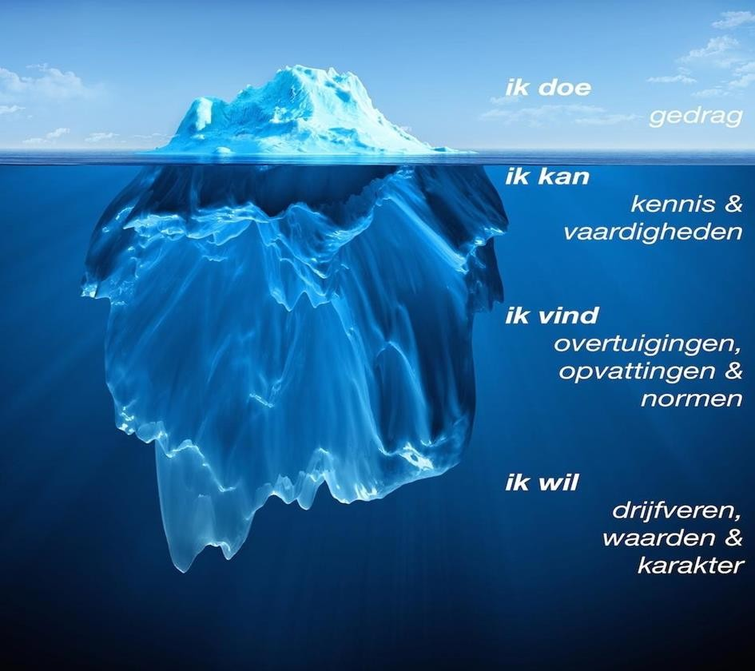
Het zichtbare topje van de ijsberg staat voor ons waarneembare gedrag. Daarnaast worden ook onze kennis, vaardigheden, ervaring en vakbekwaamheid zichtbaar.
Het grootste deel van de ijsberg bevindt zich echter onder de waterlijn. Dit deel blijft voor anderen grotendeels onzichtbaar, maar vormt wel de basis van wie wij zijn en hoe wij handelen. Hier vinden we de oorsprong van ons voorkeursgedrag.
Dit deel helpt ons te begrijpen wat genetisch bepaald is en daardoor moeilijk of niet veranderbaar blijkt. Tegelijkertijd maakt het zichtbaar welk gedrag wij in de loop van ons leven hebben aangeleerd en dus, in principe, kunnen veranderen.
Pas wanneer wij ons verdiepen in onze achtergrond, onze ervaringen en de persoon achter het gedrag, ontstaat werkelijk contact met onszelf.
Hetzelfde geldt voor ons contact met anderen. Alleen wanneer wij iemand echt leren kennen, krijgen wij inzicht in zijn motieven, overtuigingen, waarden en normen. Hoe goed kennen wij zijn afkomst? Zijn levensverhaal? Zijn huidige omgeving?
Wanneer die verdieping ontbreekt, ontstaat gemakkelijk oppervlakkigheid. Dan vullen we in, doen we aannames, plakken we etiketten of vormen we vooroordelen. Vaak zijn dit projecties van onze eigen overtuigingen en ervaringen.
Juist daarom begint duurzame persoonlijke ontwikkeling met nieuwsgierigheid: naar jezelf én naar de ander.
Aan de slag met de invullijst!
Dit is een goed moment om de Invullijst van de Circle Oriëntaties Methode in te vullen.
Heb je dit al eerder gedaan: pak de Invullijst er nu weer bij!
Juist omdat je de verdere uitleg nog niet hebt gehad, kun je jouw antwoorden zo onbevangen mogelijk geven. Vaak is de eerste ingeving namelijk de beste.
Lees de invulinstructie in het document goed door voordat je dat doet!
Dat wat je het meest aanspreekt geef je een 6, het minste een 1 en de rest er tussen in.
Je zult merken dat o.a. het toekennen van een bepaalde score soms lastig is, ook al omdat je per blokje van 6 stellingen slechts 1 x een 1, 1x een 2, een x een 3 etc. mag aangeven.
Uiteraard kom ik verderop tot een uitleg wat je hebt gedaan en wat dit voor jou kan betekenen in de diverse rollen die je hebt!
De Circle Oriëntaties Methode®
Inhoudsopgave (gebruik de zoekbalk rechtsonder om een onderwerp snel te vinden — de paginanummers uit het originele boek golden alleen voor de gedrukte versie)
Circle Oriëntaties Methode in vogelvlucht
Voorwoord
De Inleiding en achtergronden
De Circle Oriëntaties Methode® is niet-normatief!
Ons eigen gedrag is normaal/onze cirkel van gewoontes
“Aanvoelen” of “Aanvullen”?
Gedrag heef een enorme impact
(het verschil tussen “hoe” en “wat”)
Toepassingen van de Circle Oriëntaties Methode®
(instroom-doorstroom-uitstroom)
De methode als aanvulling op andere gevolgde training(en)
Wat kan de methode voor jou doen?
De methodiek
Doel van de methode
Ontstaan en achtergronden
14 Waar komen de 6 Circle oriëntaties uit voort?
Welke 6 Circle oriëntaties zijn er?
Waaraan herken je ze?
De 6 Circle Oriëntaties nader toegelicht
o.b.v. een algemene beschrijving van hun gedragsmatige
Sterkten, Valkuilen, Leerpunten en Afkeuren:
Ondersteunen, Ondernemen, Onderbouwen,
Overdenken, Overleggen en Overeenkomen.
De 6 Circle oriëntaties en hun non verbale gedrag
De methode zegt niets van het ‘waarom’ en ‘wat’
en veel over de ‘wie’ en het ‘hoe!
Het beter beheersen van het excessief gebruik van de oriëntaties
het doorslaan, het terechtkomen in onze valkuilen
De koffer met ons gedrag
De 6 Circle oriëntaties schematisch weergegeven
De eerste cirkel: de “Ik”, de eigen cirkel
De Circle Oriëntaties Methode® Invullijst en jouw scores,
de foto van jouw gedrag. Uitleg van jouw scores!
Jouw primaire, secundaire en minst gewaardeerde oriëntatie
Welke herkende eigen sterkten kunnen nog beter worden benut?
Herkenning van het doorslaan van sterkte naar zwakte en het
bewust zijn van de gevolgen van dit doorslaan
Inzicht in de mogelijkheden van effectievere samenwerking met
andere oriëntaties
Zelf uitbreiden van het eigen repertoire door aanvulling met andere
oriëntaties
Concreet inzicht in eigen leerpunten (wat wel)
Benoeming eigen afkeuren (wat niet)
Mogelijke Sterkten, Valkuilen, Leerpunten en Afkeuren
De tweede Cirkel: de ander over “Ik”, vanuit de andere cirkel
Hoe een ander tegen onze oriëntaties aanlijkt
Feedback: op inhoud, relatie, voorwaarden en regels
Hoe ervaart de andere oriëntatie onze oriëntatie?
Als onze oriëntatie als onze sterkte wordt ingezet
Als onze oriëntatie teveel wordt ingezet en zodoende onze valkuil wordt
De derde cirkel: de ander en “Ik”, de interactie tussen
twee of meer cirkels
Hoe ga je met de diverse oriëntaties om?
Hoe verloopt de interactie tussen de diverse Circle Oriëntaties?
De Ondersteunende oriëntatie
De Ondernemende oriëntatie
De Onderbouwende oriëntatie
De Overdenkende oriëntatie
De Overleggende oriëntatie
De Overeenkomende oriëntatie
Verschillende mensen kijken naar hetzelfde
en doen andere waarnemingen
Hoe andermans excessief gedrag te benaderen?
26 Het kan soms moeilijk zijn andermans excessief gedrag
te herkennen
De interactie tussen de diverse oriëntaties in groepen
Van een groeps- of organisatie-score tot een groeps- en/of
organisatieprofiel en daaropvolgend naar een groeps- of
organisatie ontwikkelingsplan
Nawoord
Bijlagen (thema’s)
De thema’s kun je vergelijken met een stuk gereedschap in een gereedschapskist.
Je pakt uit een vak dat wat je nodig hebt om iets te repareren of iets vaster te borgen.
Per thema vindt je:
- algemene zaken en theorieën
- modellen en meetinstrumenten
- praktijkvoorbeelden/cases
- koppelingen met jouw eigen voorkeursgedrag van de Circle Oriëntaties Methode
met behulp van de themakaartjes
- leestips
De thema’s zijn:
Communicatie en gespreksvoering 106-115
Hoe leren we? 116-126
Onderhandelen 127-130
Samenwerken 131-153
Feedback geven (op inhoud en gedrag) 154-161
Leidinggeven en coachen (incl. managers- en baas rol) 162-174
Omgaan met tijd 175-179
Omgaan met veranderingen 180-183
Voorwoord
“Dat wat voor en achter ons ligt stelt maar weinig voor vergeleken met wat in ons ligt. En wanneer we wat in ons ligt naar buiten brengen, gebeuren er wonderen”.
Henry David Thoreau, Amerikaans schrijver (1817-1862)
Toen ik deze tekst voor het eerst las sprak deze me direct aan. Ik realiseerde me toen nog niet hoezeer deze tekst op mijzelf van toepassing was en nog steeds is.
Het veranderde mijn leven!
Waardoor en hoe?
Ergens rond 1985 introduceerde het toenmalige ‘huistrainingsbureau’ MATCH van Kimberly-Clark bij ons destijds het LIFO Oriëntations model van de Amerikanen Katcher en Atkins. Dit model gaat verder waar het boek De Zelfstandige Mens van Dr. Eric Fromm waarover straks meer.
Mijn collega’s en ik vulden een vragenlijst over onszelf in en in een teamsessie werden de resultaten aan ons teruggekoppeld. Ineens stond ons voorkeursgedrag op een flipovervel. Het was concreet, confronterend en uitdagend!
Het veranderde mijn kijk op mijn eigen gedrag en op dat van mijn collega’s. Het werd op een toegankelijke manier in beeld gebracht. Ik kon dit zo vertalen naar praktijksituaties van elke dag. Ik snapte ineens waarom mijn eigen gedrag bijdroeg aan onze samenwerking en wanneer dit niet het geval was.
Veel hebben we er terugkijkend toen niet mee gedaan, het bleef bij termen als interessant en herkenbaar.
Maar ik besloot daar geen genoegen mee te nemen.
En nog steeds doe ik dat niet. Er valt immers oneindig meer te ontdekken als je de moeite neemt om meer onderzoek te doen en dit te combineren met implementatie van wat je gevonden hebt.
Ik weet nog dat ik samen met een van mijn collega’s een poging deed om onze correspondentie met onze klanten op een hoger niveau te tillen met behulp van de LIFO methode.
In die tijd (!) kon een IBM typemachine met tekstverwerking werken met blokken tekst die iemand vervolgens in zijn brief kon ‘plakken’. We maakten blokjes met openingszinnen in de stijl van het voorkeursgedrag van de klant. Iemand met bijvoorbeeld een sterk Ondernemende stijl houdt van korte zinnen, snel inzicht in een gewenst resultaat van de offerte terwijl iemand met een sterk Onderbouwende oriëntatie een duidelijke structuur voorzien van een stappenplan van dezelfde offerte verwachtte.
Toen ik in 1993 met Circle mijn eigen trainingsbureau startte was een van de eerste zaken die ik ging regelen dus een licentie van het LIFO model!
De rest is geschiedenis. Ik ging ermee aan de slag en bleef bezig met ons voorkeursgedrag, tot aan vandaag.
Door jaren intensief werken met het LIFO-model ging ik, naast de sterkten ervan, ook de tekortkomingen van het model zien. Het was in mijn mening niet af, er ontbraken leerpunten en afkeuren. En ….. het werd niet omgezet in een concreet individueel en/of team en/of organisatieplan. En het kwam niet terug in de dagelijkse gang van zaken, al lag dit laatste niet aan het model maar onszelf.
Ik ging dus ook inzien dat het continue en dagelijks werken met een dergelijk model een essentiële voorwaarde voor succesvolle toepassing ervan is! En dat het volledig geïntegreerd moet worden in de dagelijkse gang van zaken!
Ik ontdekte ook dat o.a. tijdens mijn teamsessies dan ook dat het enthousiasme van een Startsessie al snel wegzakte bij de deelnemers. Uiteraard hield ik nog een herhalingssessie na ca. 6 weken. Zo ongeveer op het moment dat iets dat we geleerd hebben weer weggezakt is in het moeras van de onwetendheid, onwil of onkunde. En daar bleef het. Doodzonde vond ik dat.
Herken je het? Welk model je ook neemt: wat er vaak van overblijft is maar een platgeslagen fractie van wat je ermee kan. “Ik ben nu eenmaal blauw en hij is rood dus wat wil je?” vanuit het Insights Discovery kleurenmodel gebaseerd op Carl Jung of in het LIFO model gebaseerd op Erich Fromm : “ik ben nu eenmaal Beheersend/Overheersend (B/O) en zij is Meegevend/Weggevend (M/W)”.
Zo kent elk model zijn eigen voorbeelden, ik ken er inmiddels vele, maar volsta met deze twee.
Ik ging me dus afvragen wat de oorzaak was. Naast de inhoudelijke verschillen van de modellen, die zeker een rol spelen, viel me vooral op dat het gekozen gedragsmodel naast de inhoud van het werk van de deelnemers kwam te staan. Naast de praktijk van de mensen, het team of de organisatie dus en dan wordt borging lastig…. zo niet onhaalbaar.
Ik besefte dat het een integraal en onlosmakelijk onderdeel moest worden van hun dagelijkse praktijk!
Dus als ik erin zou slagen om dit voor elkaar te krijgen zou dat geweldig zijn bedacht ik me. Ik weet immers dat als je bijvoorbeeld (werk)processen wilt verbeteren dat je aan gaat lopen tegen zaken als ontkenning, weerstand tegen veranderingen etc., anders gezegd: tegen zaken die te maken hebben met ons menselijk gedrag. Of dat verbetering met veel enthousiasme werd verwelkomt.
Verschillend gedrag dus, omdat wij mensen nu eenmaal verschillend zijn in ons gedrag. Op dit kruispunt komen processen en menselijke gedragingen samen en beïnvloeden elkaar positief of negatief!
En om dat inzichtelijk en vooral toepasbaar te krijgen ontwikkelde ik daarom het integrale Circle Concept. Voortkomend uit de praktijk van iedere dag en ontworpen om dagelijks toe te passen tijdens het werken in het veld.
Dat maakt het krachtig en effectief.
Dit integrale Circle concept biedt een holistische benadering om de dynamiek binnen een organisatie te begrijpen en te verbeteren.
Alleen door beide genoemde onderdelen in relatie tot het geheel van het systeem te begrijpen is het geheel meer dan de losse onderdelen apart! Het brengt de werelden van Mens en Kapitaal bij elkaar. Het gaat om plezier in het werk hebben én om geld te verdienen. Dus niet of/of maar en/en.
Het beschrijft vier cirkels die continu rond de kern draaien en elkaar beïnvloeden; ze versterken elkaar of werken elkaar tegen. Ze vormen het DNA van een organisatie:
Wie zijn we? Onze mensen, hun opleiding, kennis, ervaring en voorkeursgedrag.
Waarom? Onze visie, missie en kernwaarden.
Wat? Onze bijdrage onze processen en S.M.A.R.T. doelen.
Hoe? Onze strategie om de doelen te bereiken.
Het ziet er in het kort samengevat zo uit:
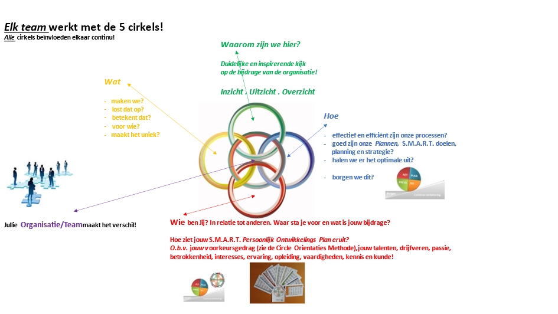
Door de vier cirkels rond de kern continu in beweging te houden en te monitoren kunnen we op tijd bijsturen. We creëren zo een dynamische en veerkrachtige organisatie. De Circle Oriëntaties Methode draait mee in de Wie cirkel en omdat mensen het echte verschil maken is mijn dringende advies: start ook met deze cirkel!
Zo investeert een organisatie direct in haar meest unieke, dus onderscheidende en niet te kopiëren ‘middel’. En haalt zo ook nog eens het meeste uit de geïnvesteerde loonsom! Zo krijgt het begrip werkgeluk niet alleen een menselijke kant maar koppelt deze aan de harde opbrengstkant. Beide versterken elkaar.
Beter kan ik mijn credo ‘haal het beste uit jullie Menselijk Kapitaal’ niet uitleggen!
Het interessante is dat het concept niet alleen op een individueel mens maar ook op team- en/organisatieniveau is toe te passen.
De afkortingen van de term S.M.A.R.T. slaan overigens op concrete doelen die je stelt. Ze zijn daarmee:
Specifiek, Meetbaar, Acceptabel, Realistisch en Tijdgebonden.
Cirkels
We hebben de neiging in onze cirkels rond te draaien. Logisch want ons eigen kringetje, dat wat ons bekend is, geeft ons een gevoel van duidelijkheid, van bekendheid en van comfort en veiligheid. In ieder geval voor ons zelf. Het nadeel van een cirkel kan echter zijn dat, als we willen leren door zaken beter te willen aanpakken, we soms steeds weer terugkomen bij onze handelingen of redeneringen die we juist willen verlaten en zodoende in een vicieuze cirkel terechtkomen.
Alleen met dagelijkse aandacht, moed en doorzettingsvermogen zijn we in staat deze beweging te doorbreken. Dit doen we door eerst deze eigen cirkel beter in beeld te krijgen om ons vervolgens te realiseren dat er ook andere cirkels zijn, oftewel andere manieren of zienswijzen. Dan pas kunnen we ons gaan ontwikkelen. In de juiste betekenis van het woord: eerst los komen van het oude, het bekende, voordat we verder kunnen groeien naar het nieuwe.
We stappen dan ook eens in een andere cirkel, krijgen daardoor totaal andere inzichten en beseffen ons daardoor beter hoe anderen op een andere manier, hun manier, tegen dezelfde zaken aankijken. We kunnen daar vervolgens meer begrip voor opbrengen. “Ik zou dat zelf heel anders aanpakken maar ik snap nu meer en beter waarom hij dat doet en kan daar zelfs meer respect voor opbrengen” vertelde mij een van de mensen, die ik enige tijd begeleidde.
De metafoor van de cirkel is treffend want hoezeer we ook anders zouden willen, we worden steeds weer met onszelf geconfronteerd.
We zullen daarom voor onszelf moeten uitmaken of we verbetering willen en sterker nog: we zullen keuzes moeten maken en de consequenties die daarbij horen moeten aanvaarden en steeds weer bepalen wat de waarde van die verbetering is, voor ons en onze omgeving.
Dit cyclische proces is nooit af, iedere dag weer zullen we onze acties en prestaties tegen het licht moeten houden van onze keuzes en onze doelen.
Naast het willen, dus naast de motivatie, gaat het soms ook om het moeten dus de noodzaak om zaken anders, beters aan te pakken.
Mijn dagelijkse interessante werk bestaat uit mensen en organisaties begeleiden om tot betere prestaties te komen, voor zichzelf, voor elkaar, voor hun omgeving. Soms omdat ze dat willen en soms omdat ze moeten.
Al mijn kennis, kunde, motivatie én ervaring die hieruit voortkomt heb ik gebruikt bij het ontwikkelen van de Circle Oriëntaties Methode. Zowel in het eerste als in het tweede deel.
Deze methode, die met name ons individuele- en groepsgedrag nader onder de loep neemt, mag zoals toegelicht niet los gezien worden van de taakgerichte processen in een organisatie. Naar mijn mening vormen ze daar zelfs een onlosmakelijk geheel mee. Beide cirkels draaien daar ineen.
Ik heb niet getracht een methode te ontwikkelen die als de waarheid zou moeten worden beschouwd. Zo die al bestaat, daarvoor zijn wij als mens te ingewikkeld en te uniek. Ik hoop dat je haar ziet als een start van een zoektocht naar jouw eigen “Ik”, jouw eigen cirkel, om vervolgens beter te begrijpen hoe andermans cirkel kan zijn en hier vervolgens beter mee om te kunnen gaan. Ik heb het hier over een belangrijke voorwaarde van samenwerken. Naast bijvoorbeeld goede afspraken maken en het nakomen ervan. En elkaar aanspreken op het resultaat. En niet alleen wanneer dit negatief uitpakt. Wat dacht je van een welgemeend compliment.
De mensen in mijn dagelijkse omgeving, mijn gezin, mijn vrienden, mijn opdrachtgevers, mijn zakenpartners, ieder van hen en dus met hun cirkels, spelen een belangrijke rol bij het bepalen van mijn keuzes en mijn doelen. Met veel plezier geniet ik elke dag van hun feedback, hun bijdrage om mijn cirkel weer beter te maken, ook door mij een kijkje in die van hen te gunnen.
Ik wens je hetzelfde toe. Veel succes tijdens het werken met de Circle Oriëntaties Methode, dan is de cirkel weer rond..............
Ruud van Hussen
Mensen maken het verschil!
Haal het beste uit jullie Menselijk Kapitaal!
I.v.m. de leesbaarheid heb ik voor de hij-vorm gekozen.
Daarnaast, om zoveel mogelijk woordherhalingen te voorkomen gebruik ik verschillende termen voor het begrip gedragsvoorkeuren:
- stijlen : ik bedoel hiermee gedragsstijlen
- voorkeuren: dit zijn gedragsvoorkeuren
- oriëntaties : gedragsvoorkeuren volgens de Circle Oriëntaties Methode
1. Inleiding en achtergronden.
Communicatie
Het misverstand vergadert altijd op de rand van de tafel mee. Alsof het een onzichtbare deelnemer is. En kan zo negatief bijdragen tot lichte irritatie, tot tijdverlies, tot verlies van geld, tot frustratie, tot elkaar ontwijken, tot een (vorm van) oorlog.
Soms wordt wat gezegd is niet gehoord.
Bovendien wat gehoord is wordt soms niet begrepen.
Zelfs als het begrepen is wordt het niet altijd geaccepteerd.
En wat geaccepteerd is, wordt soms niet toegepast.
Als ik iets tegen iemand zeg kan het bijvoorbeeld zijn dat hij het niet hoort omdat hij in zijn eigen gedachten zit of dat hij in gedachten al bezig is met het formuleren van een reactie, of door teveel lawaai om hem heen het letterlijk niet kan verstaan.
Iemand hoort misschien wel mijn woorden maar het kan maar zo zijn dat iemand ze niet begrijpt. Dat kan aan mij liggen (ik ben verantwoordelijk hoe ik iets zeg) of aan de ander (hij is verantwoordelijk voor hoe hij luistert) of, nog ingewikkelder: aan beiden.
En ook al begrijpt iemand dat wat ik zeg dan wil dat nog niet zeggen dat hij ook accepteert wat ik zeg.
Ook als hij accepteert wat ik zeg wil het nog niet zeggen dat hij het om gaat zetten in actie.
Overigens kreeg ik de 4 regels jaren geleden ingelijst van een team bij Geveke Motoren (daarna Pon Power en nu Zeppelin Power geheten); het hangt in mijn werkkamer.
“Bij ons kan de communicatie beter!” ken je die uitspraak ook? Als we niet oppassen is communicatie een ‘containerbegrip’ waar ieder van ons iets anders onder verstaat. Maar wat houdt die communicatie precies in? Wat zijn de oorzaken als er sprake is van miscommunicatie? Hoe goed weten we van elkaar wat onze werkelijke motieven zijn om iets in te brengen? Of juist niet? Hoe goed luisteren we naar elkaar? Of hoe vaak proberen wij onze mening door te drukken? Of zwijgen we in plaats van te zeggen wat we op onze lever hebben? Bij al deze voorbeelden speelt ons gedrag een belangrijke rol.
Door het dagelijks toepassen van de Circle Oriëntaties Methode krijgen we meer inzicht in ons eigen en elkaars voorkeursgedrag.
In het model ga ik uit van 6 verschillende oriëntaties of gedragsstijlen die we allemaal hebben en in een bepaalde mate inzetten om onze doelen te bereiken.
De individuele gedragsvoorkeuren en de mate waarin ze worden ingezet worden door middel van het invullen van de Invullijst door de persoon zelf benoemt en bovendien wordt de intensiviteit per stijl aangegeven.
Hier zoemt de methode vervolgens op in. Binnen thema’s als samenwerken, feedback geven op gedrag, leidinggeven, coachen, gesprekken voeren, omgaan met onze tijd, hoe we leren en met veranderingen omgaan.
Herkenbaar en in jouw dagelijks praktijk toe te passen.
Mensen communiceren voortdurend, ook via non-verbale signalen. Die pakken we op, bewust en onbewust. Soms laat ons gedrag iets anders zien dan dat wat we beweren te willen, het is dan incongruent oftewel we geven tegenstrijdige boodschappen af.
De vraag is daarnaast of een ander onze signalen wel juist kan interpreteren.
Omdat wij door onze eigen bril naar andermans gedrag kijk is er al snel sprake van een subjectieve waarneming! Die daardoor meer kan zeggen over onszelf dan over de ander.
De Circle Oriëntaties methode is niet normatief en kan ons in een team of organisatie helpen beginnende misverstanden te begrijpen en nog beter: voorkomen.
Het helpt te (h)erkennen dat andermans gedrag en ons eigen gedrag niet beter of slechter is maar gewoon anders. Het besef groeit dat ieder van ons door zijn eigen bril van zijn gedrag kijkt en daardoor ook andere zaken ziet. Wat zou er gebeuren als jullie elkaars bril eens zouden opzetten?
Daarnaast, elke dag komen er nieuwe vormen van communicatie. Voorbeelden zijn email in plaats van een brief, Het gebruik van Teams, Zoom of Skype in plaats van fysieke bijeenkomsten.
En kijk naar wat het gebruik van Chat GPT en andere mogelijkheden die Kunstmatige Intelligentie ons nu al bieden. Hierbij is de input subjectief en daarmee de output ook. En bovendien koud want ontdaan van menselijke warmte. Al denk ik dat daar in de toekomst zeker oplossingen voor komen.
Ondanks deze veranderingen blijft mens-tot-mens communicatie naar mijn mening dus essentieel, met ons gedrag dat een belangrijke rol speelt in wat we waarnemen en interpreteren. En dus in de manier waarop we omgaan met onszelf en met anderen.
Ook in deze 21e eeuw blijft de behoefte aan daadwerkelijke communicatie groot; de toename van de beschreven technologische ontwikkeling zorgt daarnaast wel voor een toename in mogelijkheden. Door de razendsnelle toegang tot universele data kan zij onderdelen van ons werk overnemen. En we staan nog maar in het begin van deze ontwikkelingen.
Zij biedt (nog) geen uitkomst in de vele vragen rondom communicatie, bijvoorbeeld: waarom wordt een en dezelfde boodschap door ieder willekeurig persoon anders ontvangen, geïnterpreteerd en eindigen de, in eerste instantie, meest simpele zaken tot complexe situaties. Zie in dit licht dat bijvoorbeeld een email of een appje wel geschikt zijn om een ander een bijlage te sturen of een afspraak te maken of kort een mededeling te doen. Als we echter discussies willen voeren of standpunten willen toelichten of verdedigen is dat nauwelijks mogelijk omdat we het belangrijkste en grootste deel van de communicatie, het non-verbale, missen, ook al proberen we dat met bijvoorbeeld emoticons te compenseren.
Levenslang leren
Organisaties en individuen beseffen steeds meer de noodzaak van het continue leerproces. In deze tijd waarin hun technologische voorsprong op hun concurrenten steeds korter duurt en producten en diensten steeds meer op elkaar lijken zal de organisatie die continue leert haar voorsprong op de concurrentie kunnen behouden. Bovendien maken de mensen in een organisatie, het Menselijk Kapitaal, het échte verschil!
En dan is de vraag gerechtvaardigd: hoe kan een organisatie en dus haar teams continue leren als de individuele medewerker, op zijn beurt, niet leert of ophoudt te leren?
Valideren, Positioneren en Matchen
Het gaat erom dat de organisatie precies weet wat voor een Menselijk Kapitaal zij in huis heeft, dat zij dit op de juiste waarde inschat (valideren), vervolgens de juiste persoon op de juiste plaats heeft of krijgt (positioneren) en dat er vervolgens van een juiste wisselwerking tussen die organisatie (en haar [pot.] klanten) en haar medewerkers sprake is (matchen).
Daarbij speelt de gedragsvoorkeur van zowel het team en/of de organisatie als van de individuele persoon een cruciale rol. Pas dan is er sprake van een juiste balans in geven en nemen, in werkgeverschap én werknemerschap en dus van de juiste match!
Naar mijn mening moet er sprake zijn van een werkrelatie die in balans is. Dus zowel werkgever als werknemer zijn beiden voor hun deel verantwoordelijk.
En als die balans in onbalans raakt dat beiden dus ook verantwoordelijk zijn om dit te bespreken en te zien of en zo ja welke maatregelen nodig zijn om de balans te herstellen.
Zoals twee partners regelmatig aan de keukentafel met elkaar bespreken hoe elk van hen het partnerschap ervaart. Wat helpt, wat hindert, wat verbindt, wat verwijdert.
De volgende schematische voorstelling geeft het proces van Valideren, Positioneren en Matchen kort samengevat weer:
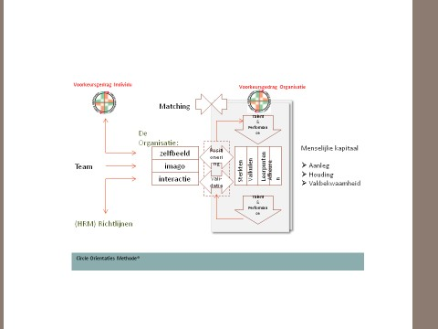
Veel mensen stellen zich bovendien de vraag waar hun competenties werkelijk liggen. Teveel worden ze door hun omgeving gewezen op hun onvolkomenheden met als doel hen te verbeteren. Ik ga dan uit van een positief scenario. Dus vaak met de beste bedoelingen.
De deur naar verbetering wordt echter door de persoon zelf opengezet, of ........dichtgehouden.
“Hij wil niet” hoor ik dan; de vraag is echter is het een kwestie van willen of is er eerder sprake van kiezen, kennen, kunnen, durven of mogen? Ik kom op de betekenis achter deze woorden uiteraard terug.
De Circle Oriëntaties Methode® is een niet-normatief systeem!
Ik schreef er al over. Een van de belangrijkste motieven om met deze methode te werken is de kracht van de methode om gedrag op een niet normatieve wijze te beschrijven. Zo kan uit de methode niet worden bepaald of iemand bijvoorbeeld geschikt is om leiding te geven. Ze voorspelt ook niet welke mening of overtuiging iemand heeft.
Wel doet het een voorspelling hoe, op welke manier dus, iemand leiding zal geven en bijvoorbeeld ook hoe deze in de omgang en samenwerking met anderen zal kunnen optreden. Of hoe hij zijn mening ventileert of achter zijn overtuiging staat.
Simpelweg gezegd kan je ervan leren om in plaats van jezelf te verwonderen dat anderen ander gedrag vertonen dan dat van jou. Je kunt jouw tijd en energie beter besteden door beter, dus efficiënter en effectiever met jouw eigen gedrag om te gaan! Het gedrag van de ander heb je immers niet in de hand, jouw eigen gedrag in hoge mate wel! Bovendien ‘verbeter de wereld en begin bij jezelf’ luidt het gezegde.
Onze cirkel van gewoontes
Maar wat betekent deze als je niet ervaart dat iets beter moet worden? Komt dit dan doordat je in jouw cirkel van gewoonte zit?
Ik geef het volgende voorbeeld: je zit s ’avonds op de bank. Ineens besef je dat je vergeten bent om een mailtje van jouw collega te beantwoorden, wat vervelend. Je pakt jouw gsm die naast je ligt en mailt jouw collega alsnog.
De prikkel kwam dus van de gedachte die ogenblikkelijk een mate van stress (wat vervelend) bij jou oproept. Dit gevoel zet jouw automatische gedrag in gang (gsm pakken en mailen). De beloning volgt: toch iets positiefs gedaan.
Als je dit gedrag maar vaak genoeg herhaald wordt deze bijna automatisch. De praktische truc is meestal niet stoppen met dit gedrag, maar de routine vervangen door een andere terwijl je wel dezelfde beloning houdt. Dus bijvoorbeeld door eerst bij jezelf na te gaan of je direct moet mailen of dit morgenochtend ook kan doen.
Je maakt een korte aantekening als herinnering en gaat verder met waar je mee bezig was.
Ons eigen gedrag is normaal.
Wij mensen hebben de neiging ons eigen gedrag als ‘normaal’ te beschouwen en dat van de ander soms als niet effectief, niet ter zake doende of vreemd.
“Ik snap niet dat Frans zoveel tijd nodig heeft om een beslissing te nemen. Ik zou allang de knoop hebben doorgehakt” verzuchtte zijn collega vanuit haar eigen voorkeursgedrag.
We gaan uit van onze eigen oriëntatie (onze eigen gerichtheid volgens Van Dale) en leggen zo als het ware onze norm op aan de ander en proberen deze, (on)bewust en meestal goed bedoeld, te motiveren zijn gedrag te veranderen zodat dit meer aansluit bij dat van ons.
“Aanvoelen” of “aanvullen”?
Daarnaast hebben we de neiging om ons prettig te voelen in het gezelschap der
“gelijken”, hoe valt het anders te verklaren dat we geneigd zijn te kiezen voor mensen die gedrag vertonen dat voor onszelf goed aanvoelt.
Een van de klassieke voorbeelden is dat van de eigenaar van een bedrijf die allemaal “kopieën” van zichzelf heeft aangenomen. Hij heeft waarschijnlijk nooit begrepen dat “aanvullen” wellicht verstandiger was geweest dan “aanvoelen”!
Niets menselijks is ons vreemd. We kunnen echter juist vaak het meest iets leren van die persoon die zo geheel anders is dan wijzelf, de vraag blijft echter: passen wij dit beginsel toe? Of kiezen we (on)bewust voor de veilige en bekende weg….
Gedrag heeft een enorme impact.
De ander zijn gedrag veranderen is dus niet aan de orde. Aan de andere kant, de impact van ons gedrag tijdens onze omgang met anderen heeft wel een enorme invloed op het uiteindelijke resultaat van deze interactie!
Het lijkt soms wel of het “hoe” (= het gedrag) het “wat” (= de inhoud) overheerst. Een beter inzicht in ons eigen gedrag, dat van anderen en de wisselwerking ervan is interessant genoeg om meer van te weten en te begrijpen.
Een van de vele verschillen tussen mens en dier is het gegeven dat een dier op een externe prikkel, de stimulus, direct reageert met een reactie, de respons. Het valt aan, vlucht of verstijfd.
Wij mensen kunnen er bewust anders mee omgaan. Ook wij krijgen prikkels, maar hebben het vermogen om na te denken over onze reactie en vervolgens zodoende te reageren. Ook kunnen wij onze acties en gedachten evalueren om ongewenste effecten te herkennen en voorkomen.
Kijk maar eens wat een nachtje erover slapen voordat je reageert aan winst (rust!) oplevert door dit inzicht en overzicht houden!
“Ruud, in de ruimte die er dus is tussen stimulus en response heb ik dus de keuze om te reageren op een manier die beter is voor mij en voor de mensen om me heen. Daar heb ik tot nu toe eerlijk gezegd nog nooit over nagedacht laat staan naar gehandeld” gaf Kees me tijdens een van onze gesprekken aan.
Omdat hij de 40 ruim is gepasseerd weet hij inmiddels ook dat zijn patroon doorbreken lastig is en om veel doorzettingsvermogen vraagt. Zonder zich ervan bewust te zijn was hij verslaafd geraakt aan zijn negatieve patroon zoals hij dat is gaan noemen. Pas doordat hij daar bewust en bekwaam mee omging kon hij zijn gedrag zo aanpassen dat hij anders ging reageren op nog steeds dezelfde prikkels die op hem afkomen. In plaats van direct in de verdediging te schieten, vraagt hij nu door waarom een ander iets vindt. “Maar het blijft op de loer liggen” zei hij. Levenslang leren is dan ook de enige optie.
Iedereen die van een vorm van verslaving is afgekomen weet echter ook dat deze verslaving altijd op de loer blijft liggen.
De lijst met het aantal verslavingen is lang. De bekende Jellinek kliniek meldt op haar website maar liefst 15 vormen, van heroïne tot LSD.
Daarnaast komen ook andere vormen van verslaving voor. Denk bijvoorbeeld aan verslaafd zijn aan te hard werken. Volgens onderzoeken hiernaar van o.a.. de Universiteit Utrecht en ArboNed wijzen structureel op een percentage tussen 5 en 10 %. Men schat dat het aantal burn-out gerelateerde klachten in 2026 oploopt tot ongeveer 30 % van de beroepsbevolking in Nederland. Eind 2025 rapporteerde het CBS dat bijna 1 op de 6 werknemers (bijna 16 %) hun werk als zeer stressvol ervaart. Een belangrijke voedingsbodem voor dwangmatig werkgedrag.
Toepassingen van de Circle Oriëntaties Methode®.
De Circle Oriëntaties Methode® is ontworpen om je een beter inzicht in jouw eigen voorkeursgedrag te geven. Met zowel de positieve als de negatieve gevolgen ervan. En om dagelijks te werken met jouw specifieke sterkten, valkuilen, leerpunten en afkeuren. Zodanig dat je efficiënter en effectiever wordt. En wat dacht je van gelukkiger?
Uiteraard vraag jij je af voor welke discipline of activiteit deze methode geschikt is. En ik geef je daarbij wat voorbeelden uit mijn praktijk:
Instroom:
Werving en selectie, het gedragscomponent meenemen in de
beoordeling
Instroomprocessen efficiënter en effectiever stroomlijnen, bijv. ook
het team waar de kandidaat deel van gaat uitmaken in het proces
betrekken o.b.v. het Teamplan.
Voorbeeld: bij een organisatie die ik begeleid krijgt een serieuze kandidaat tijdens een fase in het instroomproces een Invullijst van de Circle Oriëntaties methode met de toelichting dat zowel hij zelf als de organisatie zo zijn voorkeursgedrag kan meenemen, naast zaken als opleiding, ervaring vakkennis etc. Dit doet recht aan zowel zijn persoon en zijn eventuele toekomstige werkgever.
Dit voorkeursgedrag wordt als volgt gevalideerd: de door hem ingevulde lijst wordt door mij geanalyseerd en voorzien van opmerkingen en met name vragen teruggestuurd naar diegene die de gesprekken met de kandidaat voert. En die de methode zelf al toepast. Omdat ik de kandidaat niet ken kan deze werkwijze veel inzichten opleveren voor zowel de organisatie als de kandidaat. Deze stelt zich immers toch ook vragen als wil en kan ik wel werken in een organisatie met dit of dat specifieke voorkeursgedrag.
Zie je dat als er al een teamprofiel is gemaakt dit ook concreet in het proces wordt meegenomen? Ook de toekomstige teamleden worden zo meegenomen in het beslissingsproces. En de kandidaat op zijn beurt heeft beter inzicht in wat hij zal aantreffen. Wel een extra investering in tijd en inzet kan je zeggen. Bedenk eens hoeveel schade er aangericht kan worden, hoeveel extra tijd dit bij beide partijen kost om weer op zoek te gaan naar een geschiktere kandidaat. Hoeveel onnodige geldverspilling er plaatsvindt.
Doorstroom:
S.M.A.R.T. Circle Persoonlijk ontwikkelingsplan: opzetten tijdens de
introductieperiode
(op basis van tijdens de instroom al opgedane zaken!)
Iemands leerstijlen herkennen en verwerken in het plan (zie
themakaartje)
Loopbaanplanning
Analyse organisatiestructuur
Analyse cultuur van het team en/of de organisatie
Begeleiding fusieprocessen
Samenstelling van teams
Samenwerking op een hoger peil brengen (zie themakaartje
Samenwerken)
Professionele feedback op gedrag geven
(zie themakaartje Feedback geven)
Analyse en doorbreken van conflicten tussen individuen/teams
Omgaan met veranderingsprocessen, o.a. wat draagt bij, wat hindert,
o.a. weerstand (zie themakaartje Omgaan met veranderingen)
Ontwikkeling van stijlen van leidinggeven
(zie themakaartje leider/manager/coach/ ‘baas’ rollen)
Ontwikkeling van gespreksstijlen
(zie themakaartje Gespreksvoering)
Ontwikkeling van onderhandelingsstijlen
(zie themakaartje Onderhandelen)
Efficiënt en effectief omgaan met beschikbare tijd
(zie themakaartje Omgaan met tijd)
Uitstroom:
Outplacement, het gedragscomponent meenemen in de beoordeling
van welke bijdrage het best past bij de persoon. En om een
voorspelling te doen van welke branche of type organisatie het meest
past bij deze persoon en andersom. Oftewel wat op voorhand de beste
match is.
Ook hier is veel winst te halen. Precies zoals bij de instroom al beschreven voorkomt dit veel teleurstelling, tijds- en geldverlies!
Voorbeeld van een uitstroomtraject: ik kwam in gesprek met iemand die door zijn organisatie was ontslagen. Na een periode van veel frustratie bij zowel hemzelf als bij het bedrijf (!) was er aan een jarenlange worsteling een eind gekomen en werd hem een outplacement traject aangeboden. Nadat hij zijn verhaal had verteld feliciteerde ik hem met zijn ontslag en met name met de kans om nu betere keuzes voor hemzelf te maken.
Ik moet bij dit soort cases altijd aan het liedje denken van Acda en De Munnik: ‘Het regent zonnestralen’. Over nieuwe kansen als je jezelf maar kent en jezelf durft te blijven. Of als je ze, zoals in dit liedje bij toeval in de schoot geworpen krijgt, ze moet pakken.
We bespraken zijn voorkeursgedrag waaruit zijn meer introverte- en taakgerichte stijlen bleken. Zijn functies tot nu toe vroegen juist om (zeer) extraverte en relatiegerichte stijlen. Dit verklaarde zijn jarenlange worsteling. Overigens ook die van zijn directie met hun voorkeursgedrag in wisselwerking met het zijne.
Het bleek dat hij ook al aan het rondkijken was naar dezelfde soort functies want die kende hij immers…..
Ik adviseerde hem om te stoppen met zoeken en eerst goed in beeld te krijgen van wie hij was, waarom hij hier was, wat zijn bijdrage was en hoe die het best tot zijn recht kwam. Misschien niet de eerste vragen waar je aan denkt als je zo snel mogelijk een nieuwe baan wilt krijgen, dat begrijp ik.
Toen hij daarna beter in staat was te weten ‘in welke hoek ’hij het moest vinden’ werden zijn sollicitatiegesprekken succesvoller. Want ook daarvoor geld immers: wie en wat zoeken jullie als organisatie en wat wil en kan ik bieden. Er komt een betere balans in geven en nemen, in werkgever- en werknemer schap!
Uiteraard is bij de vindtocht het voorkeursgedrag niet het enige onderdeel, ook de diverse organisatorische processen behoren daarbij te worden behandeld en mogen niet los van elkaar gezien worden aangezien zij elkaar versterken of tegenwerken.
Ook zal er een balans moeten zijn tussen de zachte of “rode” kant van de organisatie: de persoon en zijn gedrag, de relationele aspecten enerzijds en , de “blauwe” kant van de organisatie: de taakkant, de processen, het “wat” en “hoe”. Aan beide kanten van de weegschaal zal gewerkt moeten worden aan optimale resultaten!
Zie daarvoor mijn maatwerk aanpak: het integrale Circle Concept.
De methode als aanvulling op andere trainingen die je al hebt gevolgd.
Omdat deze methode sterk ingaat op de manier waarop ieder van ons omgaat met zijn voorkeursgedrag sluit deze goed aan bij de al door jou gevolgde vaardigheidstrainingen als die vaak meer het “wat” als inhoud hadden.
Als voorbeeld: in iedere training die leidinggeven als inhoud heeft zal het onderwerp “delegeren” worden behandeld. Je hebt dan ongetwijfeld een methode aangereikt gekregen die ingaat op wat je allemaal bij/tijdens het delegeren moet doen en laten.
De manier waarop je dit toepast zal echter sterk afhangen van jouw eigen gedragsvoorkeuren, de manier dus waarop jij dit delegeren zult toepassen.
Vandaar dat ik een themakaartje “Leidinggeven” heb ontworpen dat de diverse rollen die je vervult behandelt. Hierdoor kun je, uitgaande van jouw eigen gedragsvoorkeurenprofiel, de manier waarop jij deze rollen invult concreet invullen. Zo krijg je als het ware een unieke en dus voor jou geschikte maatwerkaanpak rond dit thema!
Zo heb ik diverse thema’s uitgewerkt. Je vindt ze in de bijlagen terug.
Wat kan de Circle Oriëntaties Methode® voor jou doen?
Door bewust met de methode te werken zal jouw zelfinzicht nog verder toenemen. Dit verbeterd zelfinzicht is essentieel om te komen tot echte verbetering. Naar mijn mening komt deze niet voort uit zaken die van buitenaf zijn opgelegd, nee, jij zelf zet de deur naar verbetering van binnen uit open!
Ook zal je een verbeterd inzicht krijgen in hoe anderen tegen jouw gedrag aankijken. Vaak wordt dit niet, of niet op de juiste wijze, aan jou verteld. Of heb je dit nooit toegestaan. Of durfde de ander jou dat niet te vertellen.
Hoe dan ook, als jij je er voor openstelt, valt er veel te leren.
Tot slot kan deze methode jou in staat stellen jouw omgang en samenwerking met anderen te verbeteren. Ik durf te stellen dat jij sterk afhankelijk bent van jouw vermogen tot samenwerking.
De manier waarop jij jezelf als persoon neerzet heeft een enorme impact, iets waarvan jij je wellicht niet altijd van bewust bent en/of (on)bewust naar handelt.
De Methodiek.
Voorafgaande aan het gesprek of de sessie heb jij een Circle Oriëntaties Methode® invullijst over jezelf ingevuld. Hopelijk heb je dit “eerlijk” gedaan in die zin dat je het niet sociaal gewenst hebt ingevuld. Het kan namelijk voorkomen dat je iets hebt ontdekt dat je wellicht liever niet had erkend.
Echter, door dit wel toe te geven heb je de basis gelegd voor verbetering.
Eerst herkennen, daarna erkennen, om vervolgens te leren is de juiste volgorde.
Tijdens het gesprek of de sessie zal jou de theorie van de methode uitgelegd worden op zodanige wijze dat deze voor je gaat leven en toegankelijk wordt gemaakt.
Achtereenvolgens zullen daarom de 3 fasen (cirkels) in die volgorde ook worden behandeld:
“de ik” of Intentie (deel 1: de eerste cirkel)
“de ander over ik” of Imago (deel 2: de tweede cirkel, vanuit de
andere cirkel)
“de ander en ik” of Interactie (deel 3: de derde cirkel, de interactie
tussen de twee, of meer cirkels)
Je zult merken dat de respectvolle manier waarop dit gebeurt goed aansluit bij deze niet-normatieve methode.
Met dit document krijg je volledig inzicht in de theorie die ten grondslag ligt aan de methode. Ook de uitslag van jouw scores op de genoemde invullijst worden, na toegelicht te zijn, aan jou teruggekoppeld.
Zie het als de start van de al eerder genoemde (verdere) zoektocht naar jouw eigen “Ik”, jouw eigen cirkel. Daarna zal je kunnen gaan werken aan jouw persoonlijke plan van aanpak op basis van deze methode!
Doel van de methode.
Het in kaart brengen en ontwikkelen van jouw persoonlijke gedragsvoorkeuren, met daarin jouw:
Sterkten en Valkuilen
Leerpunten en Afkeuren
Met als doel een betere persoonlijke effectiviteit. Als een mens zich in de groene delen van zijn cirkel bevindt functioneert hij het best. En draagt hij ook beter bij aan de team- en/ of de organisatiedoelen. Bevindt hij zich in de rode gedeelten van zijn cirkel dan functioneert hij minder of, als hij zich langere periode in dit gedeelte bevindt, in het geheel niet!
Ontstaan en achtergrond van de Circle Oriëntaties Methode®.
De methode is ontstaan uit theorieën en werkwijzen van:
Dr. Erich Fromm (1900-1980)
LIFO Oriëntaties methode van Katcher en Atkins
Dr. Carl Gustav Jung (1875-1961)
Carl Rogers (1902-1987)
Specialisatie en werkwijze Ruud van Hussen, eigenaar van Circle
Advies Training Begeleiding
Een van de bepalende denkers over mens en maatschappij van onze tijd is Dr. Erich Fromm (1900-1980). Zoals vele bekende Joodse wetenschappers uit Duitsland vluchtte hij voor het nazi-regime al voor de tweede wereldoorlog naar de Verenigde Staten. Hij geldt als een van de belangrijkste denkers over mens en maatschappij van onze tijd.
Ik draag deze methode op aan hem, dus ook aan zijn nagedachtenis o.a. door hem opschreven in zijn boek De Zelfstandige Mens dat in 1955 verscheen.
Let wel, net voor de jaren zestig van verleden eeuw, de tijd waarin het gezag (ouders, vrienden, buren, overheden, kerk, onderwijs, de wijkagent) stevig onder de loep werden genomen door in eerste instantie de jeugd. En die jeugd was ik.
Ik weet het nog als de dag van gisteren. Ook ik deed mee aan zogenaamde sit-down stakingen op mijn middelbare school in Utrecht. Onderwijzers en leerlingen kwamen daardoor in gezagscrises terecht. Ook elders in de maatschappij deed dit fenomeen zich voor: ik zag dat bij politieagenten de pet van het hoofd werd geslagen. Dat de kerken begonnen leeg te lopen. Dat ouders ook niet alles wisten. Dat hun muzieksmaak totaal niet overeenkwam met de mijne.
Nu is het normaal dat de puberteit kritische vragen doet stellen, een andere smaak heeft dan de oudere generatie, zich afzet etc. Dat is volgens mij van alle tijden.
Toch was dit heftiger: voor zowel mijn ouders als voor mij: ineens werden grote maatschappelijke patronen doorbroken, de ontzuiling begon.
Veel ‘vastigheid’ verdween met als gevolg meer individualisme, meer naar eigen belang in plaats van groepsbelang. Een andere mogelijkheid en manier om zich te oriënteren op (wereld)nieuws.
Zet dat maar af tegen de huidige manieren in de wereld van internet, sociale media en Artificial Intelligence. Waar we nog maar aan het begin staan van deze ontwikkeling.
Fromm stelde in zijn boek dat de mens wel degelijk de mogelijkheid bezit het goede te kennen en daarnaar te handelen.
Deze boodschap is zowel inspirerend als ongemakkelijk, omdat de mens zelf verantwoordelijkheid dient te nemen voor al wat goed en kwaad is.
Niet uit een verlammend schuldgevoel of een verkeerd begrepen overmoed, maar uit het besef dat moraal voorkomt uit een actieve levenshouding.
Aldus biedt De Zelfstandige Mens bovenal een pleidooi voor een humanistische ethiek: de mens kent zelf de grenzen tussen ‘goed’ en ‘kwaad’ en kent die beter naarmate hij waarachtig vrij en zelfstandig weet te leven. Aldus de tekst op de achterflap van het boek (elfde druk uit 2019).
In de laatste alinea van zijn boek schrijft hij, ik citeer: “De beslissing berust bij de mens. Bij zijn vermogen om zichzelf, zijn leven en geluk ernstig te nemen; bij zijn bereidheid om de ethische problemen van hemzelf en van de wereld onder ogen te zien. Bij zijn moed om zichzelf te zijn, om een zelfstandig mens te zijn”.
De Amerikanen Katcher en Atkins ontwikkelden hieruit in de jaren zestig van de vorige eeuw hun Life Oriëntations model, ook wel LIFO genoemd.
Ons gedrag werd daarmee binnen 4 gedragsstijlen in beeld gebracht. Zij beperkten zich echter tot ‘slechts’ onze sterkten en zwakten. Daarnaast laat het model gedrag zien in gunstige en ongunstige omstandigheden. Ik miste steeds meer de duiding op wat een persoon hieronder verstaat. Logisch ook volgens mij omdat ieder van ons die omstandigheden anders ervaart. Een voorbeeld: zelf ervaar ik iets nieuws als uitdagend en gunstig. Een kennis van me ziet ze eerder als bedreigend en dus ongunstig.
Ik ging ook het antwoord op de vraag wat met die inzichten in ons gedrag te doen missen. Ook waren naar mijn mening het aantal thema’s niet voldoende uitgewerkt. Ook vond ik dat de 4 gedragsstijlen verder uitgesplitst dienden te worden.
Carl Rogers heeft veel gepubliceerd, o.a. over communicatie-congruentie. (de vaststelling of onze verbale communicatie, het gesprokene, wel in samenspraak en overeenstemming is met onze non-verbale communicatie, onze houding). Uiteraard ook daarover later meer.
Leestips: De Zelfstandige Mens. Dr. Erich Fromm
De mens en zijn symbolen. Dr. Carl Gustav Jung
Psychologische typen. Idem
Mens worden. Carl Rogers
Sinds 1985, en vanaf 1993 met mijn zelfstandige bureau Circle Advies Training Begeleiding te Nieuwkuijk, heb ik tal van trainings- en begeleidingstrajecten van zowel individuen als teams voor zeer uiteenlopende organisaties verzorgd.
Rond 2001 ontwikkelde ik mijn Circle Oriëntaties methode. De door mij ontwikkelde concepten en theorieën zijn destijds uiteraard eerst uitgebreid getest in diverse groepen gebruikers. Daarnaast continue getoetst aan de praktijk van de vele deelnemers gedurende de afgelopen 25 jaar, dus tot de dag van vandaag.
In deze uitgave zul je om die reden voorbeelden tegenkomen die voortkomen uit hun (re)acties en praktijk.
Vandaar dat het tijd werd voor een update. Het resultaat is deze jubileumuitgave na 25 jaar werken met de methode.
Waar komen de 6 Circle oriëntaties uit voort?
Elk van de 6 Circle Oriëntaties zijn ontstaan door:
Aangeboren gaven
Eigenschappen gevormd door ervaring
Omstandigheden (vroeger/nu)
De combinatie van oriëntaties doet een voorspelling van een persoonlijke manier van optreden.
Verandering van gedrag is geen eenvoudige zaak! Immers, hoe langer wij gebruik gemaakt hebben van onze gewoonten en patronen, des te lastiger is het deze te doorbreken. En realiseer je dat onze eigenschappen uit ervaring gevormd zijn en dus al vanaf onze vroegste jeugdjaren. Omdat we daarnaast al een bepaalde tijd onder bepaalde omstandigheden hebben verkeerd en ons gedrag daaraan hebben aangepast en deze als normaal zijn gaan beschouwen zijn we ons daar niet altijd van bewust.
En herkenning en erkenning van zowel de positieve als de negatieve impact ervan is een belangrijke voorwaarde om ons gedrag te veranderen.
Dit neemt niet weg dat we hiertoe wel in staat zijn. Onder drastische en/of dramatische omstandigheden moeten we ons gedrag snel kunnen aanpassen c.q. veranderen. Deze externe factoren kunnen dermate ingrijpend zijn dat de noodzaak helder is.
Onder ‘normale’ omstandigheden zien we hier het belang niet altijd van in. Of we hebben niet de intrinsieke motivatie om dit te doen. Of we zien, door onze vastgeroeste patronen, gewoon niet dat we ook ander gedrag in kunnen inzetten!
We zijn er dus wel toe in staat, heel simpelweg gezegd: we hebben ons voorkeursgedrag aangeleerd dus kunnen we het ons ook afleren.
Echter vanuit dat (zelf)inzicht alleen is dat nog maar niet zo gedaan, ik kom daar uiteraard op terug.
Ook al merken we dit eigenlijk wel, in situaties waarvan we voelen dat ze uit de hand lopen hebben we de neiging (nog) meer van hetzelfde te doen in plaats van ons gedrag te beheersen en ‘iets’ anders te doen. Maar wat dan? Deze methode geeft daar handreikingen voor.
Het woordje ‘te’ is een van de kleinste woordjes in onze taal.
En een woordje met grote gevolgen!
Een voorbeeld hiervan: iemand heeft het tijdens een feestje zo naar de zin dat de ene mop na de andere volgt. En in zo’n hoog tempo en zo lang achter elkaar dat zijn toehoorders afhaken. Zijn té grappige optreden zorgt ervoor dat hij niet meer op feestjes wordt uitgenodigd. En dat mensen hem niet serieus nemen.
Een ander voorbeeld: een manager van een bedrijf is zó ondernemend dat hij té hard van stapel loopt en als een streber wordt gezien door zijn collega’s. Niemand wil eigenlijk nog met hem samenwerken. Ze werken het liefst om hem heen.
De vraag is of iemand dit doorslaan van sterkte naar valkuil zelf als zodanig ervaart! Vaak zeggen mensen dit niet (meer) tegen deze persoon, of ze durven het niet tegen hem te zeggen. Het geven van feedback op gedrag wordt door veel mensen als lastig ervaren. Willen we dat wel? Weten we eigenlijk wel hoe we dat het beste doen? Mogen we dat wel? Van de ander, van onszelf? Durven we dat wel, wat zijn de consequenties?
Het vak ‘assertiviteit’ mag wat mij betreft in elk schoolpakket worden opgenomen.
Ook merk ik dat de term aanspreken op gedrag te vaak wordt geassocieerd met de negatieve aspecten van iemands gedrag. Aanspreken op iemands gedrag kan toch ook op de positieve aspecten, bijvoorbeeld “bedankt voor jouw ingrijpen in die discussie!” of “fijn dat je daar zo lang en goed over hebt nagedacht!”
Op de vragen over het doorslaan van sterkte naar valkuil ga ik antwoord geven nadat ik alle 6 Circle oriëntaties heb behandeld. Ze hebben namelijk alle 6 een mogelijkheid tot doorslaan, alleen de wijze waarop ze doorslaan verschilt sterk van elkaar.
Accepteer vast dat er aan iedere sterkte een mogelijke zwakte vastzit! Zoals de dag hoort bij de nacht! Of eb en vloed. Er zijn maar weinig mensen die deze natuurverschijnselen niet accepteren.
Het gaat er meer om dit doorslaan bij jezelf te herkennen en vervolgens jouw sterkten beter te leren beheersen, zodat het doorslaan minder frequent optreedt en contraproductieve gevolgen minder vaak voor zullen komen en uiteindelijk wellicht gedeeltelijk of geheel achterwege zullen blijven.
Dit herkennen en erkennen van de eigen sterkten en valkuilen is echter niet voldoende voor een plan ter verbetering, daarom worden ze in de Circle Oriëntatie Methode® verder aangevuld met:
Eigen leer- en aandachtspunten
Het inzicht in eigen afkeuren
Bovendien worden ze in diverse thema’s verder uitgediept. Ik noem thema’s als samenwerken, leidinggeven, omgaan met veranderingen, hoe leren we?
Ook omgaan met tijd, met feedback geven en ontvangen, gespreksvoering komen aan bod.
16. Welke 6 Circle oriëntaties zijn er?
Het is als eerste belangrijk om ons te realiseren dat er nooit sprake is van slechts 1 oriëntatie in het gedrag van de mens. Er is altijd sprake van een combinatie van diverse oriëntaties, het is juist deze eigen combinatie die mensen zo uniek maakt!
De reden dat ik ze, in eerste instantie, afzonderlijk behandel heeft slechts herkenning van de desbetreffende oriëntatie en daarmee het verschil ten opzichte van de andere oriëntaties tot doel.
Eigenlijk betekent het dat we, afhankelijk van de prikkel(s) die we krijgen, een bepaalde combinatie van oriëntaties gebruiken. Die combinatie heeft onze voorkeur en we neigen ernaar om ons gedrag in die combinatie dus continue te herhalen. Dit heeft voor ons zowel positieve als negatieve consequenties. Voor zowel onszelf als voor onze omgang met anderen.
In een volgend stadium zal juist deze mix van de stijlen worden behandeld.
Elk van de 6 oriëntaties heeft of een introvert (naar binnen gericht) of een extravert (naar buiten gericht) karakter.
Ter verdere verduidelijking: introverte oriëntaties halen energie uit zichzelf. Extraverte halen energie uit andere personen of situaties.
Bijvoorbeeld, de introverte oriëntatie denkt: “welke vraag kan ik het beste stellen?” De extraverte oriëntatie stelt de vraag en kijkt je daarbij aan.
Ik noem met opzet oriëntatie en niet persoon. Ik zie een persoon en zijn gedrag als twee verschillende zaken: het gedrag komt wel uit de persoon voort maar is niet de persoon.
Introvert en extravert gedrag zijn beide in onszelf aanwezig, alleen de mate waarin dat gedrag aanwezig is verschilt van persoon tot persoon en binnen deze persoon ook nog eens afhankelijk van de prikkel die deze op zijn manier ervaart. Dit alles maakt ons gedrag uniek. Ik kom daar bij de bespreking van de scores ongetwijfeld op terug.
Er zijn prikkels waarop wij reageren met extravert gedrag en prikkels waardoor we introvert gedrag vertonen. De hele dag zijn we, in onze interne dialoog, bezig met ons (on)bewust afvragen “ga ik er nu op af?” dus extravert of “ga ik ervan weg?”. Meer introvert gedrag.
“Doe ik iets?” of “laat ik nu iets?” Ons gedrag is immers ons doen én laten!
Daarnaast onderscheid ik Taakgerichte stijlen en Relatiegerichte stijlen binnen ons voorkeursgedrag. Dus ook daarvoor geldt hetzelfde wat mij betreft: ook hier reageren we op elke prikkel weer anders!
Voorbeeld:
De Taakgerichte oriëntatie vraagt op vrijdag: “hoeveel resultaat is er behaald deze week?”
De Relatiegerichte oriëntatie vraagt ”heeft iedereen het naar z’n zin gehad deze week?” Zie je dat er dus ook combinaties mogelijk zijn?
Eigenlijk betekent het dat we onbewust constant bezig zijn met keuzes: “kies ik voor introvert of extravert gedrag?” En daarnaast met “kies ik voor taakgericht of voor relatiegericht gedrag?”
Ik heb je door je de Invullijst over jezelf te laten invullen die vragen bewust consequent in een bepaalde volgorde voortdurend gesteld en dat veroorzaakte misschien binnen jouw eigen voorkeursgedrag al (een vorm van) wrijving.
Je zou dus ook kunnen zeggen dat “intern” onze oriëntaties met elkaar de strijd aangaan of er juist voor kiezen dit niet te doen.
Door de onderlinge verschillen kunnen ze zelfs tegenstrijdig aan elkaar zijn. Of elkaar juist versterken. Ons menselijke gedrag is ook soms tegenstrijdig: in de ene situatie laten wij ons bijvoorbeeld gelden terwijl we dat in een andere situatie niet of veel minder doen. Uiteraard kom ik op dit interessante fenomeen terug!
Als je jezelf de definities eigen hebt gemaakt zal je zien dat er sprake is van jouw unieke combinatie van de 6 oriëntaties.
Ik kom daar bij de bespreking van de scores nog op terug. Ook hiervoor geldt dat je er voor jezelf namelijk een balans voor kunt opmaken.
Nogmaals, de reden dat ze, in eerste instantie, afzonderlijk behandeld worden heeft slechts herkenning van de desbetreffende oriëntatie tot doel en daarmee ook het verschil ten opzichte van de andere oriëntaties!
Je gaat ontdekken dat het juist de mix van stijlen is die iemands gedrag vertegenwoordigt!
De 6 Circle Oriëntaties zijn:
C1 Ondersteunen Introvert en Relatiegericht
C2 Ondernemen Extravert en Taakgericht
C3 Onderbouwen Introvert en Taakgericht
C4 Overdenken Introvert en Taakgericht
C5 Overleggen Extravert en Relatiegericht
C6 Overeenkomen Extravert en Relatiegericht
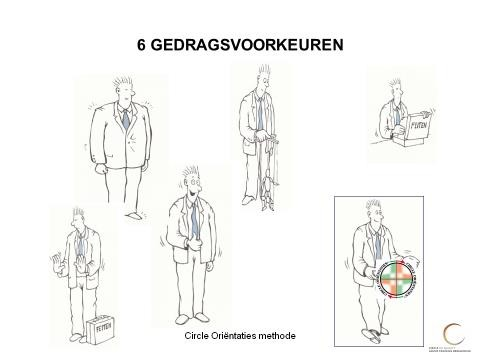
Op de volgende pagina’s zal ik de diverse Circle Oriëntaties Methode® de revue laten passeren en ze zo uitdiepen dat je ze kunt gaan herkennen in jouw eigen gedrag en in dat van anderen.
Waaraan herken je de 6 Circle oriëntaties?
(Zie ook het Algemene themakaartje met de grijze band!)
Algemene beschrijving van de Sterkten en Valkuilen en daarnaast de Leerpunten en de Afkeuren:
Door de 6 oriëntaties zo te beschrijven zullen de unieke eigenschappen per oriëntatie én hun onderlinge samenhang steeds duidelijker voor je worden. De “Ik”, de eigen cirkel wordt, per oriëntatie, duidelijker.
Dit is de eerste stap in het leerproces: de herkenning van de eigen oriëntaties en de erkenning ervan!
Om vervolgens met behulp van dit programma te kijken naar het wellicht nog productiever gebruik van de oriëntatie: wanneer werkt deze in jouw voordeel?
Daarna (beter) te leren herkennen wanneer deze oriëntatie doorslaat en wat de gevolgen zijn van het contraproductieve gebruik van de oriëntatie. Wanneer werkt deze in jouw nadeel? Voor zowel jezelf als in wisselwerking met jouw omgeving en anderen?
Pas als deze “Ik” fase helder en concreet is geworden is het mogelijk naar de leerpunten en afkeuren te gaan kijken om deze, zoals aangegeven, in een persoonlijk ontwikkelingsplan te stoppen met als doel een effectiever en efficiënter optreden!
De 6 oriëntaties nader toegelicht. (C1 t/m C6)
Ik kan het niet genoeg benadrukken: wij hebben niet 1 type voorkeursgedrag.
In deze methode beschrijf ik er 6.
Lezerswaarschuwing:
Omdat ik ze in de beschrijvingen sterk neerzet om ze duidelijk te maken loop je het gevaar te denken dat iemand slechts 1 voorkeursgedrag heeft!
Het is juist de mix van oriëntaties die iemands voorkeursgedrag kenmerkt! Daarom ook komt het voor dat iemand wel zijn voorkeursgedrag herkent maar niet alle bijbehorende sterkten, valkuilen, leerpunten en afkeuren. Ik leg dan ook uit dat we als het ware ‘shoppen in onze oriëntaties’: uit onze unieke gedragsstijlen kiezen we bewust of onbewust uit al de 6 oriëntaties het e.e.a.
Ik kom daar later op terug in het hoofdstuk dat ik de koffer met ons gedrag heb genoemd.
Per oriëntatie omschrijf ik hoe deze zich laat herkennen, ik noem:
Sleutelwoord: een woord dat deze oriëntatie kenmerkt
Motivatie: wat is de innerlijke drijfveer van de oriëntatie?
Houding: hoe stelt deze oriëntatie zich op?
Typerende vraagstellingen: welke vragen zijn typerend voor deze oriëntatie?
Basisbenadering: op welke manier treedt deze oriëntatie mensen en situaties
tegemoet?
Daarnaast beschrijf ik mogelijke:
Sterkten : het productief gebruik van de oriëntatie, wanneer werkt dit in zijn voordeel?
Valkuilen : het contraproductief gebruik van de oriëntaties, wanneer werkt dit in zijn nadeel?
Leerpunten : hoe kan de oriëntatie meer halen uit zijn sterkten?
Afkeuren : waar heeft de oriëntatie een sterke afkeur van?
Ik hecht er ook aan hier te melden dat mijn beschrijvingen van de 6 oriëntaties een afspiegeling zijn van al die ontelbare persoonlijke en vertrouwelijke gesprekken gedurende ruim 33 jaar die ik inmiddels met zoveel mensen heb gevoerd tijdens de terugkoppeling van de door hen ingeleverde invullijsten en scores!
Deze gesprekken zijn een wezenlijk onderdeel van wat ik noem het validatieproces!
Het gaat om immers om Menselijk Kapitaal!
Om die reden is het een belangrijke voorwaarde dat een getrainde coach samen met diegene die de lijst heeft ingevuld de resultaten bespreekt in een persoonlijke ontmoeting!
Immers, menselijk gedrag is meer dan de uitkomst van een invuloefening!
Je zult de lijst maar precies andersom ingevuld hebben dan de overigens duidelijke instructie heeft aangegeven. Of hem sociaal wenselijk hebben ingevuld, of door een ander hebt laten invullen.
Dit zijn maar een paar praktijkvoorbeelden die ik hier geef….
C1 Ondersteunen: een introverte- en relatiegerichte oriëntatie.
Sleutelwoord: Helpen
Motivatie: “Gezien worden als een persoon die anderen helpt en met respect behandelt”.
Houding: Eigen normen en waarden vormen de leidraad: “Wat vind ik”.
Typerende vraagstellingen:
Hoe kan ik helpen?
Wat is het nut? Is het goed wat ik doe?
Is het eerlijk en rechtvaardig?
Dient dit het algemeen belang?
Basisbenadering:
“De mening van anderen is belangrijk en dient daarom gevraagd en gehoord te worden. Door onvoorwaardelijk steun aan te bieden zal de waardering voor mijn persoon vanzelf toenemen”.
Sterkten: Ondersteunen
Valkuilen: Zichzelf wegcijferen, zichzelf tekort doen.
Leerpunten: Voor jezelf opkomen
Afkeuren: Geen respect tonen
Algemene beschrijving van de Sterkten (wanneer werkt dat in zijn voordeel).
Het kenmerkende en ook de kracht van deze oriëntatie is de wijze waarop steun en hulp aan anderen wordt aangeboden. Onvoorwaardelijk en dus zonder dat daar direct een beloning in welke vorm dan ook tegenover wordt gesteld. Daarnaast is er een sterke hang naar kwaliteit, iets moet gewoon goed gebeuren, maak er geen rommeltje van is het appèl dat de oriëntatie doet. Het zijn vaak uitstekende gastheren, het zal je aan niets ontbreken.
Een persoon met een sterk ontwikkelde Ondersteunende oriëntatie is geneigd om de normen en waarden van bijvoorbeeld de organisatie die hij vertegenwoordigt te bewaken en zo als haar geweten willen functioneren. Men mag van deze oriëntatie verwachten dat deze zijn uiterste best zal doen hiervoor in de bres te springen, overigens zonder zich hiervoor op de borst te kloppen.
C1 Ondersteunen: een introverte en relatiegerichte oriëntatie.
Dit komt meer voort uit de eigen behoefte deze rol te spelen dan door de behoefte aan anderen te willen laten zien dat men deze rol vervult. De oriëntatie neigt er meer naar dit laatste te zien in plaats van een teveel opkomen voor de eigen belangen of pocherij en daaraan heeft hij juist een broertje dood.
De oriëntatie zal daarom minder snel op de voorgrond treden. “Als anderen dat beter kunnen laat ze dat dan doen, het is goed voor hun ontwikkeling” is een typerende uitspraak van deze oriëntatie. Deze wat meer ingetogen en bescheiden opstelling past meer bij zijn manier van denken en handelen. Als resultaat hiervan past luisteren meer bij zijn manier van optreden dan praten.
Hij heeft minder de behoefte zichzelf te “verkopen”. Hij houdt niet van de spotlights. Een bijvoorbeeld: als leidinggevende zegt hij eerder “Ik ben er als je me nodig hebt”. Vervolgens vindt hij het prettig als iemand daar gebruik van maakt en daar zijn voordeel mee kan doen. Iets of iemand beter maken vindt hij prettig. “Je krijgt er altijd les van, een stuk (her)opvoeding krijg je er voor niks bij” wordt wel eens over deze oriëntatie gezegd.
Bij conflictsituaties is zijn kracht de tegenstander te laten merken ook diens belang te respecteren. Respect is overigens iets dat de Ondersteunende oriëntatie uitstraalt en dus ook graag van de ander krijgt. Evenals integriteit en loyaliteit overigens, dat hij hoog in het vaandel draagt.
Langere termijn denken past sterk bij hem en het hebben van een eigen visie en missie, zowel persoonlijk als zakelijk, is, een logisch onderdeel van zijn denktrant.
Mogelijke Valkuilen (wanneer werkt dat in zijn nadeel?)
Het doorslaan van een oriëntatie ontstaat zoals al beschreven is als de kracht té veel wordt gebruikt. Uiteraard speelt hierin de oriëntatie van de ander ook een belangrijke rol, daarover in het onderdeel “de ander en ik” meer!
In het geval van de Ondersteunende oriëntatie kan de valkuil betekenen dat de steun ongevraagd en mogelijk ongewenst wordt aangeboden. Zeker als deze gecombineerd wordt met een sterkere Ondernemende stijl. Hier beschrijf ik voor de eerste keer de invloed die combinatie van de gedragsstijlen onderling kunnen hebben!
Daarnaast kan het sterke norm- en plichtsbesef ontaarden in een teveel opleggen van deze normen waardoor de ander zich ongemakkelijk gaat voelen en het idee krijgt dat hij niet kan of zal kunnen voldoen aan de hoge eisen die aan hem worden gesteld.
C1 Ondersteunen: een introverte en relatiegerichte oriëntatie
Dit té perfectionistische gedrag kan anderen afschrikken en een samenwerking in de weg staan. Hij kan als té belerend worden gezien. In sommige situaties kan de Ondersteunende oriëntatie minder aan zijn “P.R. functie” willen te werken en zo niet geaccepteerd worden, of zijn idee niet “verkocht” krijgen.
Hij is geen ‘pleaser’ want hij gaat van zijn eigen waarden en normen en praat je daarom niet snel naar de mond.
De mogelijkheid bestaat ook dat deze oriëntatie teveel vertrouwd op een goede afloop en daardoor bedrogen uitkomt. Té goed van vertrouwen en daardoor minder geneigd waakzaam te zijn is een andere bekende valkuil. Bovendien kunnen anderen misbruik maken van de valkuil. Al realiseren deze anderen zich niet dat dan het vertrouwen ‘voor eeuwig’ is geschaad. De oriëntatie vergelijk ik wel eens met de oude tv reclame voor het snoepje Rollo: een jongeman krijgt onverwachts een ferme tik van een olifant die hem in een optocht voorbij loopt. Hij is inmiddels vergeten dat hij het beest jaren geleden dat Rollosnoepje onthield. De olifant niet!
Kenmerkend voor de oriëntatie is ook dat als deze een fout maakt deze, in eerste instantie, aan het eigen falen wordt toegeschreven. Hij neemt zichzelf dat dus kwalijk. Is daarmee te streng voor zichzelf. Door de introverte houding kan een Ondersteunende oriëntatie zichzelf ‘de schuld’ geven van een fout. Dit imploderen is een beweging die de oriëntatie vaak herkent. Hij slaat dus als het ware naar binnen.
En slaat dus dicht.
De emotie teleurstelling is niet vreemd voor de oriëntatie. In de loop van de jaren ben ik nogal wat mensen met deze voorkeursstijl tegengekomen die mij vertelden het lastig te vinden om met feedback om te gaan.
Ze zien deze feedback (onterecht) dan als kritiek op hun functioneren: ”ben ik al zo streng voor mezelf en dan krijg ik het ook nog eens te horen” zei iemand met deze oriëntatie als hoogste voorkeur eens tegen me!
De teleurstelling druipt er dan non-verbaal van af. Schouders omlaag als Atlas die het leed van de wereld draagt.
Teveel betrokkenheid bij mensen kan leiden tot het zelf nemen van de “aap op de eigen schouders”. “Nee” zeggen tegen een onredelijk bod kan moeilijk voor de oriëntatie zijn: hij wil immers hoe dan ook helpen.
Zijn drang naar de langere termijn kan hem de dagelijkse gang van zaken uit het oog doen verliezen en hem op het verwijt “niet met beide benen op de grond” komen te staan.
Hij kan zo stevig vasthouden aan zijn ideaal dat dit ten koste gaan van zichzelf.
C1 Ondersteunen: een introverte en relatiegerichte oriëntatie
Mogelijke Leerpunten (hoe kan de oriëntatie meer halen uit zijn sterkten?)
Omdat hij zo sterk gericht is op het helpen van anderen kan de oriëntatie zichzelf vergeten! Loslaten door de last van anderen niet teveel op de eigen schouders nemen is aan de orde. Ook kan hij zelf groeien als hij de ondersteuning door anderen toelaat.
Daarnaast feedback leren ervaren als middel om te groeien in plaats van deze als kritiek te ervaren is een leerpunt dat door deze oriëntatie wordt genoemd.
Ook vaker controles inbouwen in plaats van er van uitgaan dat de ander zijn toezegging na zal komen zal teleurstelling helpen voorkomen.
Eerder zijn gevoelens naar anderen uiten is aan de orde in plaats van deze voor zich te houden, gedeelde smart is halve smart, zo luidt het spreekwoord.
Mogelijke Afkeuren (waar heeft de oriëntatie zelf een sterke afkeur van?)
Ik ken mensen waarbij letterlijk de rillingen over de rug lopen als zij een sterke afkeur bij zichzelf ervaren. Dit gevoel komt overigens bij alle stijlen voor!
Sowieso als wij in onze afkeuren terechtkomen ervaren we dat als onprettig. De afkeur is dan van ons gezicht af te lezen.
Deze oriëntatie komt in zijn afkeur terecht als hij niet in staat is om te helpen. Hij voelt zich dan als het ware onmachtig. En onbegrepen. Hij heeft immers toch de juiste bedoelingen? Wat heb ik niet goed gedaan kan zo maar een gedachte zijn die bij deze oriëntatie opkomt.
Een andere afkeur die opkomt doet zich voor in de situatie dat hij niet met respect wordt behandeld. Zo ga je niet met elkaar om vindt hij.
Als er niet voldoende kwaliteit wordt geleverd wekt dat bij de ondersteunende oriëntatie onlustgevoelens op. Iets moet er netjes uitzien, geen knoeiwerk. Er moet aandacht aan besteed zijn.
Voorbeelden hiervan zijn: ergernis over een mail die taalfouten bevat; bij het bereiden van een maaltijd wordt iets dat een product dat er niet goed uitziet niet gebruikt. De tafel is niet netjes gedekt etc. Een gesprek waar iedereen door elkaar praat en er dus niet naar elkaar wordt geluisterd draagt niet bij aan het respect waar deze stijl voor staat.
C2 Ondernemen: een extraverte en taakgerichte oriëntatie
Sleutelwoord: Initiatiefrijk
Motivatie: “Gezien worden als een persoon die actief en competent zaken
aanpakt”.
Houding: Actie en resultaat vormen de leidraad: “Wat doe ik”.
Typerende vraagstellingen:
Wat ga ik doen?
Wat levert dit op?
Is het uitdagend?
Wie heeft hier de leiding?
Basisbenadering:
“Als ik wil dat er iets gebeurt moet ik zelf het initiatief nemen. De anderen volgen dan vanzelf, ze moeten er van uitgaan dat ik weet wat ik doe”.
Sterkten: Aanpakken
Valkuilen : Zelf teveel hooi op de vork nemen, daarbij anderen het initiatief
ontnemen.
Leerpunten: Kalmte/rust inbouwen
Afkeuren: Passief zijn
C2 Ondernemen: een extraverte en taakgerichte oriëntatie
Mogelijke Sterkten (wanneer werkt dat in zijn voordeel).
Een persoon met de Ondernemende oriëntatie neigt ertoe om zaken aan te pakken, te ondernemen, initiatieven te ontplooien. Hij gaat daarbij risico’s niet uit de weg, sterker nog deze ziet hij vaak als uitdagingen die uit de weg geruimd gaan worden. “Problemen zijn verstopte kansen” riep een collega met deze stijl als hoofdstijl steeds als iemand op een dreigende situatie wees.
Zijn gesprekspartner mag steevast op zijn vraag “Waarom?” rekenen. Uit zijn “no-nonsense” houding spreekt kracht. Het spreekwoord “een probleem is een uitdaging” is waarschijnlijk uit de mond van iemand met deze oriëntatie opgetekend. Dit betekent ook dat deze oriëntatie graag uitdagingen heeft en deze, ook in de toekomst, wil houden. Veranderingen ziet hij daarom vaak niet als bedreiging maar als een uitdaging die hem kansen biedt om zijn competentie te tonen.
De kracht van de stijl is zaken in beweging stellen en niet uit te gaan van het verleden maar van de uitdagende toekomst. Zijn hoge werkinzet en houding van “de schouders eronder zetten” is een andere kracht. Zaken aan de kaak durven stellen past ook in deze opsomming. Evenals naar resultaten streven. En liefst zonder dralen. Hij wil geen probleem horen maar oplossingen en op die wijze vraagt hij de ander om met voorstellen te komen.
Als er gevraagd wordt “de nek uit te steken” dan zal de Ondernemende oriëntatie zich van zijn beste kant laten zien. “Kom maar op, wat moet er gebeuren?” is dan vaak een reactie.
De persoon die ooit iets heeft gezegd in de trant van “daar zie ik wellicht mogelijkheden” kan gegarandeerd op korte termijn rekenen op de vraag “welke zijn dat?” Gevolgd door “wanneer pak je dat op?”
Je hoeft de Ondernemende oriëntatie niet te leren het initiatief in een gesprek naar zich toe te trekken. Sterker nog, hij neigt ertoe het gesprek te beheersen.
In conflictsituaties kenmerkt de stijl zich als een stevige onderhandelaar die weerstanden gemakkelijk wegdrukt. Uit zijn houding spreekt vaak iets van ongeduld, een gevoel van urgentie. Zaken dulden geen uitstel, ze moeten hier en nu opgelost worden.
C2 Ondernemen: een extraverte en taakgerichte oriëntatie
Mogelijke Valkuilen (wanneer werkt dat in zijn nadeel).
In het geval dat de Ondernemende oriëntatie doorslaat en zijn kracht teveel gebruikt is het gevolg dat anderen worden overvallen met zijn dadendrang. De ander is nog niet aan het ene toe of hij is al weer met het volgende bezig. Komt de oriëntatie een andere (hogere) C2 Ondernemende stijl tegen dan kan er zo maar een strijd om de macht losbarsten. Het stuur verwisselt daarbij dan regelmatig van eigenaar….
Door zijn teveel aan dadendrang wordt concentratie vasthouden lastig of hij gaat zich vervelen. Ongeduldig hopt hij van de ene uitdaging naar de andere en maakt zo niets af. Projecten worden dan in een onafgemaakt stadium achtergelaten. Hij pakt veel aan maar maakt te weinig af. Een ontboezeming: dit stond al in een van mijn eerste schoolrapporten. “Ik lees ook vaak meer dan 1 boek tegelijk.
Zijn drang om naar een oplossing te gaan ontaard soms in een flinterdunne en snelle analyse van een ingewikkeld probleem. “Een nachtje erover slapen” als advies wordt dan onder mom van het argument te tijdrovend in de wind geslagen. Een advies wordt dan sowieso als lastig of niet welkom ervaren, hij neigt er dan toe dat zelf wel te weten. Zijn collega’s sturen hem dan met een actie-lijstje het bos in (terwijl hij denkt “nu gebeurt er eindelijk wat….”)
Als de stijl doorslaat dan bevat een actielijst overigens meestal minstens tweemaal zoveel zaken als hij aankan. Voor ontspanning neemt hij te weinig tijd, “die heb ik niet” verzucht deze oriëntatie dan. Niets doen geeft vaak een schuldcomplex. “Nee” zeggen tegen de uitdaging die anderen hem als een worst voorhouden lukt dan slecht.
Zijn drang om situaties te veel te beheersen doet hem tijdens gesprekken de anderen het woord ontnemen. Hij kapt dan de ander af en kan dan door middel van een niet aflatende vraagstellings-techniek (die de ander het gevoel onder een spervuur van vragen te liggen) de ander in de hoek drijven. Als hij zijn kracht té sterk gebruikt kan hij met zoveel projecten tegelijk bezig zijn dat dit zeer verwarrend voor zijn collega’s werkt. “Waar is hij nu weer mee bezig?” denken ze vaak en zeggen ze het meestal niet. Of durven ze dit niet?
Hij kan onsystematisch tegen regels handelen. Soms heeft hij ze zelf even daarvoor uitgevaardigd: “dat klopt “ zegt hij dan, om er snel aan toe te voegen: ”maar nu even niet”.
Bij een mogelijke kans drijft hij de ander in de verdediging die daardoor niet toehapt. Hijzelf heeft dit dan veroorzaakt, helaas heeft hij dat dan niet in de gaten waardoor dit “overkill” effect zich vaker kan voordoen dan hem, of de ander, lief is. In ieder geval zal dit het resultaat negatief beïnvloeden.
Mogelijke Leerpunten (hoe kan de oriëntatie meer halen uit zijn sterkten?)
Rust inbouwen wordt door vele personen met een hoge(re) Ondernemende oriëntatie
steevast als leerpunt genoemd. Meer reflectie op het eigen handelen ook.
Die laptop eens thuis laten tijdens de vakantie of in het weekend niet aan het werk zijn (ook niet in het hoofd). De oriëntatie kan maar zo ‘continu aan staan’.
Ik ken iemand die aan het eind van zijn werkzaam leven geen idee had wat hij met zijn komende vrije tijd aan moest, verslaafd als hij was aan hard werken. Eigenlijk aan de adrenaline die hem bovenmatig alert liet zijn. Hij vertelde mij “in een zwart gat te kijken dat hem vreselijk benauwde. Toen hij ging kijken naar zijn ware motieven werd hem duidelijk dat hij al die tijd uit was geweest op waardering van zijn omgeving. En omdat hij daar zo verslaafd aan was geworden zat er geen rem meer op. Hij moest letterlijk opnieuw leren zichzelf meer te waarderen om van daaruit andere doelen te formuleren. Toen hij daar de rust voor nam ging er een nieuwe wereld voor hem open.
Een ander laten uitpraten is ook een heel herkenbaar leerpunt. De ander niet onderbreken, zelfs niet in het eigen hoofd. Hoe vaak gebruikt de oriëntatie de spreektijd van de ander niet om zijn eigen standpunt te formuleren. En omdat hij dan zo druk in zijn eigen hoofd is kan hij dus niet goed luisteren naar andermans standpunt.
Eerst andermans mening te herhalen bijvoorbeeld door te zeggen “als ik je goed begrijp vindt je dat ……….’ voorkomt door dit testen van begrip niet alleen misverstanden door onterechte aannames maar brengt meer balans aan in geven en nemen.
Als je de eerder genoemde valkuilen wilt meemaken kijk eens naar een verkiezingsdebat vlak voor de verkiezingen. Je kunt het geluid op je tv uitzetten en dit fenomeen voltrekt zich voor je ogen… let eens op de aanvallende houding van de ondernemende oriëntatie! Of oriëntaties. Veel verkiezingsuitzendingen gokken op een rel vermoed ik maar zo. Een beetje sensatie scoort immers….
Op het moment dat er wat meer ontspanning, wat meer balans in geven en nemen optreedt zie je dat ook aan diens houding. Grote kans dat als je het geluid dan weer aanzet het gesprek op dat moment meer balans krijgt.
Niet te snel reageren door vaker tot 10 te tellen is een ander leerpunt.
Een nachtje erover slapen voordat je een mail verstuurd bijvoorbeeld kan veel schade voorkomen. Zie je hoe een nog sneller middel als een kort appje nog meer zand in de raderen kan strooien?
Mogelijke Afkeuren (waar heeft de oriëntatie een sterke afkeur van?)
Het vervelende gevoel krijgen je misschien te gaan vervelen doet menig Ondernemende stijl opspringen om weer in actie te komen. Ik ken oriëntaties die letterlijk niet stil kunnen zitten: ongedurig wippen ze tijdens een gesprek van de ene bil op de andere.
Iedere tijd even de dag de revue laten passeren is een bezigheid waartoe hij niet snel bereid is. Laat staan de tijd voor zichzelf nemen door mindfull te luisteren wat er in en met zijn lijf gebeurt. Bewust omgaan met zijn ademhaling houdt hij slechts een paar tellen vol. “Het levert me niks op” verzucht de oriëntatie vaak als dit fenomeen voorbij komt.
Hij krijgt ook een onbestemd gevoel bij een lege agenda of een to-do lijst waar niets op staat.
Ook als er niets te bewijzen valt wil de oriëntatie zich nog bewijzen. Op een beproefd middel van zijn tegenstander die hem uitdaagt door te stellen dat hij iets niet durft gaat hij graag in. Met open ogen tuint hij erin en zelfs dan ontkent hij dat dan.
Ook te theoretisch bezig zijn is een bekende afkeur. Ondanks dat hij weet dat zaken al eerder onderzocht zijn en de bijbehorende scenario’s al eerder zijn uitgewerkt.
En zich misschien al hebben bewezen….
Dan maar liever zelf in actie komen en het wiel (opnieuw) uitvinden wordt dan zijn houding. Het is dan in ieder geval wel zijn wiel….
Waar hij een broertje dood aan heeft is de situatie dat men zijn initiatief ondermijnt. Ondanks dat hij vanuit een van zijn valkuilen de ander het initiatief ontnemen zal herkennen trekt hij dermate graag zelf aan de touwtjes dat als hem dat zelf overkomt zijn haren recht overeind kunnen gaan staan. Iets voor hem beslissen zal beslist niet in dank worden afgenomen.
Kansen laten liggen is zonde. ‘Niet geschoten is altijd mis’ is een typische Ondernemende uitspraak. Hij zou het zichzelf niet snel vergeven als hij nieuwe zaken niet op zijn minst als uitdagend ziet. Eerst maar eens afwachten wat het nieuwe werkelijk gaat opleveren geeft hem het afkeurende gevoel dat hij iets mist.
Op de snelweg in een file terechtkomen is voor iedereen vervelend maar deze oriëntatie doet hem ongeduldig van rijbaan wisselen als hij denkt dat een rij iets sneller vooruitgaat dan de zijne.
Je ziet hem ook vaak kort op zijn voorganger rijden om deze zo als het zou kunnen
aan te sporen tot spoed. Zelf noemt deze stijl dit een actieve rijstijl.
C3 Onderbouwen: een introverte en taakgerichte oriëntatie
Sleutelwoord : Onderbouwen (Rationeel)
Motivatie: “Gezien worden als een persoon die logisch analyseert en
concludeert en zich daarbij laat overtuigen door concrete
feiten”.
Houding: De eigen feitelijke waarnemingen vormen het bewijs dat het klopt
Dat bewijs zal moeten blijken, ook uit eerdere ervaringen:
“Klopt dit?”
Typerende vraagstellingen:
Hoe kom je hieraan?
Is het terdege onderbouwd?
Wat heb je onderzocht?
Is er rekening gehouden met een alternatief?
Basisbenadering: “De feiten zijn belangrijk en spreken voor zich. Ik hoef daar weinig aan toe te voegen”.
Sterkten: Onderbouwen
Valkuilen: Alleen feiten tellen, het gevoel speelt geen rol.
Leerpunten: Ook gevoelens mee laten wegen
Afkeuren: Te wollig, te druk
C3 Onderbouwen: een introverte en taakgerichte oriëntatie
Mogelijke Sterkten (wanneer werkt dat in zijn voordeel).
De stijl Onderbouwen munt uit door zijn drang naar logica. Als geen ander kan hij zaken taakgericht analyseren en inventariseren, daarbij continu op zoek naar feiten.
Iemand die bij deze oriëntatie binnenstapt en verzucht “ik ben zo druk, ik kom er niet meer uit” krijgt dan bijvoorbeeld hulp in de vorm van een stuk papier waarop hem wordt gevraagd zijn werkbelasting op te schrijven, om zodoende een duidelijk zelf- inzicht te krijgen. Al schrijvende komt deze persoon er vervolgens zelf achter dat hij wellicht nog tijd over zou hebben als hij wat efficiënter met zijn tijd zou omgaan!
Het zijn open vragen die dus beginnen met:
Wie?
Wat?
Waar?
Waarom?
Wanneer?
Welke?
Hoe?
Hoe vaak?
Ze lijken zo uit het boek van de Onderbouwende oriëntatie te zijn overgeschreven. Zijn scherpe analyserende vermogen doet hem tijdens bijvoorbeeld vergaderingen weinig tot niets zeggen. En zeker niets wat in zijn ogen onlogisch is. Als hij gevraagd c.q. uitgenodigd wordt om een samenvatting van het besprokene te geven geeft hij bondig en concreet de kern van de zaak aan. Ook op basis van feiten.
Zijn systematische manier van werken doet menig ander bewonderend kijken. Zijn zelfdiscipline om zaken af te ronden is over ‘t algemeen hoog. Zeer efficiënt wordt daarbij bijvoorbeeld een werkdag ingedeeld aan de hand van doelen en prioriteiten. Hij werkt grondig en nauwgezet. Zijn concentratievermogen is over het algemeen sterk ontwikkeld.
Je weet precies waar je met de Onderbouwende oriëntatie aan toe bent, vaak is hij zeer constant in zijn gedragingen. Zijn rustige manier van optreden kenmerkt hem, evenals zijn sterk ontwikkelde luistervaardigheden.
Ik ken diverse mensen waarbij deze oriëntatie sterker naar voren komt die ertoe neigen veel zaken tot in detail te plannen. Neem bijvoorbeeld hun vakantie: niet alleen het meest efficiënte reisschema wordt uitgewerkt, ook de mogelijke te bezoeken plaatsen worden in beeld gebracht, inclusief hun voor- en nadelen. Zijn reisgenoten mogen dus op een voorbereidde gids rekenen. En als hij zichzelf al laat begeleiden door een gids dan mag deze zich op detailgerichte vragen gecontroleerd weten.
C3 Onderbouwen: een introverte en taakgerichte oriëntatie
Mogelijke Valkuilen (wanneer werkt dat in zijn nadeel).
Zijn drang naar logica doet hem uitgaan van de feiten die zich aandienen. “Het staat er toch” zegt hij dan. Teveel aan de feiten vasthouden kan echter ook leiden tot een halsstarrige houding. Een veel voorkomende valkuil van de onderbouwende oriëntatie.
Als de Onderbouwende Oriëntatie té logisch wil zijn wordt hij bovendien afgeschilderd als te kil, te afstandelijk. Ook dat is een van zijn valkuilen. “Doe eens wat enthousiaster”, krijgt hij dan vaak te horen. “Je toont geen betrokkenheid”.
De collega die verzucht “ik ben zo druk, ik kom er niet meer uit” heeft wellicht meer behoefte aan een persoonlijk blijk van medeleven door een figuurlijke of letterlijke arm om de schouder dan aan een feitelijke verklaring of onderbouwing.
Zijn vermogen om dat dan in te schatten laat de onderbouwende oriëntatie dan in de steek.
Teveel vragen kunnen ook de indruk geven van een soort interview dat dus ook niet tot oplossingen leidt.
Het teveel in details gaan is ook een valkuil voor deze oriëntatie. Op een gegeven moment voegen ze niets meer toe maar hij blijft dan maar detailvragen stellen of teveel details geven. “Wat een muggenzifter” is dan het verwijt.
Ook kan de dan overmatige behoefte aan feiten uitgelegd worden als weerstand. Terwijl een onderbouwende stijl me ooit eens zeer vertrouwelijk meldde dat het pure onzekerheid was.
Zijn analyserend vermogen kan bij het te lang analyseren een vorm van analyseverlamming opleveren die uiteindelijk elke vorm van actie tegenhoudt. “Hij blijft dan maar een lijstje met prioriteiten maken en er komt niets uit zijn handen” verzuchten zijn collega’s dan.
Als de Onderbouwende oriëntatie zijn eigen wijs teveel volgt wordt hij te eigenwijs. Een verwijt dat hij regelmatig kan krijgen. Hij kan namelijk zo volhardend zijn in zijn mening dat de ander nauwelijks ruimte voor een eigen inbreng ervaart.
“Als hij eenmaal iets in zijn hoofd heeft krijgen we hem daar met geen 10 paarden meer van af” verzuchtte een collega eens over deze persoon met een hogere Onderbouwende oriëntatie.
Ook als hij eenmaal op zijn lievelingsonderwerp zit blijft hij praten zonder wellicht te toetsen of de ander nog aangehaakt is.Omdat de empathische antennes van deze stijl wat korter zijn pikt hij minder gevoelsmatige zaken op.
“Dat ken ik niet, dat moet zich eerst maar eens bewijzen” denkt hij en daarmee kan hij een kans laten glippen. In het vervolg hiervan worden dan vernieuwingen, veranderingen niet ondersteund en wordt hem weerstand tegen deze veranderingen verweten.
C3 Onderbouwen: een introverte en taakgerichte oriëntatie
Mogelijke Leerpunten (hoe kan de oriëntatie meer halen uit zijn sterkten?)
Naast feiten ook gevoelens laten meebewegen is een leerpunt. Ik heb goed geslapen zegt deze oriëntatie nadat hij op zijn smartwatch als bewijs de slaapscore heeft bekeken. Of hij zich ook uitgeslapen voelt is een andere zaak. En toch wil zijn gevoel ook wat. Ja, dat hiernaar geluisterd wordt.
“Ik heb geleerd dat een arm om de schouder van een ander kan beter helpen dan een heldere analyse” zei iemand met een sterke voorkeur voor de Onderbouwende oriëntatie. De spijker op zijn kop!
“Als ik meer interesse toon in wat mijn collega beweegt krijg ik tot mijn verbazing meer gedaan” is een ander voorbeeld van een leerpunt. Zeker bij de wat meer relatiegerichte collega zal dit gewaardeerd worden.
Voordat hij in zijn feitenrelaas duikt kan het handig zijn voor de oriëntatie om na te gaan of zijn gesprekspartner ook behoefte heeft in zijn onderbouwde verhaal. Dit voorkomt afhaakgedrag door die ander en teleurstelling bij de oriëntatie zelf!
Eenmaal in het betoog zelf: meer toetsen of de ander nog steeds aangesloten blijft is een goede manier om te voorkomen dat die ander afhaakt.
Ook daarbij letten op de non-verbale seintjes die zijn toehoorder afgeeft kan helpen.
Er zijn meer wegen die naar Rome leiden is een gezegde dat als leerpunt slaat op deze oriëntatie.
Mogelijke Afkeuren ( waar heeft de oriëntatie een sterke afkeur van?)
Als anderen hun meningen baseren op in zijn ogen flinterdunne feiten belandt deze oriëntatie bijna zeker in een van zijn afkeuren. Aan dat gedrag heeft hij een broertje dood.
Een mening is nog geen feit. En omdat hij zich graag laat leiden door onderbouwing wordt deze oriëntatie als het ware onzeker. Zekerheid is heel belangrijk voor me vertelde mij eens iemand in deze oriëntatie. Een ‘geheim’ dat ik sindsdien met vele Onderbouwende stijlen heb mogen delen.
Ook plotselinge, niet aangekondigde, verrassingen worden als ongemakkelijk ervaren. Vandaar dat hij niet onvoorbereid op reis gaat in het genoemde voorbeeld.
Hij houdt van checklists “dat vinkt zo lekker af Ruud”. ‘Ik hou van stappenplannen met doelen, een strategie om daar te komen, met tussen-evaluaties, volgens Plan-Do-Check en Act’ is een andere opmerking die ik hoor.
Onderbuikgevoelens alleen zijn te vaag voor deze oriëntatie. Dat gaat richting afkeur.
C4 Overdenken: een introverte en taakgerichte oriëntatie
Typerende vraagstellingen:
Mag ik daarover nadenken?
Welke overwegingen hebben een rol gespeeld?
Is er goed over nagedacht?
Hoe lang is daarover nagedacht?
Basisbenadering:
“De uiteindelijke antwoorden op een vraag kunnen het best geformuleerd worden na een rijp en doordacht proces waarvoor de tijd is genomen. Door vooraf goed na te denken over de consequenties wordt verlies door onnodige en tijdrovende fouten achteraf juist voorkomen”.
Sterkten: Overdenken, de tijd nemen.
Valkuilen: Teveel tijd nemen, daardoor geen beslissing nemen.
Leerpunten: sneller een beslissing nemen
Afkeuren: Te snel beslist, niet voldoende overdacht
Mogelijke Sterkten (wanneer werkt dat in zijn voordeel).
Denk bij de kracht van de Overdenkende oriëntatie aan iemand die zich niet laat opjutten, die werkelijk de tijd neemt. De uitdrukking “ik heb geen tijd” wordt vaak (in gedachte) beantwoord met “tijd heb je niet, die neem je”.
Als geen ander verstaat deze stijl het vermogen om zaken te laten rijpen. Zoals een goede wijn of kaas jaren moet rijpen om tot volle ontplooiing te komen. Hij kan hierbij vertrouwen op de kracht van zijn onderbewustzijn van waaruit zelf de oplossingen komen op het moment dat de tijd daar rijp voor is.
Alle voors en tegens meenemen in zijn overdenkingen en ze van diverse kanten belichten om tot een goede beeldvorming te komen en vervolgens een of meer alternatieve keuzen naast elkaar zetten én te evalueren alvorens ze uit te voeren, is een denktrant die deze oriëntatie kenmerkt.
“De tijd die we achteraf toch nog moeten stoppen in zaken om ze alsnog de goede kant uit te sturen hadden we van te voren beter kunnen investeren. “Nu kosten ze ons meer tijd en frustratie”, zie je de Overdenkende oriëntatie wel eens denken.
Als geen ander weet de overdenkende oriëntatie dat denken een werkwoord is; hij kan er druk mee zijn al is dat aan de buitenkant niet altijd te merken.
C4 Overdenken: een introverte en taakgerichte oriëntatie
De kwaliteit van de uiteindelijke beslissing hangt dus in zijn ogen in sterke mate af van de hoeveelheid tijd die in het bedenken van de mogelijke oplossing is gestoken.
Door dit gedrag brengt deze oriëntatie rust, ook in hectische tijden. “Onze rots in de branding” wordt er dan over hem gezegd. Hij is sterk bezig om eerst de Visie te bepalen en dan de pas Missie en niet andersom. “We kunnen wel hard gaan roeien maar waar gaan we precies heen?”
“Dat moet in de thuishaven al bepaald zijn en niet pas onderweg!” Of in woorden van gelijke strekking denkt deze stijl. Hij zegt het namelijk niet zo snel…
Mogelijke Valkuilen (wanneer werkt dat in zijn nadeel).
De kracht van de Overdenkende oriëntatie kan doorslaan naar het beeld van iemand die “niet vooruit te branden is”. En tijd nemen terwijl er echt sprake is van een noodsituatie wordt dan uitgelegd als niet betrokken, ongeïnteresseerd.
Deze verwijten kan deze oriëntatie naar het hoofd geslingerd krijgen. Hem kan nonchalant gedrag verweten worden, hij maakt dan de indruk zich de situatie niet aan te trekken, ook de persoonlijke contacten lopen terug, hij lijkt in zijn schulp te kruipen.
Teveel overpeinzingen worden dan uitgelegd worden als besluiteloos en té afwachtend. De oriëntatie is dan zo bezig met zijn eigen gedachten dat hij zich nog nauwelijks bewust lijkt van zijn omgeving. Hij keert zich meer in zichzelf en wekt aan de buitenkant het idee dan niet meer zelf aan het stuur te zitten maar de omstandigheden te laten regeren. Hij lijkt zich dan als het ware neer te leggen bij de situatie. Maar niets kan minder waar zijn.
De behoefte aan rust kan zo doorslaan dat hem onbuigzaamheid wordt verweten. Het lijkt wel of hij een snelle oplossing in de weg wil gaan staan. En hoe meer dit verwijt komt des te meer afstandelijkheid gaat er ontstaan.
Het lukt de Overdenkende oriëntatie dan niet meer om te kiezen voor de korte termijn, de snelle oplossing: hij blokkeert als het ware.
C4 Overdenken: een introverte en taakgerichte oriëntatie
Mogelijke Leerpunten (hoe kan de oriëntatie meer halen uit zijn sterkten?)
Ook hier geldt weer het woordje ‘te’. Te lang nadenken doet beslissingen uitstellen of als deze valkuil te lang blijft aanhouden: als het ware verlammen van deze beslissingen.
“Eerder beslissen door mezelf de vraag te stellen welke termijn ik daarvoor neem. Bijvoorbeeld: ‘ik mag over een belangrijke beslissing maximaal 1 nachtje slapen maar dan neem ik ook de beslissing.’
Zelf las ik in een boek over een Jezidische wijsheid dat iemand pas na 7 nachten slapen een belangrijke beslissing mag nemen. Dat lijkt door een sterke Overdenkende Jezidische oriëntatie te zijn opgeschreven!
Omdat de emotie angst voor de foute beslissing maar zo aan de basis van deze gedachte kan liggen was het voor een ander met deze oriëntatie belangrijk om de oorzaak voor zijn angst te onderzoeken. Hij kwam erachter dat de angst om fouten te maken en met name de consequenties ervan hem weerhield om te snel beslissingen te nemen. Toen hij zijn angst overwon besliste hij eerder (maar nog steeds niet zonder goed nadenken!). Dat was immers zijn sterkte en die moet je nooit wegdoen, als je dat al lukt.
Mogelijke Afkeuren (waar heeft de oriëntatie een sterke afkeur van?)
Ik gaf de sterkte al aan en inmiddels weet ik dat ik in het tegenovergestelde vaak de afkeur vind. In het geval van de Overdenkende oriëntatie is dat in het ondoordachte, daarmee begeeft deze oriëntatie zich op glad ijs.
In het voorbeeld van de wijn, een Beaujolais Primeur, die kan niet lekker zijn, het is vers geperste druivensap. Evenals jonge kaas, die smaakt nergens naar.
Te snel een reactie vragen, dus geen denkpauze geven, te snel de stilte onderbreken komt bij deze oriëntatie over als gevoelens van onder druk zetten of geen respect hebben voor iemands mening. Het bezorgt de overdenkende oriëntatie de rillingen, een echt afkeurgevoel dus.
“In de muziek gaat het om de stiltes, daar liggen de accenten” sprak eens een muziekfilosoof tot een aantal van zijn leerlingen.
Zie je al hoe bijvoorbeeld de Ondernemende stijl en deze zich onderling verhouden? En dan ken ik genoeg mensen waarbij deze beide oriëntaties in gelijke mate aanwezig zijn. In een bepaalde situatie of bij een bepaalde persoon kunnen ze putten uit hetzelfde vaatje. Terwijl ze in een andere situatie en/of persoon zo van gedragsmatig van stuivertje verwisselen.
C5 Overleggen: een extraverte en relatiegerichte oriëntatie
Sleutelwoord: Overleggen
Motivatie: “Gezien worden als een persoon die anderen bij zaken betrekt
alvorens te beslissen wat te doen. De anderen hebben ook
ideeën die waardevol kunnen zijn”.
Houding: Overleggen en gebruik maken van elkaars ideeën vormen de leidraad. “Wat vindt jij ervan?”
Typerende vraagstellingen:
Wat is jouw mening?
Welke personen zouden nog aanvullende ideeën hebben?
Is ieder naar een mening gevraagd?
Basisbenadering:
“Door gezamenlijk naar de antwoorden op een vraag te zoeken kunnen de beste oplossingen worden gevonden”.
Sterkten: Overleggen, anderen erbij betrekken.
Valkuilen: Proces stopt als niet iedereen meedoet.
Leerpunten: Eigen doelen formuleren en daaraan vasthouden
Afkeuren: Egoïsme, solistisch optreden
C5 Overleggen: een extraverte en relatiegerichte oriëntatie
Mogelijke Sterkten (wanneer werkt dat in zijn voordeel).
Anderen ergens bij betrekken is de kracht van de Overleggende oriëntatie. Hij gaat er vanuit dat de kracht meer kan komen uit het collectief, de “samen weten we meer dan 1 gedachte”.
Overleggen en gebruik maken van elkaars ideeën is dus de leidraad van deze oriëntatie. Hij treedt graag in overleg en legt daar sterke sociale vaardigheden bij aan de dag. En bereikt daar vaak mee dat anderen zich werkelijk gewaardeerd en betrokken voelen. Consensus als besluitvorming past sterk bij deze oriëntatie.
Hij is vrij gemakkelijk bereid zijn idee voor dat van een betere optie in te ruilen.
Bij ieder besluit dat hij neemt vraagt hij zich af “wat zouden de anderen hier van vinden?”
En vaak weet hij die mening ook al wel. “Lobbyen” is vaak zijn manier om zaken voor elkaar te krijgen.
De oriëntatie is een uitstekend teamspeler die ook graag onder de mensen is. Het “samen-gevoel”, mensen het gevoel te geven ergens bij te horen is een gave die hij graag gebruikt om mensen te binden.
Brainstormen is een vaardigheid waarover hij van nature beschikt, daarbij staat hij open voor ogenschijnlijk nieuwe ideeën of tegenstrijdige oplossingen. Als er een beroep gedaan wordt op het gebruik van zijn creativiteit zet hij zijn beste beentje voor. Hij schaamt zich er niet voor in de ogen van anderen onhaalbare voorstellen in te dienen om zo nieuwe inzichten te verkrijgen of nieuwe wegen te bewandelen.
C5 Overleggen: een extraverte en relatiegerichte oriëntatie
Mogelijke Valkuilen (wanneer werkt dat in zijn nadeel).
Anderen overal bij betrekken is niet altijd en voor elk onderdeel noodzakelijk. Dit kan een gevolg zijn van een te ver doorgevoerde sterkte van de Overleggende stijl.
Dit werkt namelijk bij sommigen de indruk dat iedereen over van alles mag en kan meepraten waarop dit vervolgens ook gebeurt en er uiteindelijk geen beslissing komt. Of steeds weer opgeschoven wordt.
Terwijl meepraten door een gebrek aan bijvoorbeeld inhoudelijke kennis van een onderwerp niet altijd zinvol is. Het kan de kwaliteit van een beslissing in dat geval danig in de weg staan.
Het kan ook leiden tot de situatie dat hij het op zich belangrijke proces stopt als niet iedereen meedoet. Of maar blijft zoeken naar consensus, daar waar een standpunt innemen en doorpakken nodig is.
Dan kan de Overleggende oriëntatie anderen het gevoel geven over van alles een mening te moeten hebben waar weer niet iedereen van gediend is. Bij het minste of geringste moet iedereen weer opdraven. Een soort te ver doorgevoerd Hollands Poldermodel is dan het gevolg.
In conflictsituaties kan hij de ander het gevoel geven geen eigen mening te hebben doordat hij steeds weer in overleg met zijn achterban moet treden. Of gewoon geen standpunt wil of kan innemen uit angst wellicht een van hen te verliezen.
De andere partij zal hier wellicht gebruik van willen en kunnen maken. Kleine kinderen weten dit al: als vader en moeder geen gezamenlijke standpunten innemen omdat ze het niet eens zijn worden ze door de kinderen tegen elkaar uitgespeeld. “Van vader mag het wel!” hoort moeder dan.
C5 Overleggen: een extraverte en relatiegerichte oriëntatie
Mogelijke Leerpunten (hoe kan de oriëntatie meer halen uit zijn sterkten?)
Het helpt deze oriëntatie om eigen doelen te formuleren en zich daaraan vast te houden. Ik ken personen met een sterkere overleggende oriëntatie die in de voorbereiding voor bijvoorbeeld een gesprek voor zichzelf een doelstellingenladder maken. Ze zien het als een houvast een soort van reling ook waar ze zich aan vasthouden in het gesprek dat volgt. Het werkt als volgt:
Onderaan de ladder is een trede waarop concreet beschreven staat welk minimaal resultaat ze uit het gesprek willen halen. De trede daarboven staat het op een na te behalen minimale resultaat. En daar tussen in staan de benodigde treden beschreven. De hoogste trede beschrijft het ultieme resultaat.
Ik ken oriëntaties die hun ladder aan het begin van het gesprek openbaar maken en hun gesprekspartner(s) vragen hetzelfde te doen om zo de doelen van het gesprek S.M.A.R.T. te krijgen en om gezamenlijk het resultaat te beoordelen in een win-win situatie. Da’s nog eens overleggen. Vindt deze stijl.
“Ook van tevoren nadenken over wie ik aan tafel vraagt, waarom die persoon, wat is zijn bijdrage, en hoe bereiken we resultaat zijn goede vragen.
Dit voorkomt ook dat ik teveel personen in het proces betrek. Niet iedereen is van nut”.
Je ziet dat nogal eens fout gaan in inspraakprocedures en vormen van burgerparticipatie die bijvoorbeeld de overheid instelt: is het iedereen in het stadhuis duidelijk wat die inspraak inhoudt, welke beslissingsbevoegdheid de burger heeft? Over welke deel dan? Waar men precies in het beslissingsproces zit.
Dit geldt uiteraard voor zowel de burger als die overheid. En als dat duidelijk is: houden de partijen zich daar dan aan?
Het duidelijk geven van zijn mening is vaak een leerpunt. “Ga er daarbij vanuit dat jouw overleggende sterkte allang gezorgd heeft voor een ‘overbruggende’ houding!”
Dit advies gaf ik deze oriëntatie meer dan eens toen omdat ik in de gaten kreeg dat hij zelf zijn sterkte niet in de gaten had.
Omdat iemands sterkte door de persoon zelf niet altijd wordt gezien, deze is namelijk voor hem zelf heel gewoon en daardoor ziet hij hem misschien niet meer als uitzonderlijk!
Dit fenomeen doet zich overigens bij alle oriëntaties voor!
C5 Overleggen: een extraverte en relatiegerichte oriëntatie
Mogelijke Afkeuren ( waar heeft de oriëntatie een sterke afkeur van?)
Kom niet aan met solistisch optreden bij deze oriëntatie! Pukkels krijgt hij hier van, of andere vormen van uitslag.
Teamspeler als hij bij uitstek is houdt hij niet van solisten die hun eigen weg gaan. Graag doet hij aan teamsporten of activiteiten waar hij samen met anderen samenwerkt en doelen bereikt.
Dus geen solozanger maar koorzanger, geen kluizenaar maar samen op pad om maar een ander voorbeeld te geven.
Juist de verschillen benutten en zo het beste halen uit hun gezamenlijk resultaat. Als je een prijs wint doe je dit met z’n allen op het podium.
Als je de wedstrijd wint dankt de voetballer de rest van het team, het liefst tot iedereen in de ondersteunende staf toe: van diegene die de shirtjes heeft gewassen, tot de terreinknecht en niet te vergeten de supporters.
“Wij zijn samenwerkers!” stond met grote letters op een manshoog spandoek de hal van een van mijn opdrachtgevers. Vol trots liet de Overleggende oriëntatie directeur van het bedrijf me het doek zien. “En toch lopen er ook een aantal tegenwerkers tussen” was mijn voor hem teleurstellende reactie die een duidelijke afkeur op zijn gezicht te zien liet. Want als iemand in zijn afkeur terechtkomt is dat vaak van zijn gezicht af te lezen. En dat geldt ook voor alle oriëntaties! Behalve op de toneelschool misschien.
Hij reageerde met “spoorrails hebben ook dwarsleggers nodig om ze bij elkaar te houden”. Uitgepraat was ik. Tegen zoveel positiviteit valt weinig in te brengen bij deze oriëntatie want dat is zijn sterkte!
Als verbinden zijn kracht is betekent dat ook dat het tegenover gestelde, ruzie, zijn duidelijke afkeur heeft. Ik ken inmiddels teams die een collega met zo’n sterke oriëntatie meenemen naar een gesprek waar een vorm van onenigheid met bijvoorbeeld een opdrachtgever hoog oploopt. “Waar we vroeger onze Onderbouwende collega (die heeft meestal gelijk!) meenamen vragen we nu Karel met zijn Overleggende oriëntatie mee. Met zijn charme zaagt hij als het ware de poot van kwaadheid onder het conflict uit (hij krijgt gelijk!). Hij stapt het gesprek binnen met de vraag “waarmee kunnen we helpen de situatie op te lossen?”
Uiteraard vergezeld van zijn eeuwige glimlach en open gedrag.
Ik ken politici die hier hun handelsmerk van hebben gemaakt. Ze moeten iets van de overleggende oriëntatie in huis hebben lijkt me.
C6 Overeenkomen: een extraverte en relatiegerichte oriëntatie
Sleutelwoord: Overeenkomen (zich aanpassen)
Motivatie: “Gezien worden als een persoon die in staat is zich aan elke persoon of situatie aan te passen”.
Houding: Open en vriendelijke houding, benadrukt het positieve.
“Vindt iedereen het prettig?”
Typerende vraagstellingen:
Heb jij het naar jouw zin?
Welke gevoelens roept dit bij jou op?
Wat vind jij dat ik het beste kan doen?
Basisbenadering:
“Door jezelf aan te passen aan de andere persoon of de situatie kan de eigen behoefte het beste worden ingevuld”.
Sterkten: Zich aanpassen aan personen en situaties.
Valkuilen: Zich teveel aanpassen en vervolgens geen eigen mening
meer inbrengen.
Leerpunten: “Nee” zeggen. Assertiever zijn.
Afkeuren: Star gedrag. Niet open voor verandering.
C6 Overeenkomen: een extraverte en relatiegerichte oriëntatie
Mogelijke Sterkten (wanneer werkt dat in zijn voordeel).
Door zich sterk aan te passen aan zijn omgeving overleeft de kameleon. En zo zijn er in de natuur meer voorbeelden te vinden van schutkleuren die dieren gebruiken.
Een duidelijker voorbeeld van de Overeenkomende oriëntatie is wellicht niet mogelijk. Deze kracht is typerend voor deze oriëntatie. Hij is in staat gemakkelijk overeen te komen met zijn omgeving. Zowel met uiteenlopende situaties als met verschillende personen.
Zijn kracht is om bijvoorbeeld risico’s te nemen en te vertrouwen op zijn gave zich aan te kunnen passen. Om die reden kan hij onvoorbereid op situaties af stappen en ter plekke bepalen wat en hoe te handelen. Eigenlijk doet hij het zo het liefst.
Waar andere oriëntaties als bijvoorbeeld Onderbouwen dit kunnen zien als een flinterdunne voorbereiding op een gesprek stapt deze oriëntatie als het ware onvoorbereid dit gesprek in. Hij bereidt zich als het ware voor op het onverwachte en hoeft daar dus geen moeite voor te doen. De stijl schakelt wel op het juiste moment.
Ook weet hij precies wat tegen de ander te zeggen en de juiste toon te raken. Hij zal zijn woorden hierbij inkleden en het zodanig verwoorden om zo de boodschap geaccepteerd te krijgen.
Kwade personen krijgen maar weinig vat op hem, hij kan als geen ander gebruik maken van zijn gave “de angel” er snel uit te trekken, hij zaagt als het ware op die manier de stoelpoten onder jouw boosheid vandaan. “Hij verkoopt je jouw eigen stropdas en je bent bereid er nog voor te betalen ook” wordt wel over de Overeenkomende oriëntatie gezegd.
Een dag niet gelachen is een dag niet geleefd; humor wordt als een wapen gebruikt. Hij voelt als het ware de situatie aan, meer met de buik dan met het verstand, meer met gevoel dan met de ratio. Hij heeft een sterk ontwikkeld empathisch vermogen.
Hij is sterk gevoelig voor de sfeer in een gezelschap, in een team en in een organisatie en zal ertoe bij willen dragen deze vast te houden c.q. deze te verhogen. Is ook bereid zich kwetsbaar op te stellen als de situatie daarom vraagt.
De stijl is vaak heel creatief, denkt en handelt ‘out of the box’. Een non-conformistische houding past hem als een jas. Hij blijft nieuwsgierig, onderzoekt alternatieve verklaringen en methodes. Durft eigen aannames ter discussie te stellen en past zich gemakkelijk aan als feiten daarom vragen.
C6 Overeenkomen: een extraverte en relatiegerichte oriëntatie
Mogelijke Valkuilen (wanneer werkt dat in zijn nadeel)
Indien de Overeenkomende oriëntatie zich teveel aanpast aan anderen wordt hij als niet geloofwaardig beoordeeld door anderen. Zijn mening bijvoorbeeld wordt dan meer als een naar de mond praten gezien.
“Daar zit wel wat in” wordt dan door de ander uitgelegd als: “hij komt niet voor zijn eigen mening uit”. Inconsequent handelen is dan het verwijt.
In de behoefte van de oriëntatie om de sfeer goed te houden haat hij het conflict soms zo zeer dat hij alles doet om de lieve vrede te bewaren terwijl het conflict juist eens flink aangepakt en uitgediept zou moeten worden om herhaling en of frustratie te voorkomen. Zo zou een hogere Ondernemende oriëntatie dat in ieder geval aanpakken.
In een ultieme poging het de ander naar de zin te maken cijfert de oriëntatie zichzelf weg.
Zijn vermogen om zich in elke situatie aan te passen geeft de ander het idee niet precies te weten hoe met hem om te gaan. “Het gedrag lijkt wel op een ongrijpbare gladde paling, telkens als ik hem denk beet te hebben glipt hij me weer uit de handen” oordeelde iemand over het gedrag van een collega met een sterke overeenkomende oriëntatie. Dit inconsequente gedrag wordt de oriëntatie aangerekend. Niet begrepen wordt dat het soms lastig kiezen is. Het kan flink verwarrend overkomen bij andere oriëntaties.
Zijn vermogen om zich kwetsbaar op te stellen kan door de ander worden uitgelegd als een bewijs van zwakte. “Is Arie (zijn bijnaam was slangenmens!) wel de juiste persoon op deze plaats?” vroeg de taakgerichte directie zich eens af.
Zijn kracht om zich in te leven in de ander zorgt er tijdens het doorslaan voor dat hij het probleem mee naar huis neemt, terwijl de ander zijn probleem wel kwijt is.
Omdat de extraverte en spontane Overeenkomende oriëntatie graag ziet dat de ander hem begrijpt kan hij veel woorden gebruiken en in zijn creatieve geest schiet het dan alle kanten op. “Er is geen touw aan vast te knopen, het is mij te wollig allemaal” verzucht de andere dan met name introvert(re) oriëntaties Ondersteunen, Onderbouwen en Overdenken kunnen dan maar zo in hun respectievelijke Afkeuren terechtkomen.
Mogelijke Leerpunten (hoe kan de oriëntatie meer halen uit zijn sterkten?)
“Nee” zeggen komt best vaak in het Leerpuntenboekje van deze oriëntatie voor.
Ik hoor dan dat dit nee zeggen als te beperkend wordt gezien “het gooit de deur definitief dicht” zei een onderhandelaar in deze sterkere oriëntatie mij eens.
“je moet altijd de deur op een kier laten staan” voegde hij eraan toe.
Zich wat vaker assertiever opstellen en meer voor zichzelf opkomen zijn daarnaast herkenbare leerpunten voor deze stijl. ”Ik zag mijn mening geven als te confronterend tot ik leerde dat dit juist goed is. Zeker ook als ik deze met echte feiten onderbouw” zei een van mijn coachees eens. Hij kwam erachter dat hij tot dan toe assertiviteit met agressiviteit verwarde. Duidelijkheid is heel wat anders dan hardheid weet hij nu.
‘Eerder melden wat iets met mij doet is in ieder geval voor mijzelf een goede zaak! Het wat meer los te zien wat dit voor de ander betekent geeft mij meer persoonlijke vrijheid’ zo vatte iemand dat eens treffend samen.
Ook een probleem van de ander niet tot het eigen probleem maken is een vrij logisch leerpunt; immers het aanvoelen van andermans situatie is een sterkte van deze oriëntatie. En ook hier geldt dat een leerpunt ‘slechts’ een te ver doorgevoerde sterkte is!
En aanvoelen is iets anders dan begrijpen. Je zou kunnen zeggen dat bijv. de Onderbouwende oriëntatie iets begrijpt en deze oriëntatie iets meer aanvoelt.
“Zijn het niet elkaars leerpunten als ik er zo naar kijk?”
Een eigen plan hebben en vooral daaraan vasthouden is een ander leerpunt.
Maar dat begint met een goede voorbereiding “en daar heb ik een broertje dood aan, het timmert de zaak veel teveel aan de voorkant dicht”.
Ik zie hier dat het leerpunt je goed voorbereiden neigt naar doorslaan naar deze afkeur van de Overeenkomende oriëntatie.
Het komt regelmatig voor dat een oriëntatie dit dooslaan naar de afkeur(en) ervaart.
Terugkeren naar het al opgeschreven leerpunt is dan de beste tactiek en dat geldt voor alle oriëntaties!
Mogelijke Afkeuren (waar heeft de oriëntatie een sterke afkeur van?)
Star gedrag. Als voorbeeld iemand die iets in zijn hoofd heeft als een onwrikbare eigen mening waar niet mee te praten valt.
“Bij ons zingen we dat zo niet” met deze woorden reageerde een zangduo toen ik antwoord gaf op hun vraag “wat vond je ervan?”. Ik meldde namelijk dat ik te weinig beleving merkte bij hun optreden. En ik gaf de tip om een bepaald lied met wat meer beleving te zingen. Het gaat immers om meer dan alleen de goede noten, rusten en maten.
“Dat is meer administratie” vertelde een dirigent mij ooit eens.
Ook vastgeroeste ervaringen leveren deze oriëntatie de rillingen op. Ik ken een consultant die op zijn vraag “hoelang doen jullie dit zo?” Het antwoord kreeg: “zo’n 15 jaar”. Zijn afkeurende reactie verstopte hij vervolgens in zijn suggestieve vraag: “hoelang hebben jullie daar al last van?”
Hij confronteerde hen vervolgens met zijn afkeurende mening: “volgens mij hebben jullie slechts 1 jaar ervaring en 14 jaar herhaling”.
Ook onvriendelijk gedrag ziet hij als verstoring van de goede sfeer, al laat de voorgaande beschrijving je nu misschien twijfelen. Een sterke Overeenkomende oriëntatie zou dit waarschijnlijk als humor zien. En humor zet hij graag in als middel om de situatie te verluchtigen om zo maar niet in zijn afkeur van een ijzige sfeer terecht te komen.
Zijn relatiegerichte instelling heeft een hekel aan situaties die geen recht doet aan mensen. Als hij een keuze moet maken uit winst maken of oprechte aandacht hebben voor het wel en wee van het personeel kiest hij voor deze laatste optie.
Bijvoorbeeld interim-directeuren die in zijn ogen keiharde beslissingen nemen laat hij het liefst links liggen. Ik ken situaties dat ontslagrondes werden uitgevoerd door externen. Hij zal zo’n externe niet willen en kunnen zijn.
Of via een ontslagaankondiging via een koud emailbericht, een regelrechte gruwel voor deze oriëntatie.
Hij heeft sowieso een hekel aan personen die zich omwille van bijvoorbeeld hun titel of hun functie een afstandelijke manier van optreden hebben.
Ik ken een situatie waarin het topmanagement van een internationale en beursgenoteerde onderneming vanuit het buitenland een werkbezoek bracht aan een Nederlandse vestiging. Het parkeerterrein werd geëgaliseerd, struiken en bomen gesnoeid, een likje verf werd hier en daar aangebracht etc., het zag eruit om door een ringetje te halen!
Op de eerste dag van het bezoek stond de Nederlandse directeur in zijn beste pak bij de ingang om het hoge bezoek te verwelkomen. Achter hem stond iemand met 2 stropdassen als teken van een stil verzet tegen zoveel opsmuk. Hij bleek hoog gescoord hebben op de Overeenkomende oriëntatie.
Een mooi bruggetje naar het volgende onderwerp: nu ik alle 6 oriëntaties heb beschreven. Op de volgende pagina’s ga ik nader in op de 6 oriëntaties en hun non-verbale gedrag.
De 6 oriëntaties en hun non-verbale gedrag.
Zoals je weet communiceren we op zowel verbale wijze (d.m.v. woorden) als op non-verbale wijze (d.m.v. onze lichaamstaal). De verhouding van respectievelijk ca. 30% verbaal en ca. 70 % non-verbaal geeft het belang aan van het snappen of het ‘lezen’ van de lichaamstaal.
Omdat de meesten van ons hier volkomen onbewust mee omgaan “verraden” we ons min of meer altijd. Diegene die met een in elkaar gezakte houding, en langs zijn toehoorders heen kijkende blik verkondigt dat hij het prettig vindt kennis met ze te maken mag tenminste op een muur van ongeloof stuiten. De betekenis van het belang van congruentie in de communicatie komt hier weer terug. Als je hier iets meer over wilt weten google eens naar Schulz von Thun die het heeft over de 4 aspecten van de boodschap. Ook Carl Rogers heeft hier het nodige hierover gepubliceerd.
In een poging de herkenbaarheid van de diverse oriëntaties te verhogen heb ik in het volgende schema, per oriëntatie, het non-verbale gedrag in kaart gebracht.
Omdat er uitgegaan wordt van het niet-gesprokene vraag ik je een beeld te vormen van de mens en zijn diverse houdingen. Ik onderscheid “hoog” gedrag van “laag” gedrag”.
Zie het verschil in gedrag van een actieve luisteraar: “laag” = rustig, bedaard en achterover zittend. En de persoon die zich te vuur en te zwaard verdedigt: “hoog”, opgewonden, borst vooruit en uitdagend.
Daarnaast gebruik ik de termen introvert (= naar binnen gericht) en extravert (= naar buiten gericht), zoals al eerder toegelicht.
Non-verbaal gedrag per oriëntatie:
| C1 | Ondersteunen | – “laag” | bescheiden/rustig | introvert | |
|---|---|---|---|---|---|
| C2 | Ondernemen | – “hoog” | opgewonden/naar voren | extravert | |
| C3 | Onderbouwen | – “laag” | koel/rechtop | introvert | |
| C4 | Overdenken | – “laag” | ogen naar boven gericht | introvert | |
| C5 | Overleggen | – “hoog” | vriendelijk/open | extravert | |
| C6 | Overeenkomen | – “hoog” | glimlachend/gespreide handen | extravert | |
De methode zegt niets van het ‘waarom’ en het ‘wat’ en veel over het ’hoe’!
Daarnaast: herinner jij je het volgende nog? Circle Oriëntaties Methode® is een niet normatieve manier om naar ons gedrag te kijken!
Ik herhaal het nog maar eens. En kan dat naar mijn ervaring niet vaak genoeg doen.
Omdat we allemaal mensen zijn, dus wel snappen dat het als niet normatief bedoeld is maar toch vanuit ons eigen voorkeursgedrag naar mensen en situaties kijken.
Wat me daarnaast opvalt: mensen halen vaak het gedrag en de inhoud door elkaar.
“Dat is een typische leider!” zegt men vaak en wijst dan op de Ondernemende oriëntatie. En inderdaad als het op snelle actie en risico’s moeten nemen aankomt is dat herkenbaar gedrag. Die ook bij bijvoorbeeld een noodsituatie past.
Maar waarom zou een Overeenkomende oriëntatie geen goede leider kunnen zijn? Consensus en mensen erbij betrekken heeft toch ook zijn sterke kanten? We raken hiermee een belangrijk onderdeel van de methode: vaak zegt zo’n uitspraak dus ook iets van diegene die die uitspraak doet. Vraag aan een persoon met een primaire Oriëntatie ondernemen naar de meest geschikte leider en hij noemt een andere Ondernemende oriëntatie.
Ook komt voor dat de ene ondernemende oriëntatie de andere maar irritant vindt. Ik vroeg zo’n oriëntatie eens of hij niet liever zelf de leiding in handen wilde nemen. Je weet zijn antwoord al: “graag!”
Een oriëntatie doet dus meer een voorspelling hoe, op welke manier dus iemand leiding zal geven, en in de omgang en samenwerking met anderen zal kunnen optreden.
Natuurlijk kennen we culturen waarin bepaalde oriëntaties meer gewaardeerd worden dan in andere, wat ik aan wil geven is dat een sterke nuancering op zijn plaats is!
Zie in dit licht ook mijn opmerking over de voorkeursgedrag van een organisatie!
Dit gaat bijvoorbeeld bij fusies vaak verkeerd. Er wordt uiteraard onderzoek gedaan naar de financiële kant, de positie in de markt, de potentie om te groeien etc. etc.
Het voorkeursgedrag van haar medewerkers en opgeteld dus van de hele organisatie wordt nauwelijks meegenomen!
Ik krijg vaak de vraag of bepaalde oriëntaties meer of minder vaak voorkomen bij beroepen. Ik zie daarbij echter meer stereotypische aannames dan feitelijke waarnemingen.
In een poging hier wat diepgang in aan te brengen heb ik diverse beroepen in beeld gebracht om dit te verduidelijken. Steeds wordt, per oriëntatie, gekeken hoe deze met dit beroep om zal gaan. Het beroep blijft dus hetzelfde, alleen de manier waarop zij wordt beoefend verschilt. Ik heb kernwoorden aangegeven, deze vragen uiteraard om nadere bestudering.
Ook hier gaat het om de wisselwerking tussen personen en hun voorkeursgedrag. De patiënt met een hogere ondersteunende oriëntatie zal de ondersteunde en rustige manier van de verpleegkundige zeker kunnen waarderen. De ondernemende oriëntatie houdt waarschijnlijk meer van de meer actiegerichte verpleegkundige die met een kordate houding hem de instructie geeft hoe zo snel mogelijk het ziekenhuis te verlaten.
In het verkoopproces gaat het fout als de Onderbouwende oriëntatie met een zeer gedegen uitleg, dus vanuit zijn eigen behoefte, aan de klant een product wil verkopen die van zijn kant vanuit zijn behoefte aan een prettig contact en gevoel van gehoord worden naar zijn eigen Overeenkomende oriëntatie aan het luisteren is.
De kans dat de koop gesloten wordt is daardoor een stuk kleiner geworden.
Zie ook hoe het verkoopproces totaal anders verloopt sinds de intrede van verkoop via webshops. En hoe met behulp van algoritmes wordt gewerkt aan hoe de persoonlijke match tussen potentiële klant en verkoper te verbeteren.
Kijk eens naar jouw eigen situatie. Zet eens jouw beroep in dit schema, pak jouw scores, dus jouw eigen voorkeursgedrag erbij en trek jouw conclusies. Bespreek ze eens met jouw collega’s.
Input:
| Ondersteunen | Ondernemen | Onderbouwen | Overdenken | Overleggen | Overeenkomen |
|---|---|---|---|---|---|
| C1 | C2 | C3 | C4 | C5 | C6 |
| Manager Helpen | Initiatief vragen | Uitleggen | Rust nemen | Samenbrengen | Zich aanpassen |
| Verkoper Klant rustig en | Order vragen | Toelichten | Klant rust | Samen met de | Uitgaan van de |
| respectvol behandelen | | | gunnen | klant | klant |
| Verpleegkundige Er zijn voor de | “Dit is goed | toelichting | Patiënt rust | Samen | “Hoe voelt u |
| patiënt als deze | voor u” | geven op | gunnen | beslissen | zich?” |
| erom vraagt | handelwijze | ||||
| Politicus Bescheiden | Olie op het | voorbereid | Tijd vragen | Achterban | Uitgaan van |
| opstelling | vuur | zijn | raadplegen | hier en nu | |
| Voetbaltrainer Elftal helpen | “Mijn tactiek is” | Schema’s | Voorbereiding | Met team | Aanpassen aan |
| “Zij doen het” | “ik vraag van jullie” | hanteren | | tactiek overleggen | tegenstander |
Het beter beheersen van het excessief oftewel buitensporig gebruik van de oriëntaties, het doorslaan, het terechtkomen in onze valkuilen.
Dit is een goed moment om het fenomeen van het doorslaan naar de valkuil(en) aan een nader onderzoek te onderwerpen. Het kan namelijk gedrag veroorzaken dat grenzen kan overschrijden en zodoende onaanvaardbaar wordt voor anderen en jezelf!
Het teveel gebruik maken van de sterkte en daardoor terechtkomen in de valkuil ervan is je op dit moment duidelijk. Maar hoe herken je dit doorslaan bij jezelf, wat kunnen eventuele oorzaken zijn? Daar heb ik nog geen antwoord op gegeven.
Ik ga daar nu verder op in:
Het herkennen van interne signalen
Ga op zoek naar impulsen en situaties die dat excessief gebruik oproepen
Hoe herken je externe signalen?
Vraag hulp van anderen
Natuurlijk kun je het excessief gebruik van de oriëntatie ook bij de ander vast stellen. Hoe hier mee om te gaan bespreken we in deel 3 “de ander en ik”, de interactie tussen twee of meer cirkels!
Het herkennen van interne signalen
Als we onze sterkte teveel gedragen merken we dat wellicht aan ons zelf omdat we ons innerlijk meer gespannen voelen of we krijgen een gevoel dat we bedreigd worden. We voelen dat letterlijk aan ons lijf, alle spieren spannen zich, klaar om te vluchten of te vechten of als het ware te bevriezen. Vanuit ons instinct.
We krijgen wellicht ook diverse andere lichamelijke signalen, ons hart gaat sneller kloppen, we gaan harder praten, we raken verhit etc. Noem het alarmfase oranje of rood.
Probeer dan het wat kalmer aan te doen, dieper, dus beter, adem te halen, meer te relativeren en de situatie eens op een andere manier bekijken.
Het gaat erom dit excessieve gebruik van jezelf te herkennen en te erkennen. Dan pas kan je het wat meer leren beheersen door letterlijk voor de rode lijn te blijven en daardoor in jouw sterkte te blijven!
Ga op zoek naar impulsen en situaties die dat excessief gebruik oproepen
Omdat we in sommige situaties zo gewend zijn geraakt aan ons eigen excessieve gedrag kan het zijn dat je dit als het ware door de tijd als normaal gedrag bent gaan beschouwen.
Ga dus op zoek naar impulsen en situaties die de oorzaak kunnen zijn van dit excessieve gebruik van uw oriëntatie(s).
Het kan daarbij ook zijn dat je in de ene oriëntatie wel doorslaat terwijl dat in de andere oriëntatie niet het geval is. Het is duidelijk dat dit nader en uitgebreider onderzoek behoeft! Vandaar ook het eerder gegeven advies om jouw eigen specifieke herkenningspunten te noteren.
Impulsen
Diverse impulsen kunnen de oorzaak zijn van het doorslaan, ik noem o.a.:
angst om te falen of het feitelijk falen
hoge risicosituaties
weerstand en verzet tegen wat je moet bereiken
angst dat je ontnomen wordt wat je nodig hebt
bedreiging van jouw territorium
Situaties
Situationele oorzaken kunnen ook ten grondslag liggen aan het excessieve gebruik van de oriëntatie, we noemen o.a.:
vage doelstellingen
onduidelijke positie en afspraken over verantwoordelijkheid
ontbreken van steun door anderen
te zware werkbelasting, kwalitatief: te weinig ervaring; kwantitatief:
teveel doen
Het is dus zaak goed te bepalen welke impulsen en/of situaties de oorzaak kunnen zijn. Maak hier een aantekening van en nog beter een plan hoe hier beter mee om te gaan. Neem de oorzaken weg, c.q. vraag hulp bij het weghalen hiervan!
Hoe herken je externe signalen?
Leer externe signalen, tekens buiten jezelf te herkennen die aangeven welke invloed jouw doorslaan op anderen hebben.
Dit is erg belangrijk omdat, zoals aangegeven niet iedereen die feedback wil of kan geven!
De spreker op dat feest die aangeeft “ik zal het kort houden” heeft dat signaal wellicht eerder wel eens opgepikt en spreekt dus eigenlijk hardop tegen zichzelf:
“niet doorslaan in lengte van mijn speech”. De hele zaal weet op dat moment al dat er een te lang betoog dreigt.
Een ander voorbeeld is van iemand die dermate enthousiast aan het argumenteren is dat hij niet meer aan de wel erg lauwe reacties van de anderen merkt dat hij te ver gaat en dus doorslaat in zijn over-enthousiasme. Of als hij dat wel merkt, niet weet hoe te stoppen. De gedrevenheid van de een kan soms zover gaan dat zijn plan zeker niet “gekocht” zal worden door de ander.
Vraag hulp van anderen!
Bedenk ook dat hulp vragen aan een ander niet onze eerst opkomende gedachte is.
Deze constatering durf ik hier op te schrijven na mijn talloze gesprekken waarin op mijn vraag “wie vraag jij om hulp?” een soort van lacherige reactie kwam, nog versterkt door een groot denkbeeldig vraagteken boven het voorhoofd.
Omdat we dit doorslaan niet altijd ervaren kan het goed zijn de hulp van anderen in te roepen en hen te vragen jou een (subtiel) teken te geven.
Het gaat dan met name om subtiele tekens omdat uit ervaring blijkt dat een teveel en te overdreven aangeven door de ander uiteindelijk te vervelend voor ons kan zijn. Daarnaast is praten ook niet altijd gewenst of mogelijk. Kijk maar hoe bijvoorbeeld sportteams elkaar non verbale tekens geven over waar bijvoorbeeld de bal moet worden gespeeld.
Zo kan de spreker uit het voorbeeld heel goed zijn partner of collega in het publiek vragen door middel van een van tevoren afgesproken teken (even de hand voor de mond houden) een seintje te geven wanneer er teveel en te lang gesproken dreigt te worden.
Hij kan dan in zijn kracht blijven (het spreken is waarschijnlijk zijn gave) én hij kan dit niet laten doorslaan in een oeverloos en ellenlang betoog!
Zo zijn er teams die weet dat ze te lang vergaderen en zich een wekker hebben aangeschaft die tien minuten voor tijd afloopt. Of iemand die iets goed uit wil leggen van zijn collega’s hoort “gesnapt” als hij dreigt in herhaling te treden. Het gaat er natuurlijk niet om hier te omstandig allerlei voorbeelden aan te halen (dit zou op een doorslaan kunnen wijzen!); het gaat er meer om: verzin jouw eigen tekens en maak samen goede afspraken hoe en wanneer deze te gebruiken.
Wees elkaars trainer. Geef elkaar professionele feedback. Sta dit elkaar toe, je zult er beiden veel van leren!
Let daarbij op het willen, kiezen, kennen, kunnen, durven en mogen .
22. De koffer met ons gedrag.
Zoals al eerder aangegeven beschikken wij over een combinatie, een samenhang van bovengenoemde oriëntaties. Het is juist deze combinatie die ons mensen zo uniek maakt.
Ons gedrag laat zich gemakkelijk vertalen in het volgende voorbeeld: we dragen het met ons mee als ware het een onzichtbare koffer waarin zes mappen (de 6 oriëntaties) zitten. De hele dag dragen we de koffer met ons mee, s ‘nachts zetten we hem naast ons bed. Klaar voor gebruik.
Door ervaring en de omstandigheden waaronder we verkeerden en verkeren neigen we ertoe sommige mappen vaker te gebruiken dan andere.
Deze zitten bovendien ook wat hoger in de koffer dan andere. En omdat we er gemakkelijker bij kunnen pakken we deze dus ook eerder.
We vinden het steeds moeilijker om de lager gezeten mappen te pakken, we moeten er ook letterlijk meer moeite voor doen door dieper in onze koffer te reiken. We nemen ons die moeite steeds minder vaak.
Het is ook zo onze gewoonte geworden…….
Met andere woorden: alle mappen zitten in de koffer , we kiezen echter voor de bekende weg, niets menselijks is ons immers vreemd. Vervolgens gebruiken wij ze in iedere situatie en interacties van geheel uiteenlopende aard, dezelfde mappen, dezelfde oriëntaties dus, zelfs als ze minder effectief voor die specifieke situatie of interactie zijn.
We doen dan meer van hetzelfde terwijl ander gedrag effectiever zou kunnen zijn en daarnaast ook nog minder frustraties bij onszelf en/of de ander zouden oproepen!
De 6 Circle oriëntaties schematisch weergegeven:
| Oriëntatie: | Intentie: | Gedrag: | Sleutelwoord: | Vraag: |
|---|---|---|---|---|
| C1 Ondersteunen Introvert en Relatiegericht | anderen helpen | rustig, respectvol | Helpen | “wat vind ik?” |
| C2 Ondernemen Extravert en Taakgericht | zaken aanpakken | actief, uitdagend | Initiatiefrijk | “wat doe ik?” |
| C3 Onderbouwen Introvert en Taakgericht | logisch analyseren | rustig, analyserend | Rationeel | “is het logisch voor mij?” |
| C4 Overdenken Introvert en Taakgericht | De tijd nemen | rustig, luisterend | Nadenken | “heb ik er goed over nagedacht?” |
| C5 Overleggen Extravert en Relatiegericht | anderen erbij betrekken | actief, participerend | Overleggen | “wat vindt de ander ervan?” |
| C6 Overeenkomen Extravert en Relatiegericht | zich aanpassen | open, uitnodigend | Overeenkomen | “hoe voel jij je hierbij?” |
De eerste cirkel: de “Ik”, de eigen cirkel:
De Circle Oriëntaties Methode® Invullijst en jouw scores, de foto van jouw gedrag.
Uitleg van jouw scores!
Door de Circle Oriëntaties Methode® Invullijst in te vullen heb je jouw eigen gedrag in beeld gebracht. Je hebt als het ware een foto van jouw eigen gedrag gemaakt, met als doel een beter inzicht te krijgen in jouw sterkten, valkuilen, leerpunten en afkeuren. Voor het juiste inzicht is het van belang de door jou gemaakte scores op de juiste wijze te interpreteren.
De invullijst bestaat uit in totaal 12 stellingen, met daarop in totaal 72 antwoordmogelijkheden. Per blok van 6 stellingen kan je steeds het cijfer 1 t/m 6 per slechts éénmaal gebruiken. Door de totalen van de 4 pagina’s volgens de instructie bij elkaar op te tellen bereken je de totaalscore van de 6 individuele oriëntaties. In totaal moet je 252 punten halen. Klopt dit totaal niet dan heb je wellicht toch een of meer keer 2 x het zelfde cijfer bij blok ingevuld. Dit zie je als je jouw invuloefening nog eens naloopt.
Je kan dus maximaal 72 punten per oriëntatie behalen. Minimaal behaal je 12 punten per oriëntatie. Een gemiddelde score is 42 punten. Hieronder de score-waarden en hun herkenningspunten:
72 - maximaal
66 - uitgesproken
60 - heeft sterke voorkeur
54 - zeer regelmatig
48 - regelmatig
42 - herkenning (= gemiddelde score!)
36 - minder voorkeur
30 - weinig gevoelig voor
24 - krijgt weinig aandacht
18 - kost veel moeite
12 - minimaal
De 4 afzonderlijke pagina’s van de Circle Oriëntaties Methode® Invullijst geven je inzicht in jouw mogelijke:
| Sterkten | - | Pagina 1: stelling 1 t/m 18 achter de 18 staat een S |
|---|---|---|
| Valkuilen | - | pagina 2: stelling 19 t/m 36 achter de 36 staat een V |
| Leerpunten | - | pagina 3: stelling 37 t/m 54 achter de 54 staat een L |
| Afkeuren | - | pagina 4: stelling 55 t/m 72 achter de 72 staat een A |
Intentie, Imago en Interactie
Je ziet dus op iedere pagina van het formulier steeds 3 blokken van 6 stellingen:
Bovenste blok 1 : de ik over ik (dit is jouw Intentie)
Middelste blok 2 : de ander over ik
(zoals jij denkt dat jouw Imago is)
Onderste blok 3 : de ander en ik
(zoals jij denkt dat de Interactie tussen jou en anderen verloopt)
Bedenk dat je de Invullijst altijd vanuit jouw beeld, dus subjectief, hebt ingevuld!
Het geeft inzicht in hoe jij jouw intentie ziet om jouw gedrag in te willen zetten; vervolgens hoe jij denkt dat jouw gedrag overkomt op anderen, dus wat jouw imago is. En hoe jij denkt dat de interactie of samenwerking met anderen gedragsmatig verloopt.
Vraag het dus eens aan iemand die jou goed kent, met wie jij samenwerkt etc. Professionele feedback zal/kan je daarnaast hierbij (nog) meer inzicht in geven.
In de praktijk zie je dat er verschil kan zitten in de drie niveaus van de scores. Ze lijken dan niet congruent. Dit vraagt om verder onderzoek door bijv. de zojuist genoemde feedback aan anderen te vragen.
Jouw primaire, jouw secundaire en jouw minst gewaardeerde oriëntatie(s).
Naast de al genoemde score-waarden is het belang de onderlinge combinatie van jouw diverse oriëntaties te bekijken. Tal van combinaties zijn mogelijk!
Jouw primaire oriëntatie
Jouw primaire oriëntatie is die oriëntatie die jij het meest gebruikt. Simpelweg omdat je daar de meeste affiniteit mee hebt. Deze is kenmerkend voor jouw gedrag. In het voorbeeld van de koffer is dit de map die het hoogst en dus meest voor de hand ligt. Want je hebt hem de hoogste score gegeven. Ook komt het voor dat dit voor meer dan een oriëntatie geldt!
Jouw secundaire oriëntatie
Jouw primaire oriëntatie zal samengaan met een of meer secundaire oriëntaties die als het ware de eerste inkleurt en daardoor nuanceert. Voor het vaststellen van jouw secundaire oriëntatie kijk je naar de op één na hoogste score(s). Zoals al gezegd: het komt voor dat dit voor meer dan één oriëntatie geldt!
Jouw minst gewaardeerde oriëntatie
Ieder van ons beschikt over gedrag dat betrekkelijk weinig gebruikt wordt (deze zit, zoals uitgelegd, diep in de koffer, we moeten er verder, dieper voor reiken). We waarderen deze vaak als het minst, vandaar dat we deze het minst aantal punten hebben gegeven bij het invullen. We vinden deze daarom ook bij onze laagste score.
Zoals aangegeven gaat het altijd om de combinatie van de diverse oriëntaties en hun onderlinge samenhang. Tijdens de sessie of het gesprek zullen de combinaties die op dat moment aan de orde zijn zodanig worden behandeld dat zij duidelijk voor je zullen worden.
Bedenk: zie de door jou genoteerde scores niet als een absoluut gegeven!
Zij sturen ‘slechts’ jouw zoekproces en de beschrijvingen van de oriëntaties zijn een
‘taal’ waarin je jouw feitelijke gedrag kan beschrijven en daarna beter kunt begrijpen.
Daarnaast zijn de genoemde sterkten, valkuilen, leerpunten en afkeuren algemene beschrijvingen die slechts als leidraad kunnen bieden.
Het gaat erom jouw persoonlijke plan te maken! Bij het thema Hoe leren we? vanaf pagina 116, kom ik daar op terug
Voordat je daarmee start breng ik nog even in herinnering dat de werkelijke verbetering door jouzelf in gang gezet wordt. De uiteindelijke wil om iets te verbeteren ligt bij jou. Jij zet de deur naar verbetering zelf open. Daarnaast, de wil is uiteraard prima goed om zaken in beweging te zetten, voor een blijvende verbetering zal jij uiteindelijk zelf de keuze moeten maken en de daarbij behorende consequenties onder ogen moeten zien en moeten accepteren.
Je zal wellicht ook kennis moeten vergroten om, inhoudelijk beter onderbouwd, zaken te kunnen regelen. Bovendien zal je deze kennis later om moeten zetten in toepassing ervan: het kunnen.
Je zal zaken moeten durven aanpakken en tot slot zal je het moeten mogen van jouw omgeving.
Met andere woorden, de grootste kans van slagen heb je als er een duidelijk “ja” staat achter elk van deze werkwoorden:
willen (wat is jouw ambitie?)
kiezen (welke keuze maak jij echt?
kennen (wat weet je over iets?)
kunnen (kan je die kennis ook toepassen?)
durven (durf je dit ook?)
mogen (mag je dit ook van jouw omgeving? En van jezelf?)
Verderop in het thema Hoe leren we? kun je dus een start te maken met dit Circle Persoonlijke Ontwikkeling Plan. Hiermee leg je de basis voor een op jouw persoonlijke maat gesneden plan van aanpak waar, als je écht resultaten wilt behalen, je vervolgens dagelijks mee moet werken om er volgens het al beschreven leerproces concrete resultaten mee te kunnen behalen!
We komen hier op een essentiële voorwaarde om ook daadwerkelijk resultaten te boeken: alleen een goed doordacht en uitgewerkt plan waar dagelijks mee wordt gewerkt heeft kans van slagen!
Als voorbeeld: tijdens een van onze begeleidingssessies vertelde iemand dat hij een bepaalde theorie al kende. Ik vroeg hem: “wat heb je ermee gedaan?”
Op zijn antwoord “niets” (terwijl hij het wel ter zake doende en interessant vond) hebben we vervolgens afgesproken dat hij er dit keer wel iets mee ging doen. Bij navraag bleek dit ook daadwerkelijk het geval te zijn!
Maar dat lukte niet zonder moeite, niet zonder dat hij daar iedere dag even bij stil stond. Ook bij zijn weerstand om het een en ander te veranderen. “Zonder wrijving geen glans” noem ik dat.
Bijvoorbeeld:
Bepaal hoe je tot effectievere samenwerking met andere oriëntaties kunt komen.
Zoek personen met andere oriëntaties dan de jouwe en maak hier gebruik van
om samen te werken.
Sla een brug naar andere oriëntaties.
Pas jouw gedrag meer aan bij anderen zonder jouw eigen oriëntaties geweld
aan te doen!
Breidt jouw eigen repertoire uit door aanvulling met jouw andere oriëntaties
(waarop je lager scoorde). Voeg iets nieuws toe aan jouw gedragsrepertoire
(neem eens een andere map uit jouw koffer!). Een tip: begin met “minder spannende situaties”!
Door aldus op alle 4 cirkelonderdelen jouw eigen individuele sterkten, valkuilen, leerpunten én afkeuren te beschrijven heb je de eerste aanzet gegeven tot jouw individuele Circle Persoonlijke Ontwikkeling Plan!
Op de volgende pagina’s hebben we een aantal mogelijke sterkten, valkuilen, leerpunten en afkeuren, per oriëntatie, schematisch weergegeven. Zie ze als uitgangspunt in geval je het lastig vindt om zelf een begin te maken.
1 Ondersteunen Introvert en Relatiegericht
(helpen)
Sterkte: Mogelijke valkuilen: Mogelijke leerpunten: Mogelijke afkeur:
steun bieden zichzelf wegcijferen niet ten koste laten gaan gevoelloos zijn
van jezelf
| perfectie nastreven te perfectionistisch iets makkelijker worden | knoeiwerk leveren | |
|---|---|---|
| vertrouwen hebben teveel vertrouwen in meer controles inbouwen goede afloop 2 Ondernemen Extravert en Taakgericht (beproeven/wagen) | wantrouwend zijn | |
| Kracht: Mogelijke valkuilen: Mogelijke leerpunten: | Mogelijke afkeur: | |
| initiatief ontnemen anderen initiatief ook kalmte inbouwen | passief zijn, geen | |
| ontnemen | initiatieven ontplooien | |
| oplossingsgericht onvoldoende analyse meer tijd voor goede | te lang iets doen | |
| door dadendrang analyse nemen | ||
| concreet belang van abstractie ook aandacht voor wordt niet onderkend abstractieniveau (“helicopterblik”) 3 Onderbouwen Introvert en Taakgericht (door logische argumenten) | te theoretisch zijn | |
| Kracht: Mogelijke valkuilen: Mogelijke leerpunten: | Mogelijke afkeur: | |
| logica teveel aandacht gaat ook “gevoel” meenemen uit naar alleen logica | te wollig zijn | |
| rationaliteit te afstandelijk door minder afstand bewaren rationaliteit 4 Overdenken Introvert en Taakgericht (nadenken over) | emotioneel gedrag | |
| Kracht: Mogelijke valkuilen: Mogelijke leerpunten: | Mogelijke afkeur: | |
| geen overhaaste te lang blijven wikken na overdenking sneller | overhaaste | |
| beslissingen en wegen tot actie overgaan | beslissingen nemen | |
| alternatieven teveel afwegingen minder wikken en wegen uitwerken alvorens mee willen nemen, te beslissen waardoor er geen besluit wordt genomen | onvolledig zijn |
5 Overleggen Extravert en Relatiegericht
(anderen raadplegen)
| Kracht: Mogelijke valkuilen: Mogelijke leerpunten: | Mogelijke afkeur: |
|---|---|
| anderen erbij proces stopt als niet bepaal vaker: wie moet betrekken iedereen meedoet hier inhoudelijk echt over meepraten | solistisch optreden |
| mening, vakkennis teveel op anderen bepaal wie wat doet | onvoldoende gebruik |
| etc. van anderen leunen (wat doe je zelf?) | maken van |
| benutten | andermans |
| 6 Overeenkomen Extravert en Relatiegericht (anderen motiveren) | kennen en kunnen |
| Kracht: Mogelijke valkuilen: Mogelijke leerpunten: | Mogelijke afkeur: |
| zich aanpassen zichzelf teveel aan assertiever zijn aan personen en anderen aanpassen situaties door bijv. niet voor eigen mening uit te komen | gevoelloos zijn |
| iemand echte probleem zelf mee vaker “nee” zeggen | interesse in de mens |
| belangstelling naar huis nemen tonen “De aap op de schouder nemen” | verliezen |
De tweede cirkel: De “ander over ik”, vanuit de andere cirkel.
Hoe een ander tegen onze oriëntatie aankijkt.
Een ander kijkt naar ons gedrag door zijn bril, zijn ervaring, zijn referentiekader, zijn oriëntaties. Ook hij beschouwt zijn eigen gedrag als normaal en dat van jou soms als lastig, vreemd of niet ter zake doende. Hij legt als het ware zijn norm aan jou op en zal jou daar vervolgens maar zo op beoordelen en/of veroordelen.
Voordat ik hier verder over ga wil ik graag de functie van feedback bespreken, immers feedback, op een professionele manier gegeven, kan positief bijdragen.
Feedback
Op wat voor manier je ook reageert, jouw reactie is steeds informatie over hoe mijn boodschap bij jou is terecht gekomen.
Deze informatie over hoe mijn boodschap wordt ontvangen en geïnterpreteerd noemen we feedback.
Verderop, bij de behandeling van het thema Hoe gaan we om met feedback? vanaf pagina 154, vindt je een uitgebreide uitwerking aan over feedback geven en ontvangen. Ook ga ik verder in op wat feedback voor jouw specifieke voorkeursgedrag betekent!
Je zult zien dat het geven van juiste feedback nog maar niet zo is gedaan. Ik durf te stellen dat veel (werk)relaties niet volledig uit de verf komen of zelfs wel ongelukkig zijn of worden omdat er niet op de juiste feedback wordt gegeven!
Het is ook lastig ons bewust te worden en te blijven van ons eigen gedrag. Zoals we al zagen: zelf “zien” we ons eigen gedrag niet of lastig. Voor diegene wiens manier van optreden wel eens op video is vastgelegd (en dat vervolgens weer teruggekeken heeft) weet precies wat ik hiermee bedoel. We worden geconfronteerd met ons gedrag op een niet-beoordelende wijze, de camera oordeelt immers niet.
Deze registreert ons waarneembare gedrag. Anders dan wij mensen, wij kunnen wel oordelen: goed of fout.
De videobeelden tonen ons onverholen onze eigen “blinde vlek”, dat deel van ons dat de rest van de wereld dagelijks van ons ziet en sterker nog waarvan ze zegt “we herkennen jouw gedrag uit duizenden”. Wij zien onszelf niet of nauwelijks zo. Of zien ons liever niet zo...............
Door de niet normatieve Circle Oriëntaties Methode® worden we in staat gesteld iets te leren over de manier waarop wij in ons gedrag overkomen op de ander. En door ons in die andere cirkel van oriëntaties te verplaatsen beseffen we beter op welke wijze naar ons gedrag wordt gekeken vanuit andermans oriëntatie.
Dat stelt ons ook beter in staat om te zien dat onze manier van doen anderen min of meer kan aantrekken waardoor de communicatie met deze personen nagenoeg vlekkeloos en zonder problemen verloopt.
Ook stelt het ons in staat in te schatten of te voorspellen wanneer ons optreden kan afstoten en daardoor de communicatie moeizaam doet verlopen.
We snappen dan beter hoe wij met onze manier van optreden de ander soms letterlijk regelrecht in zijn afkeur(en) duwt!
Door Circle Oriëntaties Methode® worden we als het ware in staat gesteld om in een helikopter plaats te nemen en eenmaal op hoogte naar beneden te kijken om, door het overzicht en de afstand beter naar het proces te kunnen kijken en vervolgens beter te snappen waarom interacties goed, beter, slecht of slechter verlopen.
Andere voorbeelden:
Als je een bepaald probleem hebt of een belangrijke vraag houdt je bezig dan zal het jou wellicht opvallen dat je op een vrije dag tijdens bijvoorbeeld een wandeling ineens de oplossing weet. Door letterlijk afstand te nemen zie je de dingen vaak scherper. Jouw onderbewustzijn krijgt de mogelijkheid door te dringen tot jouw bewustzijn.
Wel eens in een supermarkt voor zo’n immens winkelschap gestaan met die enorme
variëteit en overdaad aan artikelen (van elke luier, elke rol toiletpapier, elk wasmiddel, elke frisdrank (zijn er vaak vele merken aanwezig!). Ben je dan het overzicht kwijt? Stap je dan ook naar achteren om het gehele schap beter te kunnen overzien? Ineens pik je jouw merk of maat er zo uit!
We staan er vaak te dicht op. Daarom ziet een ander het vaak ook beter, scherper dan wij, hoe luisteren we daar dan naar?
Omdat we vaak met de inhoud bezig zijn is het moeilijk om ook in het proces te zitten en daarom overzien we letterlijk niet waarom onze interactie bijvoorbeeld zo stroef verloopt.
Iemand gaf eens als reactie op de bekende uitdrukking “het gras van de buren is altijd groener: “dat komt omdat je er tegenaan kijkt, als je er van boven op neerkijkt zie je de kale plekken!”
Dit raakt weer eens de essentie van een juiste feedback, door deze te krijgen c.q. te vragen zien we ons eigen grasveld beter. Het kan overigens ook mooi groen zijn, om het genoemde voorbeeld nog even door te trekken.
Uiteraard is het ook hier zaak de manier te snappen waarop andere oriëntaties tegen onze oriëntaties aankijken. Ik heb ze later uitgewerkt. Ik start met een min of meer eenvoudige opsomming van de manier waarop je vaak gezien wordt naast de manier waarop je soms gezien kan worden.
Dit is zoals gezegd sterk afhankelijk van andermans oriëntaties en dus diens “bril waardoor hij waarneemt”!
Op de volgende pagina tref je, per oriëntatie, woordbeschrijvingen aan. Ook hiervoor geldt dat het uitstekend werkt als je jouw eigen herkenningspunten noteert.
Als je ze zelf niet herkent: vraag het eens aan een of meer personen die jou goed kennen! Weet je nog, de feedback en jouw “blinde vlek”?
Lees het onderstaande schema maar eens door:
| Oriëntatie: | Als je vaak gezien wordt | Kun je soms gezien worden | ||
|---|---|---|---|---|
| als: | als: | |||
| Ondersteunen | Hulpvaardig | Bevoogdend | ||
| C1 | Idealistisch | Niet praktisch | ||
| Loyaal | Zonder eigen mening | |||
| Goed van vertrouwen | Lichtgelovig | |||
| Kwaliteit nastreven | Perfectionistisch | |||
| Luisterend | Passief | |||
| Attent | Zichzelf wegcijferend | |||
| | Betrokken | Niet loslatend | ||
| Ondernemen | Actief | Niets ontziend | ||
| C2 | Snel handelend | Impulsief | ||
| Vol zelfvertrouwen | Arrogant | |||
| Krachtig | Dwingend | |||
| Risico’s nemend | Goklustig | |||
| Uitdagend | Overrompelend | |||
| Discussies aangaand | Agressief | |||
| Afwisseling zoekend | Niets afmakend | |||
| Onderbouwen | Rationeel | Gevoelloos | ||
| C3 | Details ziende | Muggenzifter | ||
| Gereserveerd | Onvriendelijk | |||
| Kritisch | Niet meewerkend | |||
| Feitelijk | Niet geïnteresseerd | |||
| Praktisch | Niet creatief | |||
| Standvastig | Koppig | |||
| | Voortbouwend op | Niet bereid tot veranderen | ||
Overdenken | De tijd nemend | Traag | ||
| C4 | Laat zich niet opjutten | Ongeïnteresseerd | ||
| Laat zaken rijpen | Niet in staat tot actie | |||
| Werkt vanuit eigen gedachten | Niet bewust van omgeving, sluit zich af | |||
| Goed doordacht | Afwachtend | |||
| Rust brengend | Onbuigzaam | |||
| Afstandelijk | Niet betrokken | |||
| Geconcentreerd | Leeft in eigen wereld | |||
| Overleggen | Anderen erbij betrekkend Teveel personen erbij | |||
| C5 | betrekken zodat er geen | |||
| beslissing valt Ideeën genererend Over van alles meepraten wordt doel op zich Iedereen erbij betrekken Proces stopt als niet iedereen meedoet | ||||
| In overleg met anderen beslissingen nemen | Geen eigen beslissing nemend | |||
| Inspraak gevend | Begripsverwarring (“inspraak is | |||
| nog geen uitspraak/beslissing”) | ||||
| Ieders mening wordt | Niet iedereen wil altijd zijn | |||
| | gewaardeerd | mening geven | ||
| Overeenkomen | Flexibel | Inconsequent | ||
| C6 | In staat zich aan te passen | Ongeloofwaardig | ||
| De ander op zijn gemak stellen | Cijfert zichzelf weg | |||
| Sfeer verhogend | Te luchtig | |||
| Durft zich kwetsbaar op te | Wordt gezien als | |||
| stellen | zwakheid | |||
| Streeft naar harmonie | Gaat conflict uit de weg | |||
| Inspirerend | Begoochelend | |||
| Enthousiast | Opgewonden | |||
Zoals wij de neiging te hebben vanuit onze eigen cirkel te denken en te handelen zo geldt dat uiteraard ook voor de ander. Ook deze denkt en handelt vanuit zijn cirkel.
Ook hij heeft de neiging zijn norm als uitgangspunt te nemen!
Om die reden heb ik de manier waarop andere oriëntaties naar de onze kijken op de volgende pagina’s nog verder uitgewerkt
Als jij iets over een ander zegt, zegt dat dus ook veel over jou zelf!
Besef ook dat onze normale manier van optreden al voldoende is om de ander aan zijn afkeur te herinneren. Zo kan bijvoorbeeld iemand met een sterke Ondersteunende oriëntatie al aan zijn afkeur worden herinnerd door een persoon met een sterk Ondernemende stijl: de Ondersteunende stijl kan bijvoorbeeld vinden dat de Ondernemende oriëntatie veel te impulsief handelt en veel te weinig en zonder respect naar een ander luistert.
De Ondernemende oriëntatie op zijn beurt vindt weer dat het veel te lang duurt en raakt daardoor wellicht geïrriteerd.
Of een persoon met een sterke Overdenkende stijl kan al door een
Overeenkomende oriëntatie in zijn afkeur worden geduwd door de manier waarop de laatste steeds maar weer zijn eigen standpunt lijkt aan te passen aan dat van anderen. Andersom vindt de Overeenkomende oriëntatie de Overdenkende oriëntatie veel te traag en te onbuigzaam.
Ook twee elkaar begrijpende, elkaar aanvoelende stijlen kunnen elkaar danig in de weg zitten. Bijvoorbeeld: twee sterke Ondernemende oriëntaties kunnen elkaar bijvoorbeeld continu proberen het initiatief te ontnemen, elkaar het woord niet te gunnen; het kan zelfs op een machtsstrijd uitdraaien die slechts verliezers tot gevolg heeft. Hele teams of organisaties kunnen zodoende ontwricht raken.
We ontkomen er dus niet aan ons telkens goed te realiseren hoe de desbetreffende mix van andere oriëntaties tegen onze stijl aankijkt.
Ik ga daarom, in eerste instantie, verder in op de wijze waarop andere oriëntaties tegen die van ons aan kunnen kijken, hoe zij onze cirkel ervaren. Hoe de wisselwerking tussen de diverse oriëntaties is.
Ook hier geldt weer dat er nooit sprake is van slecht 1 oriëntatie en dus kan er ook nooit sprake zijn van een volstrekt complete beschrijving. Ook hier zal de nuance gezocht en gevonden moeten worden!
Op de volgende pagina’s ga ik hier verder op in. Het vraagt wat investering in aandacht en tijd maar ik beloof je dat je er zodanig veel uit kunt halen om elkaar beter te begrijpen.
Zie het maar als een investering in (werk)relaties en besef dat jij en ieder mens, begrepen wil worden!
Om wat je denkt, om hoe je handelt etc. Gewoon om hoe je als mens bent.
Hoe ervaart de andere oriëntatie onze oriëntatie?
Hoe de ene oriëntatie door de andere wordt ervaren wordt op twee manieren behandeld.
Eerst wanneer wij onze voorkeur als sterkte inzetten en later in het geval wij onze oriëntatie teveel inzetten waardoor het onze zwakte wordt!
Indien onze oriëntatie als sterkte wordt ingezet!
Als onze oriëntatie C1 Ondersteunend is
En andermans oriëntatie is: Dan kan diens reactie zijn, jij:
| Ondersteunend | geeft mij het gevoel van wederzijds respect | ||
|---|---|---|---|
| Ondernemend | bent zacht | ||
| Onderbouwend | bent niet praktisch | ||
| Overdenkend | bent erg betrokken | ||
| Overleggend | bent attent | ||
| Overeenkomend | bent serieus |
Als onze oriëntatie C2 Ondernemend is
En andermans oriëntatie is: Dan kan diens reactie zijn, jij:
| Ondersteunend | behandelt anderen zonder respect | ||
|---|---|---|---|
| Ondernemend | bent lekker actief | ||
| Onderbouwend | bent strijdlustig | ||
| Overdenkend | hebt weinig tijd nodig om te beslissen | ||
| Overleggend | neemt snel een eigen beslissing | ||
| Overeenkomend | bent enthousiast bezig |
Als onze oriëntatie C3 Onderbouwend is
En andermans oriëntatie is: Dan kan diens reactie zijn, jij:
| Ondersteunend | bent erg rationeel | ||
|---|---|---|---|
| Ondernemend | ziet veel details | ||
| Onderbouwend | bent logisch | ||
| Overdenkend | bent consequent | ||
| Overleggend | bent sterk op jezelf | ||
| Overeenkomend | bent heel feitelijk |
Als onze oriëntatie C4 Overdenkend is
En andermans oriëntatie is: Dan kan diens reactie zijn, jij:
| Ondersteunend | handelt goed doordacht | ||
|---|---|---|---|
| Ondernemend | neemt veel tijd | ||
| Onderbouwend | bent rustig | ||
| Overdenkend | laat je ook niet opjutten | ||
| Overleggend | trekt je graag terug | ||
| Overeenkomend | bent met jouw eigen gedachten bezig |
Als onze oriëntatie C5 Overleggend is
En andermans oriëntatie is: Dan kan diens reactie zijn, jij:
| Ondersteunend | betrekt anderen er goed bij | ||
|---|---|---|---|
| Ondernemend | maakt goed gebruik van anderen | ||
| Onderbouwend | betrekt anderen overal in | ||
| Overdenkend | geeft anderen inspraak | ||
| Overleggend | haalt alle ideeën uit iedere persoon | ||
| Overeenkomend | bent meewerkend |
Als onze oriëntatie C6 Overeenkomend is
En andermans oriëntatie is: Dan kan diens reactie zijn, jij:
| Ondersteunend | durft je kwetsbaar op te stellen | |
|---|---|---|
| Ondernemend | past je gemakkelijk aan | |
| Onderbouwend | bent flexibel | |
| Overdenkend | bent rusteloos | |
| Overleggend | bent prettig in de omgang | |
| Overeenkomend | bent inspirerend |
In de hiervoor beschreven reacties bevinden we ons aan de productieve kant van de oriëntatie. Het is de sterke kant. Hierna zal ik het doorslaan behandelen, de excessieve kant van de oriëntatie, dus wanneer we onze sterkte teveel gebruiken waardoor deze sterkte onze zwakte wordt.
Bedenk ook dat dit doorslaan niet altijd door ons zelf als zodanig ervaren. Het doorslaan kan namelijk zo vaak voorkomen dat dit als normaal gedrag wordt beschouwd.
Ook hier geldt weer dat het nader genuanceerd zal moeten worden omdat er nooit van gebruik van 1 oriëntatie kan worden gesproken! Ook hier zullen, per oriëntatie, de kernwoorden moeten worden bekeken en persoonlijk worden gemaakt.
Het kan zijn dat je dit minder prettig vindt om te doen, het benoemen van onze sterkten gaat ons vaak iets gemakkelijker af. Alhoewel, ook daar zijn we in onze westerse wereld vaak minder goed in of misschien beter gezegd minder toe geneigd.
Bedenk dat je de uitkomsten van jouw zoektocht ook goed kunt gebruiken bij het opzetten van de eerste (bovenste) helft van jouw eigen cirkel omdat jij je meer en beter begint te realiseren hoe de ander tegen jouw cirkel aankijkt.
Je hebt daar overigens al een begin mee gemaakt toen je de Circle Oriëntaties Methode® invullijst invulde!
Indien onze oriëntatie als valkuil wordt ingezet!
(We gebruiken onze sterkte teveel!)
Als onze oriëntatie C1 Ondersteunend is
En andermans oriëntatie is: Dan kan diens reactie zijn, jij:
| Ondersteunend | stelt mij teleur | ||
|---|---|---|---|
| Ondernemend | bent veel té zacht | ||
| Onderbouwend | bent té emotioneel | ||
| Overdenkend | bent veel te betrokken | ||
| Overleggend | betrekt té weinig anderen erbij | ||
| Overeenkomend | bent véél te kritisch |
Als onze oriëntatie C2 Ondernemend is
En andermans oriëntatie is: Dan kan diens reactie zijn, jij:
| Ondersteunend | bent meedogenloos | ||
|---|---|---|---|
| Ondernemend | kan je niet in bedwang houden | ||
| Onderbouwend | bent te impulsief | ||
| Overdenkend | denkt niet na | ||
| Overleggend | wilt ten koste van alles jouw doel bereiken | ||
| Overeenkomend | loopt over anderen heen |
Als onze oriëntatie C3 Onderbouwend is
En andermans oriëntatie is: Dan kan diens reactie zijn, jij:
| Ondersteunend | trekt je te weinig van anderen aan | ||
| Ondernemend | let teveel op de details | ||
| Onderbouwend | wil mij niet geloven | ||
| Overdenkend | bent koppig | ||
| Overleggend | wilt teveel alleen doen | ||
| Overeenkomend | hebt te weinig gevoel voor wat anderen denken |
Als onze oriëntatie C4 Overdenkend is
En andermans oriëntatie is: Dan kan diens reactie zijn, jij:
| Ondersteunend | bent teveel met jezelf bezig | ||
|---|---|---|---|
| Ondernemend | denkt te lang en neemt maar geen beslissing | ||
| Onderbouwend | bent te afwachtend | ||
| Overdenkend | denkt teveel na | ||
| Overleggend | moet eens niet zoveel voor je houden | ||
| Overeenkomend | past je nooit aan anderen aan |
Als onze oriëntatie C5 Overleggend is
En andermans oriëntatie is: Dan kan diens reactie zijn, jij:
| Ondersteunend | geeft teveel toe | ||
|---|---|---|---|
| Ondernemend | vraagt teveel aan anderen en neemt zelf geen | ||
| beslissing | |||
| Onderbouwend | hebt geen eigen mening | ||
| Overdenkend | bent teveel gericht op de menselijke kant | ||
| Overleggend | laat mij er teveel buiten | ||
| Overeenkomend | geeft mij het gevoel beetgenomen te zijn |
Als onze oriëntatie C6 Overeenkomend is
En andermans oriëntatie is: Dan kan diens reactie zijn, jij:
| Ondersteunend | geeft teveel toe | ||
|---|---|---|---|
| Ondernemend | bent te sluw | ||
| Onderbouwend | bent chaotisch | ||
| Overdenkend | neemt ondoordachte beslissingen | ||
| Overleggend | moet een ander jou zijn beslissing niet laten | ||
| opdringen | |||
| Overeenkomend | verplaatst je teveel in andermans gevoelens in | ||
| plaats in die van mij |
De derde cirkel: De “ander en ik”, de interactie tussen twee of meer cirkels.
Nu je een beter beeld hebt gekregen hoe de ander tegen jouw cirkel aankijkt gaan we bewuster kijken naar de manier waarop beide of meer cirkels zich ten opzichte van elkaar gedragen, hoe zij elkaar ervaren. In hoofdstuk 33 start ik met een algemene beschrijving van de manier waarop je het beste met de diverse oriëntaties kunt omgaan. In hoofdstuk 34 komt de interactie tussen twee of meer cirkels aan bod. Er is dan sprake van interactie tussen twee of meer personen. De manier waarop ze kunnen bijdragen tot een goede samenwerking komt daarna aan de orde.
Ook hier geldt weer dat er nooit sprake is van slechts één oriëntatie en dus kan er ook nooit sprake zijn van een volstrekt complete beschrijving. Ook hier zal weer de nuance gezocht en gevonden moeten worden!
Hoe ga je met de diverse oriëntaties om?
We geven je in het volgende schema een kort overzicht van de manier waarop je het best kunt omgaan met de 6 verschillende oriëntaties.
| Circle Oriëntaties Methode® I=Introvert Hoe gaat u met de diverse Circle Oriëntaties® om? | E=Extravert | T=Taakgericht | R=Relatiegericht | |||
|---|---|---|---|---|---|---|
| Ondersteunen | Ondernemen | Onderbouwen | Overdenken | Overleggen | Overeenkomen | |
| C1 I/R | C2 E/T | C3 I/T | C4 I/T | C5 E/R | C6 E/R | |
| Welke | rustig | actie/snel | rustig | rustig | rustig | actief |
| aanpak | helpend | uitdagend | rationeel | tijd gunnen | vriendelijk | innemend |
| spreekt | met respect | oplossings- | logisch | denkpauzes | informerend | inspirerend |
| aan? | aanmoedigend | gericht | weinig | geven | zijn mening | gevoelig |
| nieuwe zaken | emoties | voorbereid | vragen | |||
| Welke | te druk | te traag | te druk | te plots | onder druk | te rustig |
| aanpak | niet steunen | geen uitdaging | luchtig | opjutten | zetten | niet |
| ontstemt? | niet uit laten | initiatief | wollig | door blijven | onvriendelijk | glimlachen |
| praten | ontnemen | emotioneel | praten | er niet bij | uit de hoogte | |
| geen respect | autoriteit | onvoorbereid | betrekken | doen | ||
| tonen | ondergraven | mening negeren | gevoelloos | |||
| Welke | is dit het | wat levert | wie doet wat | hoeveel tijd | met wie wordt | kan iedereen |
| vragen | beste voor | dit nu op? | en wanneer? | staat | overlegd? | zich erin |
| stelt hij | ons? | wie heeft de | hoe zit het | ervoor? | hoe kunnen we | vinden? |
| zich? | is dit goed? | leiding? | precies in | is er goed | iedereen | welke |
| hoe kan ik | kan het snel? | elkaar? | over | erbij | gevoelens | |
| helpen? | is het | is het logisch? | nagedacht? | betrekken? | roept dit op? | |
| wat kunnen | praktisch? | wat zijn de | wat is het | wie heeft het | wat kan ik | |
| we er op | feiten? | doel? | beste idee? | doen om het | ||
| langere | is er een | zijn er ook | geaccepteerd | |||
| termijn mee? | plan? | andere invalshoeken? | te krijgen? | |||
Hoe verloopt de interactie tussen de diverse oriëntaties?
Ik zal de diverse interactiepatronen tussen de 6 oriëntaties de revue laten passeren. Laten we ons wel realiseren dat het hier gaat om een voorspelling van de manier waarop de interactie zal verlopen. We moeten deze dus te allen tijde blijven controleren en evalueren!
In het gegeven voorbeeld is de interactie een gevolg van een probleem, hoe groot het is hebben we buiten beschouwing gelaten.
Dit probleem speelt dus in alle voorbeelden. We hebben nu eens een ongunstige situatie als voorbeeld genomen, ongunstig is hier als een conflict- of spanningssituatie bedoeld en daarmee willen we ook aangeven dat het gebruik van onze oriëntaties uiteraard in zowel gunstige- als ongunstige situaties of omstandigheden speelt. Uiteraard kunnen er allerlei situaties spelen (= het “wat”); bij het voorspellen van hoe de interactie zich zal voltrekken gaat het, zoals je inmiddels weet, om het “hoe”.
Steeds zijn de voorbeelden vanuit de denktrant van de desbetreffende oriëntatie(s) weergegeven!
Ondersteunende oriëntatie C1 - Ondersteunende oriëntatie C1
Als twee personen met deze oriëntaties een interactie aangaan, in dit voorbeeld een probleem hebben, kunnen zich de volgende interactiepatronen ontwikkelen:
Beiden:
willen graag tot een wederzijds bevredigende oplossing komen
gaan diepgaande discussie om het onderste uit de kan te halen uit de weg
vinden het lastig om met kritiek om te gaan
voelen zich in conflict- en spanningssituaties erg ongemakkelijk, willen elkaar
dan ontzien
kunnen elkaar de schuldvraag gaan stellen (draagt niet bij)
kunnen het voor elkaar in willen vullen (draagt niet bij)
Ondersteunende oriëntatie C1 - Ondernemende oriëntatie C2
Als twee personen met deze oriëntaties een interactie aangaan, in dit voorbeeld een probleem hebben, kunnen zich de volgende interactiepatronen ontwikkelen:
C1 wil graag tot een wederzijds bevredigende oplossing komen
C2 kan tot een diepgaande discussie neigen om het onderste uit de kan te halen
C1 vindt het lastig om met kritiek om te gaan
C2 voelt zich in conflict- en spanningssituaties gemakkelijker en wil dit uitbuiten
Ondersteunende oriëntatie C1 - Onderbouwende oriëntatie C3
Als twee personen met deze oriëntaties een interactie aangaan, in dit voorbeeld een probleem hebben, kunnen zich de volgende interactiepatronen ontwikkelen:
C1 wil graag tot een wederzijds bevredigende oplossing komen
C3 kan alleen een voor hem logische oplossing nastreven
C1 vindt het lastig om met kritiek om te gaan
C3 voelt spanning C1 minder aan en treedt te koel, te afstandelijk naar C1 op
Ondersteunende oriëntatie C1 - Overdenkende oriëntatie C4
Als twee personen met deze oriëntaties een interactie aangaan, in dit voorbeeld een probleem hebben, kunnen zich de volgende interactiepatronen ontwikkelen:
C1 wil graag tot een wederzijds bevredigende oplossing komen
C4 zal graag de tijd nemen om tot een goede oplossing te komen
C1 vindt het lastig om met kritiek om te gaan
C4 zal zich minder van C1 aantrekken en meer zijn eigen oplossing zoeken
Ondersteunende oriëntatie C1 - Overleggende oriëntatie C5
Als twee personen met deze oriëntaties een interactie aangaan, in dit voorbeeld een probleem hebben, kunnen zich de volgende interactiepatronen ontwikkelen:
C1 wil graag tot een wederzijds bevredigende oplossing komen
C5 zal, in overleg, ook een goede oplossing voor beiden willen
C1 vindt het lastig om met kritiek om te gaan
C5 snapt dit ook en zal samen met C1 naar een oplossing zoeken
Ondersteunende oriëntatie C1 - Overeenkomende oriëntatie C6
Als twee personen met deze oriëntaties een interactie aangaan, in dit voorbeeld een probleem hebben, kunnen zich de volgende interactiepatronen ontwikkelen:
C1 wil graag tot een wederzijds bevredigende oplossing komen
C6 voelt dit ook aan en zal zich hier over uitspreken
C1 vindt het lastig om met kritiek om te gaan
C6 snapt dit ook en kan C1 ook daadwerkelijk het gevoel geven naar een
gezamenlijke oplossing te streven
Ondernemende oriëntatie C2 - Ondersteunende oriëntatie C1
Als twee personen met deze oriëntaties een interactie aangaan, in dit voorbeeld een probleem hebben, kunnen zich de volgende interactiepatronen ontwikkelen:
C2 kan een diepgaande discussie aangaan om het onderste uit de kan te halen
C1 voelt zich hier erg ongemakkelijk bij
C2 zet C1 nog meer onder druk en als C1 geen tegengas geeft neigt C2 tot
forceren van de oplossing
C1 geeft zich gewonnen, voelt zich gefrustreerd, slaat naar ‘binnen’ en vergeet
incident niet meer.C2 moet van goeden huize komen om het beschadigde
vertrouwen te herstellen.
Ondernemende oriëntatie C2 - Ondernemende oriëntatie C2
Als twee personen met deze oriëntaties een interactie aangaan, in dit voorbeeld een probleem hebben, kunnen zich de volgende interactiepatronen ontwikkelen:
Beiden:
gaan een stevige discussie aan en geven beiden geen strobreed toe
zoeken manieren om van elkaar te winnen, de oplossing zelf wordt niet
gezocht
zetten zware druk op de discussie en de zaak kan escaleren
zinnen op wraak als men zich gewonnen moet geven
Ondernemende oriëntatie C2 - Onderbouwende oriëntatie C3
Als twee personen met deze oriëntaties een interactie aangaan, in dit voorbeeld een probleem hebben, kunnen zich de volgende interactiepatronen ontwikkelen:
C2 gaat een diepgaande discussie aan
C3 vraagt naar feitelijke criteria
C2 ervaart dat C3 daardoor de oplossing onnodig ophoudt en drukt door
C3 lijkt op te geven als C2 doordrukt en vindt C2 arrogant en te emotioneel
(zegt dit waarschijnlijk niet)
Ondernemende oriëntatie C2 - Overdenkende oriëntatie C4
Als twee personen met deze oriëntaties een interactie aangaan, in dit voorbeeld een probleem hebben, kunnen zich de volgende interactiepatronen ontwikkelen:
C2 gaat een stevigediscussie aan
C4 wil tijd om over een goede oplossing na te mogen denken
C2 ervaart dat C4 daardoor de oplossing onnodig ophoudt en drukt door
C4 reageert niet meer als C1 doordrukt en vindt C1 arrogant en te impulsief
handelen (zegt dit waarschijnlijk niet)
Ondernemende oriëntatie C2 - Overleggende oriëntatie C5
Als twee personen met deze oriëntaties een interactie aangaan, in dit voorbeeld een probleem hebben, kunnen zich de volgende interactiepatronen ontwikkelen:
C2 gaat een stevige discussie aan
C5 vraagt tijd om met anderen over een gezamenlijke oplossing te overleggen
C2 ervaart dat C5 daardoor de oplossing onnodig ophoudt en drukt door
C5 geeft zich gewonnen als C2 doordrukt en vindt C2 arrogant en egoïstisch
handelen (zegt dit waarschijnlijk ook als hij tenminste zelf de confrontatie
niet uit de weg gaat wat juist tegenover de C2 kan gebeuren)
Ondernemende oriëntatie C2 - Overeenkomende oriëntatie C6
Als twee personen met deze oriëntaties een interactie aangaan, in dit voorbeeld een probleem hebben, kunnen zich de volgende interactiepatronen ontwikkelen:
C2 gaat een diepgaande discussie aan
C6 neigt ertoe om de positieve onderdelen van C2’s betoog te benadrukken
“daar zit wel wat in”
C2 ervaart C6 ’s toegeeflijkheid als zwakte en drukt daarom zijn eigen
standpunten door
C6 past zich aan de oplossing van C2 aan als deze doordrukt, vindt C2
drammerig maar zal dit waarschijnlijk niet tegen hem zeggen; vervolgens wel tegen anderen: ”wat vindt jij nou van zijn manier van optreden?”
Onderbouwende oriëntatie C3 - Ondersteunende oriëntatie C1
Als twee personen met deze oriëntaties een interactie aangaan, in dit voorbeeld een probleem hebben, kunnen zich de volgende interactiepatronen ontwikkelen:
C3 doet, vanuit eigen oplossing, een voorstel, gebaseerd op feiten
C1 voelt zich ongemakkelijk bij het probleem
C3 ervaart niet dat C1 zich ongemakkelijk voelt en blijft logische argumenten
aanvoeren (die C1 niet helpen)
C1 reageert niet meer als C3 alleen maar feiten noemt en te weinig aandacht
voor zijn gevoelens toont
Onderbouwende oriëntatie C3 - Ondernemende oriëntatie C2
Als twee personen met deze oriëntaties een interactie aangaan, in dit voorbeeld een probleem hebben, kunnen zich de volgende interactiepatronen ontwikkelen:
C3 doet, vanuit eigen onderbouwing, een voorstel, gebaseerd op feiten
C2 zoekt de discussie en probeert te overtuigen op basis van initiatieven
C3 ervaart dat C2 daardoor de oplossing onnodig forceert en zal waarschijnlijk nog meer feiten en logische argumenten aandragen om C2 te overtuigen
C2 legt C3’s feitelijke onderbouwing uit als onwil om tot een oplossing te komen
en reageert steeds heftiger
Onderbouwende oriëntatie C3 - Onderbouwende oriëntatie C3
Als twee personen met deze oriëntaties een interactie aangaan, in dit voorbeeld een probleem hebben, kunnen zich de volgende interactiepatronen ontwikkelen:
Beiden:
doen, vanuit de eigen oplossing, voorstellen, gebaseerd op feiten
overtuigen elkaar van hun logica en brengen beiden hun feitenrelaas naar
voren
ervaren elkaar als eigenwijs en geven niet toe
zijn niet in staat tot loslaten of nader overwegen van hun eigen standpunten
en de zaak komt dan onwrikbaar vast te zitten
Onderbouwende oriëntatie C3 - overdenkende oriëntatie C4
Als twee personen met deze oriëntaties een interactie aangaan, in dit voorbeeld een probleem hebben, kunnen zich de volgende interactiepatronen ontwikkelen:
C3 doet, vanuit eigen bedachte oplossing, een voorstel, gebaseerd op feiten
C4 geeft aan meer tijd nodig te hebben voor het vinden van een oplossing
C3 draagt nog meer feitelijke onderbouwing aan
C4 raakt overspoelt door “feitenbombardement” en haakt af
(zegt dit waarschijnlijk niet)
Onderbouwende oriëntatie C3 - Overleggende oriëntatie C5
Als twee personen met deze oriëntaties een interactie aangaan, in dit voorbeeld een probleem hebben, kunnen zich de volgende interactiepatronen ontwikkelen:
C3 doet, vanuit eigen oplossing, voorstel, gebaseerd op feiten
C5 geeft aan meer tijd nodig te hebben om met anderen te kunnen overleggen
C3 draagt nog meer feitelijke onderbouwing aan
C5 vindt dat C3 teveel naar zichzelf luistert en haakt af
(en zegt dit waarschijnlijk ook)
Onderbouwende oriëntatie C3 - Overeenkomende oriëntatie C6
Als twee personen met deze oriëntaties een interactie aangaan, in dit voorbeeld een probleem hebben, kunnen zich de volgende interactiepatronen ontwikkelen:
C3 doet, vanuit eigen oplossing, voorstel, gebaseerd op feiten
C6 past zich vrij gemakkelijk aan C3’s oplossing aan
C3 voelt zich door C6 aangemoedigd en draagt nog meer feitelijke onderbouwing
aan
C6 vindt C3’s feitelijke onderbouwing veel te kil en voelt weinig motivatie om
oplossing in praktijk te gaan brengen (en zegt dit waarschijnlijk niet als hij de
confrontatie uit de weg gaat)
Overdenkende oriëntatie C4 - Ondersteunende oriëntatie C1
Als twee personen met deze oriëntaties een interactie aangaan, in dit voorbeeld een probleem hebben, kunnen zich de volgende interactiepatronen ontwikkelen:
C4 doet een uitermate doordacht voorstel
C1 voelt zich ongemakkelijk bij het probleem
C4 stelt voor rustig de tijd te nemen voor het vinden van de goede oplossing
C1 vindt C4’s voorstel te afstandelijk en vindt dat C4 te weinig aandacht heeft voor de gevoelens van C1
Overdenkende oriëntatie C4 - Ondernemende oriëntatie C2
Als twee personen met deze oriëntaties een interactie aangaan, in dit voorbeeld een probleem hebben, kunnen zich de volgende interactiepatronen ontwikkelen:
C4 doet een uitermate doordacht voorstel
C2 veegt dit voorstel van tafel en doet eigen voorstel
C4 stelt voor rustig de tijd te nemen voor het vinden van de goede oplossing
C2 wordt ongeduldig, vindt C4’s voorstel niet juist omdat dit te lang duurt en
drukt eigen voorstel door
Overdenkende oriëntatie C4 - Onderbouwende oriëntatie C3
Als twee personen met deze oriëntaties een interactie aangaan, in dit voorbeeld een probleem hebben, kunnen zich de volgende interactiepatronen ontwikkelen:
C4 doet een uitermate doordacht voorstel
C3 voelt zich op zijn gemak bij deze manier van doen en doet aanvullend een feitelijk voorstel
C4 stelt voor rustig de tijd te nemen voor het vinden van de goede oplossing
C3 vindt C4’s voorstel wel goed maar vindt diens voorstel niet voldoende
onderbouwd (maar zegt dit wellicht niet)
Overdenkende oriëntatie C4 - Overdenkende oriëntatie C4
Als twee personen met deze oriëntaties een interactie aangaan, in dit voorbeeld een probleem hebben, kunnen zich de volgende interactiepatronen ontwikkelen:
Beiden:
doen en een uitermate doordacht voorstel
waarderen elkaars denktrant en haasten zich niet
luisteren goed en rustig naar elkaars overwegingen
nemen niet het initiatief om een oplossing te kiezen
(er treedt “radiostilte” op)
Overdenkende oriëntatie C4 - Overleggende oriëntatie C5
Als twee personen met deze oriëntaties een interactie aangaan, in dit voorbeeld een probleem hebben, kunnen zich de volgende interactiepatronen ontwikkelen:
C4 doet een uitermate doordacht voorstel
C5 vraagt meer tijd om met anderen te overleggen
C4 stelt voor rustig de tijd te nemen voor het vinden van de goede oplossing
C5 ziet dit als een aanmoediging om het voorstel voor overleg met anderen vooral niet te haasten en het schuift het voor zich uit
Overdenkende oriëntatie C4 - Overeenkomende oriëntatie C6
Als twee personen met deze oriëntaties een interactie aangaan, in dit voorbeeld een probleem hebben, kunnen zich de volgende interactiepatronen ontwikkelen:
C4 doet een uitermate doordacht voorstel
C6 past zich gemakkelijk aan diens voorstel aan
C4 stelt voor rustig de tijd te nemen voor het vinden van de goede oplossing
C6 wordt nog meer op zijn gemak gesteld en wacht verdere voorstellen van C4 af
Overleggende oriëntatie C5 - Ondersteunende oriëntatie C1
Als twee personen met deze oriëntaties een interactie aangaan, in dit voorbeeld een probleem hebben, kunnen zich de volgende interactiepatronen ontwikkelen:
C5 doet een voorstel dat hij al met anderen heeft overlegd en doorgesproken
C1 waardeert dit op zich maar vraagt zichzelf af in hoeverre C5 er zelf ook achter
staat
C5 stelt voor een eventuele oplossing eerst nog met anderen te overleggen
alvorens te beslissen
C1 raakt geïrriteerd omdat C5 niet voor eigen mening uit durft te komen, gelooft niet meer in een goede oplossing en haakt af (zegt dit waarschijnlijk niet)
Overleggende oriëntatie C5 - Ondernemende oriëntatie C2
Als twee personen met deze oriëntaties een interactie aangaan, in dit voorbeeld een probleem hebben, kunnen zich de volgende interactiepatronen ontwikkelen:
C5 doet een voorstel dat hij al met anderen heeft overlegd en doorgesproken
C2 vraagt of C5 hier zelf ook achter staat en doet in ieder geval eigen voorstel
C5 stelt voor een eventuele oplossing eerst nog met anderen te overleggen
alvorens te beslissen
C2 verwijt C5 openlijk geen standpunt in te durven nemen en drukt eigen
standpunt door
Overleggende oriëntatie C5 - Onderbouwende oriëntatie C3
Als twee personen met deze oriëntaties een interactie aangaan, in dit voorbeeld een probleem hebben, kunnen zich de volgende interactiepatronen ontwikkelen:
C5 doet een voorstel dat hij al met anderen heeft overlegd en doorgesproken
C3 stelt feitelijke en inhoudelijke vragen en toont daarbij weinig gevoelens
C5 stelt voor een eventuele oplossing eerst nog met anderen te overleggen
alvorens te beslissen
C3 denkt dat C5 nog niet overtuigd is en draagt nieuwe feiten aan
(terwijl deze alleen maar wil overleggen en zo te toetsen)
Overleggende oriëntatie C5 - Overdenkende oriëntatie C4
Als twee personen met deze oriëntaties een interactie aangaan, in dit voorbeeld een probleem hebben, kunnen zich de volgende interactiepatronen ontwikkelen:
C5 doet een voorstel dat hij al met anderen heeft overlegd en doorgesproken
C4 stelt voor geen overhaaste beslissing te nemen
C5 stelt voor de besproken oplossing eerst nog met anderen te overleggen
alvorens te beslissen
C4 voelt zich uitstekend bij de begrepen denkpauze en wacht af
Overleggende oriëntatie C5 - Overleggende oriëntatie C5
Als twee personen met deze oriëntaties een interactie aangaan, in dit voorbeeld een probleem hebben, kunnen zich de volgende interactiepatronen ontwikkelen:
Beiden:
doen en een voorstel dat men al met anderen heeft overlegd en
doorgesproken
- stellen voor de besproken oplossing eerst nog met anderen te overleggen
alvorens te beslissen
vinden dit een prettige werkwijze, overleggen goed met elkaar en stellen
vervolgoverleg met anderen voor en voeren dit ook uit
begrijpen elkaar zo goed dat ze maar met elkaar en anderen blijven
overleggen en geen besluit nemen om tot een oplossing van het probleem te
komen
Overleggende oriëntatie C5 - Overeenkomende oriëntatie C6
Als twee personen met deze oriëntaties een interactie aangaan, in dit voorbeeld een probleem hebben, kunnen zich de volgende interactiepatronen ontwikkelen:
C5 doet een voorstel dat hij al met anderen heeft overlegd en doorgesproken
C6 past zich gemakkelijk aan het voorstel van C5 aan
C5 stelt voor de besproken oplossing eerst nog met anderen te overleggen
alvorens te beslissen
C6 past zich ook aan dit voorstel aan en wacht rustig het verdere verloop af
Overeenkomende oriëntatie C6 - Ondersteunende oriëntatie C1
Als twee personen met deze oriëntaties een interactie aangaan, in dit voorbeeld een probleem hebben, kunnen zich de volgende interactiepatronen ontwikkelen:
C6 doet een voorstel waarbij hij rekening houdt met de gevoelens van C1
C1 waardeert dit op zich wel maar vraagt af of C6 hem niet manipuleert
C6 past zich bij tegengas van de ander vrij gemakkelijk aan
C1 vindt dat C6 zich wel al te gemakkelijk aanpast en vertrouwt hem niet
(en zegt dit waarschijnlijk niet)
Overeenkomende oriëntatie C6 - Ondernemende oriëntatie C2
Als twee personen met deze oriëntaties een interactie aangaan, in dit voorbeeld een probleem hebben, kunnen zich de volgende interactiepatronen ontwikkelen:
C6 doet een voorstel waarbij hij rekening houdt met de gevoelens van C2
C2 legt dat uit als zwakte en probeert dan juist zijn voorstel door te drukken
C6 past zich bij tegengas van de ander vrij gemakkelijk aan
C2 is nu helemaal niet meer te houden en walst over C6 heen
(dit vindt C6 niet prettig maar hij durft dit waarschijnlijk niet tegen C2 zelf te
zeggen; vervolgens bespreekt hij C2’s gedrag wel met anderen)
Overeenkomende oriëntatie C6 - Onderbouwende oriëntatie C3
Als twee personen met deze oriëntaties een interactie aangaan, in dit voorbeeld een probleem hebben, kunnen zich de volgende interactiepatronen ontwikkelen:
C6 doet een voorstel waarbij hij rekening houdt met de gevoelens van C2
C3 weet niet precies hoe hier mee om te gaan en werpt zich op de feiten
C6 past zich vrij gemakkelijk aan, vindt C3 wel erg koel maar zegt dit niet
C3 vindt C6 erg oppervlakkig, zegt dit waarschijnlijk niet en voert nog meer feiten aan
Overeenkomende oriëntatie C6 - Overdenkende oriëntatie C4
Als twee personen met deze oriëntaties een interactie aangaan, in dit voorbeeld een probleem hebben, kunnen zich de volgende interactiepatronen ontwikkelen:
C6 doet een voorstel waarbij hij rekening houdt met de gevoelens van C4
C4 snapt niet wat hij hier mee aan moet en stelt voor rustig na te denken over
een oplossing
C6 vindt samenwerking met C4 op zich redelijk maar wil het wel direct “hier en nu”
met C4 bespreken
C4 vindt C6 erg opdringerig, zegt dit waarschijnlijk niet en remt de voortgang af
Overeenkomende oriëntatie C6 - Overleggende oriëntatie C5
Als twee personen met deze oriëntaties een interactie aangaan, in dit voorbeeld een probleem hebben, kunnen zich de volgende interactiepatronen ontwikkelen:
C6 doet een voorstel waarbij hij rekening houdt met de gevoelens van C5
C5 waardeert dit zeer en stelt overleg met anderen voor
C6 past zich vrij gemakkelijk aan C5’s standpunt aan
C6 vindt dat C5 zich wel al te gemakkelijk aanpast en bespreekt dit vervolgens
openlijk met C5: ”dat kan je in de problemen brengen, bij anderen, niet bij mij”
Overeenkomende oriëntatie C6 - Overeenkomende oriëntatie C6
Als twee personen met deze oriëntaties een interactie aangaan, in dit voorbeeld een probleem hebben, kunnen zich de volgende interactiepatronen ontwikkelen:
Beiden
doen en een voorstel waarbij men rekening houdt met de gevoelens van
beiden
voelen zich uitermate prettig in elkaars gezelschap en ontzien elkaar
zullen, als er al sprake is van tegengas (dit manifesteert zich dan nauwelijks),
om de harmonie niet te verstoren
vragen zich wellicht af of men het echt eens was over de gekozen oplossing of
dat beiden elkaar teveel hebben ontzien
Hoe verloopt de interactie tussen de diverse oriëntaties?
Door zo de diverse interactiepatronen tussen de diverse oriëntaties te behandelen, acties en reacties te beschrijven, zal er meer duidelijkheid zijn ontstaan over het gedrag van alle oriëntaties en de wisselwerking ertussen.
Het is niet de bedoeling geweest compleet te zijn geweest in de opsomming, zo dit al mogelijk is. Het zet wel aan tot nadenken hoe wij, vanuit onze eigen cirkels vaak onbewust en onbedoeld anderen, in hun cirkels, in hun afkeur duwen door middel van ons gedrag terwijl dit aan de buitenkant soms nauwelijks waarneembaar is.
Bij extraverte oriëntaties is dit vaak duidelijk. Zij melden het immers vaker expliciet en daardoor herkenbaar. Dat wil nog niet altijd zeggen: gemakkelijk voor anderen om mee om te gaan. Bij de introverte oriëntaties is dit lastiger te achterhalen. Alhoewel, zij melden het vaker impliciet en daardoor eigenlijk ook heel herkenbaar. Bedenk echter dat, afhankelijk van de prikkel, iemands gedrag ook kan wisselen van extravert naar introvert. En bij naderen is dit meer voorspelbaar.
Dit maakt het daarom niet altijd gemakkelijk om mee om te gaan.
Als ik dit zo opschrijf besef ik daarnaast dat het hier niet alleen draait om de wisselwerking tussen verschillende personen en hun voorkeursgedragingen.
Als ik naar mijn eigen cirkel van sterkten, valkuilen, leerpunten en afkeuren kijk ontdek ik steeds meer dat ook in mijn interne dialoog soms een samenwerking tussen mijn 6 oriëntaties is. En in andere situaties en/of in wisselwerking met andere personen werken deze 6 juist minder goed samen, ja werken ze elkaar soms tegen.
Ik leer dus steeds beter waardoor het komt dat welke persoon en/of welke situatie welke reactie bij mij oproept.
Ik neem het mee in mijn voorbereiding van mijn acties.
Ik geef daarvan het volgende voorbeeld. Ik zou op een avond bezoek krijgen van een persoon van wie zijn voorkeursgedrag mij bekend is (een hoge C2 gekoppeld aan een hoge C6 Overeenkomen): zodra hij de kamer binnenkomt begint hij te praten en laat de microfoon niet meer los. Ik krijg nauwelijks ruimte om iets te vragen of te vertellen. Behalve als ik ‘inbreek’ en dat lukt mij vanuit mijn ondernemende oriëntatie vrij gemakkelijk. Ik weet echter ook dat het een ‘avondje touwtrekken’ kan worden en ik had daar die avond geen zin in. Dus paste ik een van mijn leerpunten toe: vragen stellen. En dat werd interessant omdat door dit te doen zelf rustig bleef en daarnaast ook mijn inbreng kon geven.
Ook zijn partner werd door haar gerichte vragen te stellen meer betrokken in onze gesprekken.
Verschillende mensen kijken naar hetzelfde en doen dus verschillende waarnemingen.
Je hebt gemerkt dat elkaar wel of niet begrijpen mede komt door de verschillende zienswijzen: de manier waarop, hoe de oriëntaties tegen dezelfde uitgangspunten en situaties anders aankijken!
Dit is de reden waarom persoon A denkt bepaalde resultaten bereikt te hebben met zijn interactie terwijl, als hij het de ander zou vragen (en deze het, op zijn beurt, zou vertellen) vaak het tegendeel beweert.
Deze opmerking komt zeker maar niet zo uit de lucht vallen. Zij vormt o.a. het bestaansrecht van adviseurs en begeleiders.
Niet voor niets willen deze altijd het verhaal van twee of meer kanten horen om zo een objectief advies oordeel te kunnen geven. Omdat ze geen partij zijn en blijven en bovenstaand fenomeen doorgronden kunnen ze hun belangrijke procesrol vervullen.
In onderstaand overzicht heb ik de verschillende vragen in beeld gebracht die de diverse oriëntaties zichzelf stellen. Ook daarbij zal je opvallen hoezeer zij andere zaken van belang vinden. Als we dit niet beter begrijpen zal miscommunicatie het gevolg zijn!
Om een concreet voorbeeld te geven ga ik ervan uit dat alle oriëntaties in dezelfde vergadering zitten. De voorzitter heeft net het onderwerp ‘de nieuwe organisatie’ naar voren gebracht. In onderstaand overzicht zijn de vragen per oriëntatie aangegeven.
In het voorbeeld is de situatie dus voor alle oriëntaties dezelfde alleen de vragen verschillen per oriëntatie!
| Ondersteunen | Ondernemen | Onderbouwen | Overdenken | Overleggen | Overeenkomen |
|---|---|---|---|---|---|
| C1 | C2 | C3 | C4 | C5 | C6 |
| Is het goed | Wie heeft de | wanneer | Is er goed | Wie gaan | Kiezen we iets |
| voor | leiding? | gebeurt het? | nagedacht | overleggen? | leuks doen? |
| Iedereen? | over X? | ||||
| We kiezen | wie gaat er | Op welke | Laten we niet | wanneer | Hoe zorgen we |
| toch wel voor | onderhandelen | criteria | overhaast te | betrekken | ervoor dat we |
| kwaliteit? | (en hoe | beslissen we? | werk gaan! | we de | het allemaal |
| scherp?) | leverancier? | leuk vinden? |
Zie je hoe verschillend de diverse voorkeuren tegen dezelfde situatie aankijken? En hoe belangrijk het is om dit beter te weten en te begrijpen?
Iemand zei eens na afloop van een sessie waarin er gestart werd met het Persoonlijk Ontwikkelingsplan: “wat ik vandaag heb geleerd is hoezeer ik vanuit mijn eigen cirkel tegen de wereld aankijk en mij te weinig realiseerde dat er ook andere cirkels bestaan die dus weer vanuit hun cirkel tegen mij aankijken”.
Door ons dit te realiseren snappen we meer over beide cirkels!
Hoe andermans excessief gedrag te benaderen?
In deel 1 de “Ik”, de eigen cirkel, heb ik al het excessieve gebruik van de eigen oriëntatie beschreven. Ook heb ik aangegeven dat je natuurlijk ook dit doorslaan van andermans gedrag ervaart. Maar hoe ga je daar het best mee om met als doel de communicatie beter te laten verlopen, wél en een positief resultaat te behalen etc.? Ik ga hier nader op in, schematisch geef ik weer hoe je de desbetreffende oriëntatie het best tegemoet te treden.
Het theoretische regeltje is: als je merkt dat iets niet werkt in jouw omgang met anderen, stop dan met doen wat je op dat moment doet en doe iets anders. Vaak helpt het als je precies het tegenovergestelde doet. Dus als je zwijgt, praat en andersom.
Misschien ontdek je hieronder wat je dan beter kunt doen. Bedenk wel dat dit, in eerste instantie, vaak voor jezelf vreemd klinkt en dus zeker niet altijd gemakkelijk zal zijn. Vaak heb je wellicht in eerdere situaties juist geheel anders opgetreden!
Flinke oefening en bewust optreden is een absolute voorwaarde. “Ik hoef mezelf toch niet te forceren” is een vaak gehoorde opmerking. Mijn antwoord daarop is steevast: blijf jezelf (zie jouw kracht) en sla een brug naar de oriëntatie(s) van de ander(en).
Omschrijf eens welk resultaat deze benadering op moet leveren voor jezelf en de ander(en). Evalueer het resultaat en leer daarvan is mijn advies!
Oriëntatie: Beste benaderingswijze bij excessief gebruik:
C1 Ondersteunend ondersteuning geven
respect tonen
hoor de persoon tot het einde toe aan (zwijg dus
zelf!)
erken de goede bedoeling (ook al is het resultaat
niet als gewenst!) stel gerust
| C2 Ondernemend | geef oplossingen, werp geen nieuwe problemen op | |
| wees open en duidelijk, maar niet té duidelijk wacht tot de druk afneemt alvorens vragen te | ||
| stellen stel vragen en geef de ander het gevoel zelf aan het stuur te blijven zitten | ||
| C3 Onderbouwend | onderbouw uw vragen met feiten geef duidelijk aan waar je naar toe wilt minimaliseer emotionaliteit | |
| probeer spanning en bedreiging te verminderen | ||
| | gebruik logische argumenten | |
| C4 Overdenkend | geef de ander de tijd om na te denken alvorens te antwoorden (denkpauzes geven dus geen spervuur van vragen!) | |
| geef duidelijk aan dat hij er rustig over kan | ||
| | nadenken verhef jouw stem niet laat impulsiviteit achterwege | |
| C5 Overleggend | geef duidelijk aan dat je wilt samenwerken | |
| geef ook aan dat hij in overleg met anderen kan treden en dat je dit waardeert | ||
| wees ontspannen en luister actief naar wat hij zegt | ||
| | vraag wat hij denkt dat anderen van x vinden | |
| C6 Overeenkomend | besteedt eerst aandacht aan de sfeer voordat je ter zake komt vertel eerst wat wél goed gaat verzeker de ander van de algemene sympathie | |
| geef aan dat je zijn openheid waardeert | ||
| gebruik een positieve benadering | ||
In alle gevallen geldt: je moet menen wat je zegt en doet. Dit moet congruent, dus écht zijn. Als je het alleen maar gebruikt om jouw zin door te drijven en een toneelstuk opvoert kijkt de ander daar dwars doorheen en zal je het vertrouwen schaden.
Dit betekent dus ook dat je het omgaan met het excessieve gebruik van de oriëntatie alleen goed zult doen als je voldoet aan de volgende voorwaarden:
Bereidt je bewust voor (lees dit gedeelte eerst door)
Zoek een interactie met minder risico
Ga apart zitten in een rustige omgeving
Zorg dat je zelf rustig bent
laat je niet meeslepen door andermans excessief optreden en emoties
(wel eens een politieagent gezien die tegen een opstandig persoon ook
opstandig doet? Deze vakman heeft geleerd te de-escaleren)
Dus: oefen gewoon ook eens!
Het klinkt misschien overdreven je zo voor te bereiden. Ervaring leert echter dat je vaak bewust bekwaam met dit bijltje moet hebben gehakt anders vallen er spaanders.
Bedenk ook dat als je de valkuil waarin de persoon, de oriëntatie, zich bevindt herkent dat je dus ook meteen de (mogelijke) sterkten weet. Hem daar in een zo vroeg mogelijk stadium op aanspreken voorkomt vaak dat hij doorslaat!
Bijvoorbeeld een Ondersteunende oriëntatie die je ziet doorslaan naar teveel betrokkenheid zo snel mogelijk aangeven dat hij verzekert kan zijn van jouw respect of jouw begrip dat hij graag de ander wil helpen (zijn sterkten!).
Of de Ondernemende Oriëntatie die je ziet doorslaan naar teveel initiatief naar zich toe trekken zo snel mogelijk aangeven dat je zijn drang naar resultaten waardeert of jouw begrip dat hij graag bereid is zijn schouders eronder te zetten (zijn sterkten!).
Het kan soms moeilijk zijn andermans excessief gedrag te herkennen.
Over ‘t algemeen zal het niet moeilijk zijn het excessieve gebruik van de oriëntatie te herkennen. In sommige gevallen echter openbaren ze zich niet zo duidelijk en kan er sprake zijn van een ogenschijnlijk normale relatie.
Niet altijd is het voor ons duidelijk dat de ander (onzichtbaar) wel degelijk problemen heeft met ons gedrag..........
Ik vroeg eens een directeur van een organisatie naar het aantal conflicten dat er in “zijn” managementteam voorkwam. Zijn antwoord luidde: “wij hebben nooit conflicten”.
Ik geloof dat eenvoudig niet. Omdat er in elke relatie, dus ook een zakelijke, conflicten voorkomen.
De vraag is meer worden ze, op de juiste, dus professionele wijze, uitgesproken en wordt er gezamenlijk naar oplossingen gekeken etc.? Of stoppen we ze in de doofpot, of onder de pet.
Dit is het verhaal van de druppel en de emmer, waarvan we weten dat deze, als er maar genoeg druppels ingaan, op een gegeven moment overloopt, bijna altijd:
op het verkeerde moment
op de verkeerde manier
bij de verkeerde persoon
Er kan dus een zogenaamd conflictvermijdingspatroon ontstaan dat kan leiden tot een langdurige ontwrichting van de relatie.
Ogenschijnlijk is er geen sprake van een conflict, ik noem dit ook wel een “non conflict (een niet uitgesproken conflict), terwijl de geschetste situatie de relatie tussen beiden en de rest van de betrokkenen, wel degelijk ernstig en langdurig kan schaden.
Ik geef een voorbeeld van de wisselwerking tussen de Ondernemende Oriëntatie en de Overeenkomende stijl:
De Ondernemende oriëntatie zal waarschijnlijk gefrustreerd reageren als hij erachter komt dat de Overeenkomende oriëntatie niet recht door zee is geweest door het niet tegen hem zelf te zeggen en de Overeenkomende oriëntatie op zijn beurt blijft de Ondernemende oriëntatie zijn manier van optreden kwalijk nemen. Over wat voor een impact dit heeft op de rest van de betrokkenen (zij zijn immers deelgenoot geworden) laat ik hier nog buiten beschouwing!
De interactie tussen de diverse oriëntaties in groepen.
In grote lijnen kunnen we stellen dat wat voor individuen geldt ook op groepen, teams of organisaties van toepassing is. Ook hier speelt immers het fenomeen van primaire, secundaire en minst gewaardeerde oriëntaties.
Bij veel organisaties die ik ken bestaat de neiging om tijdens selectieprocedures die mensen aan te nemen die passen in de primaire of meest gewaardeerde oriëntaties. Het klassieke beeld van de oprichter die allemaal “kopieën van zichzelf” heeft aangenomen kwam al eerder voorbij.
Ik ken teams die er niet in slaagden minder gewaardeerde oriëntaties binnen hun team toe te staan. Teams die nu achteraf soms hebben gezegd “hadden we daar destijds maar beter mee omgegaan!”
Aan de andere kant is het ook wel begrijpelijk aangezien de manier waarop de organisatie ook naar buiten optreedt sterk bepaald wordt door de combinaties van oriëntaties die de organisatie heeft. In een organisatie met veel Ondernemende oriëntaties mag de klant rekenen op een snelle en proactieve manier van klantbehandeling (dit is hun sterkte!). In een organisatie van veel Onderbouwende oriëntaties mag de klant op veel inhoudelijkheid rekenen (dit is hun sterkte!), “we doen wat we beloven”, zonder dat deze organisatie daar wellicht minder mee naar buiten treedt.
In een organisatie met de Ondersteunende oriëntatie als hoofdstijl treft de opdrachtgever vaak medewerkers die hun werk zo goed mogelijk willen doen (dit is hun sterkte!). Met als mogelijke valkuil: de klant meer leveren dan deze betaalt. En dus betalen ze dat zelf, als ze niet oppassen…….
Van een groeps- of organisatie-score tot een groeps- en/of organisatieprofiel en daaropvolgend naar een groeps- of organisatie
ontwikkelingsplan.
Als iedereen in een team of in een organisatie zijn inbreng heeft tijdens de Circle Oriëntaties sessies en zijn eigen individuele scores heeft herkend bestaat de mogelijkheid een zogenaamd groeps- of organisatie-score te maken door alle gemaakte scores bij elkaar op te tellen en te delen door het aantal personen.
Zodoende ontstaat een groeps- en/of organisatieprofiel en daarvan afgeleid kan dus ook een groeps- of organisatie ontwikkelingsplan worden gemaakt.
Bijvoorbeeld:
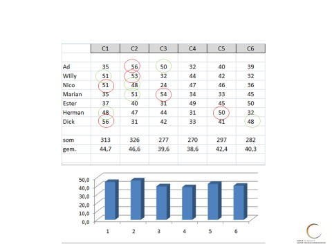
Alle genoemde zaken kunnen immers zowel binnen een team als in de wisselwerking met andere teams worden belicht. Het is van het allergrootste belang dat iedereen hier een actieve deelname in heeft. Om dezelfde redenen als bij het persoonlijk ontwikkelingsplan: de echte verbetering start van binnen uit!
In dit groeps- of organisatie ontwikkelingsplan kan dan ook worden opgenomen, welke elementen men team- en/of organisatie breed wil benoemen, c.q. de manier waarop men daar mee wil omgaan.
Ik geef slechts een paar voorbeelden van zaken die van belang kunnen zijn en waar ik een organisatie in adviseer en begeleid:
ontwikkelen van de teamvisie (uiteraard afgeleid van de visie van de
organisatie)
teamdoelen (in “blauw” = taakgericht proces + in “rood” = relatiegericht proces)
samenwerking naar hoger niveau brengen
conflicthantering
onderlinge communicatie verbeteren
meetings efficiënter en effectiever laten verlopen (van voorbereiding t/m
evaluatie)
beter omgaan met afspraken
Ook kan er dan beter worden vastgesteld:
wat een team motiveert (zowel in “blauw” al in “rood”)
welke Normen en Waarden het team heeft
wat mag het team; wat moet het team
Denk eens aan deze definitie van Teamwork:
“Wanneer ik door jouw ogen zou kunnen kijken en jij door de mijne ontdekken we samen iets wat we alleen niet gezien zouden hebben”
Nawoord.
Met de Circle Oriëntaties Methode wil ik je een methode aanreiken die je veel stof tot nadenken kan geven. Ze is niet panklaar, je zult het in jouw eigen plan moeten omzetten wil je er resultaten mee kunnen boeken.
Het bewust nadenken en vooral toepassen van jouw eigen Circle Persoonlijke Ontwikkeling Plan en er resultaten mee boeken, jouw resultaten, kost je de nodige inspanning en vraagt je om het maken van bewuste keuzen, naast de juiste aandacht en doorzettingsvermogen.
De ouderwetse manier van trainingen volgen, een training bijwonen en na een week of wat een herhalings- of terugkomstsessie en klaar ermee, is niet alleen achterhaald, het werkt naar mijn mening ook niet. Nieuwe patronen bij onszelf, oude, niet toereikende patronen toepassen vraagt om continue aandacht, dagelijkse toepassing hiervan en een vorm van coaching on de job.
Daarnaast zijn er naast de Circle Oriëntaties Methode tal van Vaardigheidsmodules ontworpen die perfect aansluiten bij deze methode. Door deze koppeling van zowel vaardigheden als gedrag ontstaan zodoende persoonsgerichte trainingen, altijd in maatwerk ontworpen voor jouw organisatie.
Daarnaast heb ik ervoor gekozen te werken met Thema’s en dus met handige themakaartjes die, per aandachtsgebied, hier nader op ingaan.
Willen we namelijk ons gedrag veranderen dan moeten we “iets” gaan veranderen in onze manier we omgaan met onze prikkels, de manier waarop we daarop bewust en onbewust reageren.
Dus anders omgaan met ons aangeleerd gedrag door te gaan kijken naar onze ervaringen, verwachtingen, talenten, overtuigingen over onszelf, onze motieven, oordelen en emoties vraagt meer dan een oppervlakkig kijken naar ons gedrag. Daarvoor is een laag “dieper” nodig, kijken naar de achterkant van ons gedrag, waarom vertonen we ons gedrag eigenlijk, waar komt dat vandaan en hoe gaan we daar dan vervolgens anders, beter voor onszelf én onze omgeving, mee om?
Welke zaken zitten zo in ons karakter, zijn zo genetisch bepaald dat, hoe zeer we ze ook willen veranderen, dit niet mogelijk is. En daarnaast, wat hebben we, vanuit onze jongste jeugd af, onszelf aangeleerd in de omgang met de mensen die destijds bepalend waren, bovendien tijdens voor ons zeer indrukwekkende ervaringen in die omstandigheden.
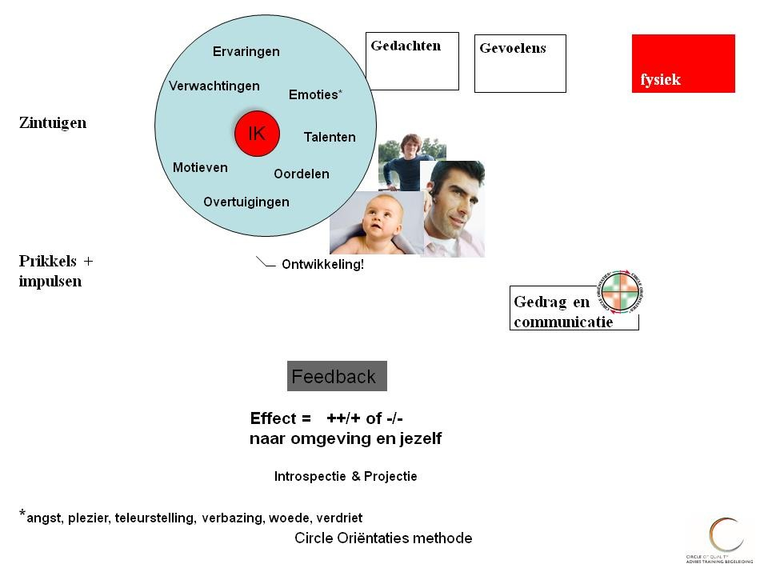
De keuzes die we destijds maakten maken we (on)bewust vandaag nog en wat leveren die keuzes ons nu op.
Omdat naar mijn mening de wil alleen niet voldoende is om tot betere resultaten te komen biedt Circle Advies Training Begeleiding en haar partners advisering, training en begeleiding in maatwerk aan.
Is jouw belangstelling gewekt, of heb je vragen en/of opmerkingen ten aanzien van de Circle Oriëntaties Methode® neem dan gerust contact op.
Ik wens je veel succes met het maken van jouw keuzes en het behalen van jouw doelen, zowel privé als zakelijk!
Ruud van Hussen
Mensen maken het verschil!
Haal het beste uit jullie Menselijk Kapitaal!
Circle Advies Training Begeleiding
06-51784413
ruudvanhussen@gmail.com
nl.linkedin.com/pub/ruud-van-hussen
Circle Advies Training Begeleiding is een onderdeel van Circle of Quality V.O.F.
Bijlagen
Thema’s uitgewerkt in de vorm van een gereedschapskist!
Je kunt, per thema, het desbetreffende themakaartje erbij pakken en zo dit specifieke aandachtgebied op jouw voorkeursgedrag te leggen en zo te zien wat jij daarmee kunt! Alsof je een bepaald gereedschap uit jouw gereedschapskist pakt en gebruikt!
Ga daarbij uit van:
de beschrijving van de methode in deze uitgave
jouw individuele scores (zie de laatste pagina van jouw Invulformulier!)
het door jou gemaakte Persoonlijke Plan, dus de cirkel van
jouw sterkten, valkuilen, leerpunten en afkeuren
De volgende overige themakaartjes zijn beschikbaar in Circle Oriëntaties Methode:
Basis (algemene en beknopte beschrijving van de 6 oriëntaties)
Communicatie en Gespreksvoering
Hoe leren we?
Onderhandelen
Samenwerken
Feedback geven
Leidinggeven en coachen
Efficiënter omgaan met tijd
Beter omgaan met Verandering
Ik geef, per thema, steeds eerst algemene zaken en theorieën aan. Daarna kun je deze zelf koppelen aan jouw specifieke voorkeursdrag zodat je het persoonlijk dus maatwerk kan maken!
Je kunt de themakaartjes dus ook gebruiken als feed forward middel. Hiermee bedoel ik dat je, voorafgaand aan een actie, als het ware een voorspelling kunt doen hoe deze actie zal verlopen en dus kun je deze inzichten, naast de inhoudelijke aspecten van de actie, meenemen in jouw voorbereiding!
Voorkomen is beter dan genezen.
Je zult merken dat dit veel rust kan brengen in de communicatie en omdat het een voorspelling is kun je deze tijdens de actie toetsen en dus ook onderweg bijstellen.
Dit vraagt enige stijlflexibiliteit van je maar met wat oefening gaat je dit zeker lukken.
Thema Communicatie en Gespreksvoering
Dit geldt voor een individueel gesprek en voor een gesprek met meer personen, bijvoorbeeld op basis van de teamscores!
In dat laatste geval helpt het als je het teamboek erbij neemt en de gemiddelde totaalscore van het team bekijkt. En daarnaast binnen het team kijkt naar de individuele scores van de teamleden.
Elk gesprek heb ik opgedeeld in 6 fasen, van voorbereiding tot de opening van het gesprek enzovoort, tot en met de nazorg.
Help jezelf om in jouw voorbereiding gespreksdoelen te formuleren. Ze zorgen voor een structuur, jouw houvast in een gesprek.
Ik heb het eens een gespreksdoelstellingen ladder genoemd; zie het als de sporten op een ladder. Wat is het laagst haalbare doel van het gesprek? En wat het hoogste doel ervan? Als je ermee vertrouwd bent kun je per fase zo’n doelstellingenladder maken!
En als je een gelijkwaardig gesprek nastreeft vraag jouw gesprekspartner naar zijn doelstellingenladder en leg ze naast elkaar. Spreek ook af wat jullie doen als een of beider doelstellingen niet gehaald kunnen worden. Het gaat in een langdurige relatie toch niet om een snelle deal?
Hierbij de diverse fasen van een gesprek, uiteraard per gedragsstijl uitgewerkt:
| Circle Oriëntaties methode® | I=Introvert | E=Extravert | T=Taakgericht | R=Relatiegerichtt | ||
|---|---|---|---|---|---|---|
| Hoe gaan de diverse Circle Oriëntaties® om met gespreksvoering? | ||||||
| Ondersteunen | Ondernemen | Onderbouwen | Overdenken | Overleggen | Overeenkomen | |
| Fase: | C1 I/R | C2 E/T | C3 I/T | C4 I/T | C5 E/R | C6 E/R |
| Voorbereiding | gaat uit van | wat gaat het | feiten | scenario's | benieuwd | zo weinig |
| eigen normen | opleveren? | verzamelen | naar | mogelijk | ||
| en waarden | structureren | persoon | ||||
| Opening | rustig | uitdagend | agenda | zeer rustig | vriendelijk | zeer levendig |
| vriendelijk | initiatiefrijk | doelen | op gemak | ongewoon | ||
| schema's | stellend | ludiek | ||||
| Inventarisatie | open | gesloten | vragen naar | stiltes | levendig | onverwachte |
| vragen | vragen | feiten en | laten vallen | vragen naar | wendingen | |
| luisterend | sturend | bewijs | denkpauzes | beleving | div. | |
| Argumentatie | rustig | bewijzend | toont aan | doordacht | toetsend | aangepast aan |
| "stel dat" | legt uit | zeer rustig | persoon/ | |||
| overtuigend | situatie | |||||
| Afsluiting | met respect | concrete | resumerend | afwachtend | in overleg | ruimte gevend |
| voor ieders | vervolgstap | aan de ander | ||||
| belang | ||||||
| Nazorg | probeert nog | snel & op zoek | extra | regelt het | toetst of | ludiek |
| meer waarde | naar nieuwe | documentatie | zonder | het naar | ||
| toe te voegen | kansen | opsmuk | wens is | |||
| R.O. van Hussen / Circle Advies Training Begeleiding | 1 | |||||
Ga eens na hoe de diverse stijlen omgaan met gespreksvoering, dus ook hoe goed ken je het gedrag van jouw gesprekspartner?
| Circle Oriëntaties methode® | I=Introvert | E=Extravert | T=Taakgericht | R=Relatiegericht | ||
|---|---|---|---|---|---|---|
| Hoe gaan de diverse Circle Oriëntaties® om met gespreksvoering? | ||||||
| Ondersteunen | Ondernemen | Onderbouwen | Overdenken | Overleggen | Overeenkomen | |
| C1 I/R | C2 E/T | C3 I/T | C4 I/T | C5 E/R | C6 E/R | |
| Koopmotieven | kwaliteit | vooroplopen | kennis | rust | sociaal contact | vrijheid |
| Bezwaren | begrijpend | voelt zich | weerleggend | trekt zich | vragend | verend |
| uitgedaagd | o.b.v. feiten | terug | ||||
| Weerstand | voelt zich | geeft | legt nog meer | trekt zich | is | zichtbaar |
| ongemakkelijk | tegendruk | uit | terug | weerstand | ongemakkelijk | |
| (toont dat niet) | bespreek- | |||||
| baar? | ||||||
| Kansen | reageert rustig | pakt kansen | controleert | komt er later | deelt | opgewonden |
| direct aan | op terug | kans met | ||||
| sluit af | de ander | |||||
| Afwijzing | haakt af: | in de aanval: | begrijpt het | lijkt niet | gaat in | neemt het |
| niet: | te deren: | gesprek: | luchtig op: | |||
| heb ik het niet | ik zal hem | was ik niet | denkt na | hoe is de | hoe ga ik | |
| goed gedaan? | duidelijk? | over reden | realtie nu? | hier mee om? | ||
| R.O. van Hussen / Circle Advies Training Begeleiding | 2 | |||||
Ik geef een voorbeeld uit mijn eigen praktijk.
Ik heb over een uur een afspraak met mijn collega van wie ik zijn duidelijke gedragsvoorkeuren ken en ik kan deze leggen op mijn voorkeursgedrag. Ik neem dus, naast het gespreksonderwerp namelijk ‘bespreken van de omzetcijfers’, ook zijn en mijn eigen voorkeursstijlen mee in mijn voorbereiding.
Dit zijn de scores van mijn gesprekspartner: (gevalideerd)
C1 C2 C3 C4 C5 C6
Ondersteunen/Ondernemen/Onderbouwen/Overdenken/Overleggen/Overeenkomen
42 58 55 21 42 34
Balans:
Relatie : 118 / Taak : 134
Extravert: 134 / Introvert: 118
Je ziet een balans die doorslaat naar de taakgerichte stijlen omdat Ondernemen en Onderbouwen de hoofdstijlen zijn. De andere taakgerichte stijl, Overdenken doet veel minder mee.
Zijn hoogste gedragsvoorkeuren zit dus in ondernemen, resultaatgerichtheid, snel (alle C2 sterkten) in combinatie met rationeel onderbouwen, doelgericht willen zijn, op feiten gebaseerd (alle C3 sterkten).
Ik stel me daarom in op een gesprek dat redelijk snel naar het doel, het resultaat zal gaan als het aan hem ligt. Daarnaast helpt het als ik me goed voorbereid heb op basis van feiten (een pp of Excel sheet helpt). Weinig informeel gepraat over koetjes en kalfjes (afkeuren van de C2 en C3). Zeker ook omdat zijn relatiegerichte stijlen minder aandacht vragen. Zijn C5 Overleggen score is gemiddeld (42) dus relatie mag zeker aandacht krijgen al voorspel ik dat dit wellicht liever binnen het onderwerp omzetcijfers bespreken moet vallen. Zijn lagere stijl C6 doet vermoeden dat hij niet snel geneigd zal zijn een eenmaal door hem ingenomen standpunt te wijzigen. En als hij dat doet dan zal je hem moeten overtuigen op basis van feiten en niet op basis van gevoelens.
Ik hou er ook rekening mee dat hij te ondernemend, te resultaatgericht, te snel kan zijn (valkuilen van C2) en te rationeel, teveel zijn eigen doel voor ogen nemen, te feitelijk of zelfs ongevoelig kan zijn (alle valkuilen van C3). Zo voorspel ik zijn gedrag in ons komend gesprek.
Zijn hogere extraverte stijlen, met name zijn hoge C2 Ondernemende stijl in combinatie met zijn gemiddelde C5 Overleggen (gemiddelde score 42) voorspellen dat het geen saai gesprek zal worden. Hij toont waarschijnlijk vrij gemakkelijk zijn emoties: ik verwacht actief gedrag.
Aan de relatiekant zal hij mij met respect willen behandelen en heeft dan ook oog voor mijn belangen. Al zullen deze meer taakgericht dan relatiegericht zijn.
Tot zover zijn voorspelde voorkeursgedrag.
Tijdens het gesprek zal ik dit toetsen aan de hand van mijn waarnemingen. Het is en blijft mensenwerk. Goed voorbereid zijn kan ook doorslaan naar te goed voorbereid of te rigide. Ook hier komt het woordje ‘te’ weer terug!
Dit betekent ook dat mijn inzet aan een aantal voorwaarden moet voldoen:
Ik moet me heel bewust zijn van het feit dat ik zijn gedrag niet kan veranderen, wel kan beïnvloeden. En dat is al heel wat.
Ik moet, als het ware, in de helikopter boven ons gesprek gaan hangen, om vanuit daar te kunnen zien wat er zich in ons proces afspeelt en wat ik anders kan doen of laten als het gesprek niet het gewenste effect op gaat leveren.
Het vraagt van mij om mezelf goed te kennen (en dan heb ik het over mijn echte motieven en overtuigingen, mijn kernwaarden etc. etc.)
Mijn voorkeursgedrag dat daar uit voortkomt heel goed te kennen en toe te passen om boven de materie te kunnen staan.
Dan pak ik mijn voorkeursgedrag erbij:
C1 C2 C3 C4 C5 C6
Ondersteunen/Ondernemen/Onderbouwen/Overdenken/Overleggen/Overeenkomen
42 65 55 30 39 21
Balans:
Relatie : 102 / Taak : 150
Extravert: 125 / Introvert: 127
Omdat ik mezelf en mijn voorkeursgedrag goed in beeld heb herken ik zelf mijn hogere C2 met de 65 score) heel goed, met als sterkten: snel naar het doel en resultaatgericht en ongeduldig als ik in mijn afkeuren passief gedrag, geen resultaat terechtkom.
Ook treed ik de ander graag met respect tegemoet (en verwacht ik dat soms ook andersom… een typische houding/valkuil die bij C1 Ondersteunen hoort). Een feit is iets anders dan een mening en dat zie ik dus niet als slechter of beter maar graag elk wel op hun eigen terrein. Zo gebruik ik mijn ratio graag voor het feitenwerk en daarnaast vertrouw ik in gevoelsmatige zaken graag op mijn intuïtie.
Ik heb mijn eigen wijs maar kan te eigenwijs zijn. Een valkuil die bij C3 Onderbouwen hoort. En omdat ik C6 Overeenkomen laag scoor ga ik ook daarom niet snel ‘om’.
In sociale zaken kan ik relaxed overkomen. Zodra mijn taakkant aangesproken wordt ka ik de knop gemakkelijk omzetten. (‘iemand moeten ontslaan en toch een drankje met hem drinken’). De taak los zien van de mens.
Ik kan zowel extravert gedrag vertonen (naar buiten treden met mening en in de actie en erop uittrekken) als introvert (ik hoef s ’avonds niet veel mensen te zien), lees veel en kan me heerlijk bezig houden met muziek. Extravert en introvert is bij mij dus heel situationeel gebonden.
Ik doe vervolgens een voorspelling van ons gesprek op basis van ons gedrag en scores:
Om dit te kunnen doen pak ik onze beide scores erbij en voorspel hoe ons gesprek over de omzetcijfers verloopt.
Ik tel onze totaal opgetelde scores bij elkaar op de deel deze door twee:
C1 C2 C3 C4 C5 C6
Ondersteunen/Ondernemen/Onderbouwen/Overdenken/Overleggen/Overeenkomen
42 58 55 21 42 34
42 65 55 30 39 21
___________________________________________________________
42 61,5 55 25,5 40,5 27,5
Onze balans:
Relatie : 110 / Taak : 142 d.w.z. taak- gaat voor relatiegericht gedrag*1
Extravert: 129,5 / Introvert: 122,5 d.w.z. extravert- gaat voor introvert gedrag*2
*1 ons taakgerichte gedrag komt het sterkst tot uiting in dadendrang, gevolgd door onderbouwing met feiten; veel minder door nadenken! Relatiegericht zijn we met name in het streven naar kwaliteit (C1) en ook is er een voorkeur voor overleg (C5); de voorspelling is dat we ons minder aan elkaar aanpassen.
*2 we zijn wat meer extravert alhoewel introvert gedrag ook aan bod moet komen, met name door feitelijk te onderbouwen.
Nadere toelichting:
Ik begin bij onze beider hoogste scores: C2 Ondernemen; zijn scores zijn wat lager maar nog steeds hoog! Ik voorspel dus dat het een actief, ondernemend en resultaatgericht gesprek gaat worden. Ook zullen we naar kansen willen kijken en wat minder de problemen uit willen vergroten. Bekijk de hele cirkel dus benoem de potentiële valkuilen, Leerpunten en Afkeuren ook!
Naast resultaatgericht zal het ook een doelgericht gesprek worden, dit voorspel ik op basis van onze beide hogere C3 Onderbouwende stijl. We scoren deze beide op 55.
Aandachtspunten/bedreigingen:
Het kan ook ‘touwtrekken’ worden tussen ons beiden: wie heeft het heft in handen, wie wil winnen? Wie heeft gelijk? Als dit teveel doorslaat kunnen we in onze standpunten verharden, ons ingraven. We kunnen dan minder nadenken, te snel conclusies trekken etc.
Kansen/Mogelijkheden:
Als we ons bewust zijn van het bovenstaande en dus ook wat ons gedragsmatig bindt kunnen we bijvoorbeeld rust inbouwen als we tegenover elkaar staan.
Er een nachtje over slapen met als afspraak er de volgende dag op terug te komen hoort daar dan wel bij. En omdat we allebei het overleg willen deze sterkte ook benoemen in het begin van dat gesprek zal positief bijdragen. Sowieso de voortgang van het gesprek samen monitoren. Bijvoorbeeld: werk met groene (Sterkten en Leerpunten) en rode kaarten (Valkuilen en Afkeuren): dit helpt direct!
Aan communicatie kunnen tenminste twee aspecten worden onderscheiden: inhoud en relatie.
De inhoud is het onderwerp waar de communicatie over gaat.
De relatie is de verhouding tussen de mensen die communiceren.
Een boodschap overbrengen is complex omdat er tijdens dat overbrengen bij zowel de zender als bij ontvanger veel aspecten spelen.
In het volgende stuk laat ik zien hoe complex communicatie is.
Ik gebruik hiervoor het Communicatie-model van Schulz von Thun dat spreekt van de complexiteit van de boodschap. En maak uiteraard een koppeling met de Circle Oriëntaties Methode.
Hierbij het format dat ons kan helpen elkaars manier van communiceren volgens deze methode in kaart te brengen. Met dit inzicht kun je jouw manier van communiceren verbeteren.
Schulz von Thun beschrijft 4 aspecten van de boodschap waar wij verbaal en non-verbaal tijdens communicatie meestal onbewust mee bezig zijn.
Dit geldt uiteraard voor zowel de zender als de ontvanger van de boodschap!
Deze 4 aspecten van onze boodschap zijn:
1. Zakelijke aspect: de letterlijke inhoud (dat wat iemand zegt)
2. Relationele aspect: de manier waarop iemand iets zegt geeft inzicht hoe de
relatie is
3. Expressieve aspect: de zender laat ook zijn eigen gevoelens zien
4. Appellerende aspect: de zender wil bij de ontvanger iets bereiken
Geef, per aspect, aan waar jouw aandachtspunten zitten. De Circle Oriëntaties methode kan je daarbij helpen!
Kijk voordat je een gesprek ingaat eens naar jouw eigen cirkel van jouw sterkten, valkuilen, leerpunten en afkeuren.
Ken je de cirkel van de ander ook? Neem even de tijd om een voorspelling te doen van hoe het gesprek zal verlopen.
Bepaal vervolgens de beste strategie om het gesprek zo efficiënt en effectief te laten verlopen.
1. Zakelijke aspect:
……………………………………………………………………………………………………………………………………………………………………………………………………………………………………………………………………………………………………………………………………………………………………………………
2. Relationele aspect:
……………………………………………………………………………………………………………………………………………………………………………………………………………………………………………………………………………………………………………………………………………………………………………………
3. Expressieve aspect:
……………………………………………………………………………………………………………………………………………………………………………………………………………………………………………………………………………………………………………………………………………………………………………………
4. Appellerende aspect:
……………………………………………………………………………………………………………………………………………………………………………………………………………………………………………………………………………………………………………………………………………………………………………………
V.L.O.A.C.
Ik gebruik graag het model VLOAC als model in de communicatie
Het model helpt om eerst goed te begrijpen wat de ander bedoelt voordat je met oplossingen, adviezen of conclusies komt.
V = Verkennen
L = Luisteren
O = Oordelen uitstellen / Onderzoeken
A = Afstemmen
C = Concluderen of Concrete afspraken maken
Voorbeeld:
Collega: "De samenwerking tussen de afdelingen loopt stroef."
V: "Waar merk je dat het meest aan?"
L: "Je zegt dat informatie vaak te laat wordt gedeeld."
O: "Dat kan leiden tot misverstanden en vertraging."
A: "Misschien helpt een vast overdrachtsmoment per week."
C: "We testen dit de komende maand en evalueren daarna."
Een veelvoorkomende valkuil in communicatie is dat mensen te snel van Verkennen en Luisteren naar Adviseren springen. Daardoor voelt de ander zich soms onvoldoende gehoord. Of mis je de kern van de zaak.
Juist de eerste twee stappen vormen vaak de basis voor een goed gesprek.
Ik wil dit graag nuanceren door de volgende voorbeelden: er kan in ditBovenkant formulier
Onderkant formulier
voorbeeld zo maar sprake zijn van een Ondernemende stijl C2 die soms te snel op zoek gaat naar oplossingen en/of toepassingen.
In het gesprek met bijvoorbeeld C4 Overdenken kan dit veel te snel zijn, de Overdenkende stijl is gewoon nog niet zo ver. Voor een overleggende stijl C5 kan het gevoel krijgen dat het zonder zijn mening gebeurt.
Ik wil benadrukken dat dit dus stijlafhankelijk is!
Zo zal het jou inmiddels duidelijk zijn dat, afhankelijk van jouw voorkeursgedrag, bepaalde onderdelen voor jou gemakkelijk zijn toe te passen. En andere onderdelen lastiger.
Wat is op jou van toepassing? Welke aandachtspunten herken je bij jezelf?
Maak hier een notitie van zodat je jezelf kan trainen op concrete onderdelen.
Actief luisteren
Actief luisteren is meer dan alleen horen wat iemand zegt. Het betekent dat je bewust aandacht geeft aan de ander en laat merken dat je probeert te begrijpen wat deze bedoelt en voelt.
Kenmerken van actief luisteren:
Oogcontact maken (als dat past bij de situatie).
Niet onderbreken.
Open vragen stellen.
Samenvatten wat de ander heeft gezegd.
Doorvragen om meer duidelijkheid te krijgen.
Gevoelens benoemen die je waarneemt.
Voorbeeld
Collega: "Ik heb het gevoel dat ik steeds achter de feiten aanloop."
Niet actief luisteren:
"Dan moet je gewoon beter plannen."
Wel actief luisteren:
"Je hebt het gevoel dat je voortdurend moet inhalen, klopt dat? Waar komt dat volgens jou door?"
Of:
"Als ik je goed begrijp, ervaar je veel druk omdat er steeds nieuwe taken bijkomen. Klopt dat?"
Waarom is actief luisteren belangrijk?
Actief luisteren:
vergroot wederzijds begrip;
versterkt vertrouwen;
vermindert misverstanden;
helpt om betere oplossingen te vinden;
zorgt ervoor dat mensen zich gehoord voelen.
Binnen het VLOAC-model hoort actief luisteren vooral bij de stappen Verkennen en Luisteren. Pas nadat je de situatie goed hebt onderzocht en begrepen, ga je eventueel over naar Oordelen, Adviseren en Concluderen.
Ook hier weer de nuance: hoe luisteren de diverse gedragsstijlen?
Een ondernemende stijl vertelde me eens dat als iemand iets tegen hem zegt hij al heel snel in zijn hoofd bezig is met het formuleren van een reactie, in zijn hoofd onderbreekt hij de ander eigenlijk al. Waardoor hij eigenlijk niet meer goed kan luisteren naar wat de ander zegt, laat staan dat hij actief luistert.
Hij krijgt dan ook best vaak te horen “je luistert niet”. Hij traint zichzelf door A dit fenomeen bij zichzelf ter plekke te herkennen (dat hij bewust onbekwaam is op dit punt) en B door vragen te stellen (dit is bewust bekwaam) zichzelf behoedt voor zijn valkuil. Het levert bovendien een beter resultaat op.
Bij het thema Hoe leren wij kom ik hier nog op terug. Nog even geduld…..
Aannames
Nog zo’n beducht fenomeen in ons communiceren met elkaar: aannames plegen.
“Als je zoveel aanneemt kun je beter aannemer worden” zei een aannemer in de bouw eens tegen me!
Of de uitspraak: aannames zijn de moeder van vele teleurstellingen.
Aannames doen betekent dat je iets als waar beschouwt zonder dat je voldoende informatie hebt om het zeker te weten.
Voorbeelden van aannames
Situatie 1
Een collega reageert niet op je e-mail.
Aanname: "Hij vindt mijn voorstel zeker niet goed."
Feit: Je weet alleen dat hij nog niet heeft gereageerd.
Situatie 2
Iemand kijkt tijdens een gesprek op zijn telefoon.
Aanname: "Hij luistert niet naar mij."
Feit: zijn vrouw is in het ziekenhuis, ze staat op het punt van bevallen. Hij verwacht elk moment te moeten vertrekken als hij een telefoontje krijgt. Hoezo op hete kolen zitten…
Waarom zijn aannames riskant?
Aannames kunnen leiden tot:
misverstanden;
verkeerde conclusies;
onnodige irritaties;
conflicten.
Aannames toetsen
In plaats van een aanname te maken, kun je verkennen en vragen stellen:
"Ik merk dat je nog niet hebt gereageerd op mijn e-mail. Heb je hem al kunnen lezen?"
"Ik zie dat je op je telefoon kijkt. Is er iets dringends aan de hand?"
Relatie met VLOAC
Aannames ontstaan vaak wanneer mensen te snel naar Oordelen gaan en stappen als Verkennen en Luisteren overslaan. Door eerst vragen te stellen en goed te luisteren, verklein je de kans op verkeerde aannames.
Een bekende uitspraak hierover is:
"Aannames zijn de grootste bron van misverstanden."
Door nieuwsgierig te blijven en te controleren of je interpretatie klopt, communiceer je vaak effectiever.
Leestips:
Socrates op sneakers van Elke Wiss
De kunst van het vragen van Percy Ross
Thema Hoe leren we?
(in het algemeen)
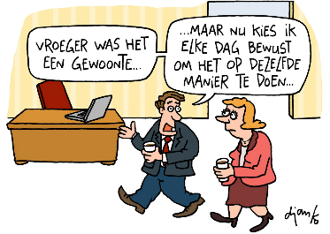
Mensen leren op verschillende manieren, maar in het algemeen gebeurt leren doordat de hersenen nieuwe informatie verwerken, opslaan en verbinden met wat iemand al weet.
Enkele belangrijke onderdelen van leren zijn:
Waarnemen – Je ziet, hoort, leest of ervaart iets nieuws.
Begrijpen – Je probeert de betekenis ervan te begrijpen.
Oefenen – Door herhaling worden verbindingen tussen hersencellen sterker.
Toepassen – Je gebruikt de kennis of vaardigheid in de praktijk.
Feedback krijgen – Fouten en correcties helpen je om beter te worden.
Leren is ook veranderen. Waarbij je uit jouw “comfortzone”, jouw cirkel van aangeleerde gewoontes leert gaan om je gedragsmatig verder te kunnen ontwikkelen.
Waarbij mijn ervaring is dat alleen de intentie uitspreken bij lange na niet voldoende is om nieuw (beter) gedrag te vertonen.
Vraag het rokers die op 1 januari plechtig beloofd hebben te stoppen.
Of mensen die overgewicht kwijt willen raken, of ‘workaholics’ die wat meer tijd aan zichzelf en/of hun gezin willen geven, etc. etc.
Zelfs als situaties daarom vragen (verlies van ons inkomen, onze baan, onze relatie, klachten met onze gezondheid etc.) is het voor ons lastig om ons gedrag te veranderen. En zelfs als het op de korte termijn lukt om ons anders en beter te gedragen vervallen we zo maar weer in onze oude patronen.
Want die kennen we immers al langer.
Vanuit wat je van je ouders meegekregen hebt als genen en karakter én hoe je daar vanaf jouw eerste dag t/m nu mee omgaat bepaalt uiteindelijk ook jouw gedrag van vandaag.
Jij en ik kennen mensen die écht wel snappen dat iets minder perfectie hun leven gemakkelijker zal maken, of niet alles alleen doen hen meer échte rust op zal leveren. Of anderen waarbij geldt dat als ze niet altijd als ‘haantje de voorste’ met hun kennis pronken hun ‘gunfactor’ zal doen stijgen. Weer anderen die te snel ‘ja’ zeggen als er een beroep op hen wordt gedaan en later denken “waarom heb ik dat toch weer gedaan?”
En wat dacht je van mensen die hun eigen mening niet geven terwijl ze die wel degelijk hebben! Ik noem zo maar een aantal valkuilen die we bij onszelf of de ander herkennen. Zeker als je ze met behulp van de Circle Oriëntaties methode® in kaart hebt gebracht. Maar dat is slechts een begin……
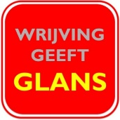
In het begin levert verandering in gedrag bovendien altijd een vorm van twijfel of zelfs een gevoel weerstand en wrijving op. Die we ook lijfelijk zo kunnen ervaren!Alsof we op dun ijs gaan staan en bij de eerste de beste barst snel weer op de oever springen…….
We stoppen zo dus zelf ons leerproces. In dit voorbeeld door onze angst niet te overwinnen en leren dus niet of onvoldoende. Je koos, vaak onbewust voor teruggaan naar wat je al wist en/of deed.
Ook onze omgeving doet hier stevig aan mee, zegt “doe eens normaal” als jij net een van jouw leerpunten in praktijk brengt. En jij stopt.
We kiezen dus (onbewust) voor het vermijden van vervelende gevoelens die bij ons leerproces horen en geven eigenlijk toe aan ons korte termijn genoegen. Echter, op lange(re) termijn komen dezelfde zaken dan weer terug. Zie dus het gevoel van wrijving als een teken dat je op de goede weg bent (iets nieuws voelt in het begin nu eenmaal niet als vertrouwt) en hier gaat het dus om doorzetten!
Net zolang tot het nieuwe patroon het oude patroon vervangt. Je hebt de vicieuze cirkel doorbroken!
Weet je nog? (als je een rijbewijs hebt….)
Jouw eerste autorit met jou als bestuurder?
Naast iemand in de auto zitten is héél iets anders dan zélf rijden…….. Pas op het moment dat je achter het stuur gaat zitten en weg wilt rijden wordt je je héél bewust dat je het autorijden (op onderdelen) niet
voldoende beheerst.
Pas op het moment dat je aanwijzingen krijgt hoe je het beste kunt autorijden ga je dit zo doen.
Dat voelt in eerste instantie wat ‘houterig’. Tot je het zo vaak gedaan hebt gedaan dat je nu bijna volledig op jouw onderbewustzijn kan autorijden. Je kunt zelfs nog meerdere handelingen tegelijkertijd uitvoeren………..
Tot jij je weer bewust wordt van jouw (op onderdelen) onbekwaamheid en dan begint het leerproces opnieuw: nooit te oud om te leren!
Schematisch ziet het er zo uit: van onbewust bekwaam t/m onbewust bekwaam:
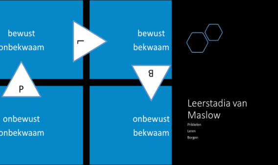
Dit leerproces werkt ook zo bij het in praktijk brengen van jouw Persoonlijke Ontwikkeling Plan.
Tip: deel jouw Persoonlijke Ontwikkelingsplan eens met:
iemand in jouw privé omgeving
jouw leidinggevende
een collega van je
En vraag hen eens jou feedback te geven op jouw Sterkten/Valkuilen/Leerpunten én Afkeuren in de specifieke situatie zoals in jouw plan beschreven!
Hoe leren we met behulp van de Circle Oriëntaties methode?

In tegenstelling tot wat ik vaak tegenkom namelijk ‘ga aan je leerpunten werken’ begin ik juist met jouw gedragsmatige sterkten.
Ook vanuit het gegeven dat een valkuil ‘slechts’ een doorgeschoten sterkte is! Hier kom ik weer terug bij Fromm!
En ik voeg eraan toe dat onze afkeur veroorzaakt worden door een te ver doorgeschoten leerpunt!
Vandaar ook mijn advies dat als je merkt dat je in een van jouw valkuilen terechtkomt je kan stoppen en de beweging kan inzetten naar een door jouw benoemd leerpunt.
Uiteraard heb je zelf niet altijd in de gaten dat je als het ware doorschiet en hier komt de kracht van juiste feedback gedrag weer terug.
Heb je in de gaten dat je in een van jouw afkeuren terechtkomt ga dan terug naar een benoemd leerpunt in plaats van ‘gas’ te geven op jouw sterkte(n) met het gevaar dat je doorschiet en in jouw valkuil(en) terechtkomt.
Hoe gaan de diverse stijlen om met leren?
Neem even de tijd!
Welke sterkten, valkuilen, leerpunten en afkeuren herken je vanuit jouw voorkeursgedrag?
| Circle Oriëntaties methode® | I=Introvert | E=Extravert | T=Taakgericht | R=Relatiegericht | ||
|---|---|---|---|---|---|---|
| Hoe gaan de diverse Circle Oriëntaties® om met het leerproces? | ||||||
| Ondersteunen | Ondernemen | Onderbouwen | Overdenken | Overleggen | Overeenkomen | |
| C1 I/R | C2 E/T | C3 I/T | C4 I/T | C5 E/R | C6 E/R | |
| Mogelijke | steun bieden | initiatief nemen | logica | rustig | anderen erbij | flexibel |
| sterkten | kwaliteitsbesef | wil>oplossing | rationeel | weloverwogen | betrekken | past zich aan |
| respect | concreet | voorbereiding | beslissen | benut anderen | toont interesse | |
| evalueren | deelt | in persoon | ||||
| informatie | ||||||
| Mogelijke | zichzelf | anderen het | zonder gevoel | te passief | proces stopt | inconsequent |
| valkuilen | wegcijferen | initiatief | te afstandelijk | duurt te lang | als niet | warrig |
| te perfect zijn | ontnemen | star | "analyse- | iedereen | te wollig | |
| te goed van | onvoldoende | verlamming | meedoet | |||
| vertrouwen | analyse | teveel op | ||||
| zelf alles doen | anderen | |||||
| leunen | ||||||
| Mogelijke | voor jezelf | kalmte/rust | gevoel meer | actiever | eigen doelen | "nee"zeggen |
| leerpunten | opkomen | inbouwen | tonen | sneller | formuleren | assertiever |
| gemakkelijker | meer | minder afstand | reageren | bepaal wie | zijn | |
| worden | nadenken | minder star | eerder | mee doet | probleem van | |
| controleren | meer | beslissen | o.b.v. het | van de ander | ||
| abstractie | doel | niet tot eigen | ||||
| probleem | ||||||
| maken | ||||||
| Mogelijke | zonder gevoel | passief zijn | te wollig | ondoordacht | egoïsme | star |
| afkeuren | knoeiwerk | teveel tijd | te emotioneel | handelen | solistisch | onvriendelijk |
| wantrouwend | nemen | chaotisch | overhaast | optreden | geen interesse | |
| zijn | te theoretisch | beslissen | anderen niet | in mensen | ||
| niet evalueren | benutten | |||||
| R.O. van Hussen / Circle Advies Training Begeleiding | 2 | |||||
Welke van de volgende aspecten zijn meer of minder op jouw voorkeursgedrag van toepassing?
| Circle Oriëntaties methode® | I=Introvert | E=Extravert | T=Taakgericht | R=Relatiegericht | ||
|---|---|---|---|---|---|---|
| Hoe gaan de diverse Circle Oriëntaties® om met het leerproces? | ||||||
| Ondersteunen | Ondernemen | Onderbouwen | Overdenken | Overleggen | Overeenkomen | |
| C1 I/R | C2 E/T | C3 I/T | C4 I/T | C5 E/R | C6 E/R | |
| Vertrouwen in | kritisch | is groot | neutraal | groot | afwachtend | vertrouwt op |
| eigen leer- | t.o.v. zichzelf | (toont dit) | (toont dit niet) | aanpassings- | ||
| vermogen | vermogen | |||||
| Gewenste uitleg | achtergronden | kort | logisch | rustig | afgestemd | inspirerend |
| toelichten | nadruk op | rationeel | denkpauzes | ook met groep | luchtig | |
| uitgebreid | toepassing | geven | ||||
| Gewenst profiel | serieus | competent | feitelijk | vragen stellen | interactief | flexibele |
| leerkracht | geduldig | praktijkmens | toetsend | rustig | in de groep | houding |
| Wat draagt bij | respect tonen | uitdagen | grondigheid | stilte | plenair | samen met |
| tot leren | luisteren | oefenen | theorie | tijd geven | stof delen | anderen |
| Houding bij | voelt zich te kort | verdubbelt | neemt afstand | wordt stiller | raadpleegt | wordt drukker |
| leerblokkade | schieten | inspanning | verliest | denkt aan iets | anderen | trekt theorie in |
| moppert op | uit kritiek op | belangstelling | anders | gaat meer praten | belachelijke | |
| leerkracht | leerkracht | |||||
| Hoe hierbij op te | gerust stellen | praktische tips | feiten geven | vragen stellen | erbij betrekken | gezicht laten |
| treden | bevestigen | herkansing | stoom van | rustig | rol geven | redden |
| zelfvertrouwen | geven | de ketel halen | optreden | |||
| R.O. van Hussen / Circle Advies Training Begeleiding | 1 | |||||
Het Circle Persoonlijke Ontwikkeling Plan. Hoe pas je jouw Persoonlijke Ontwikkeling Plan toe met behulp van de Circle Oriëntaties methode®?
De methode start bij de eigen “Ik”. Eerst jouw eigen cirkel beter kunnen benoemen, jezelf beter in kaart brengen voordat de slag naar de ander beter kan worden gemaakt.
Uiteindelijk omvat een Circle Persoonlijk Ontwikkelings Plan de volgende onderdelen:
Jouw eigen sterkten, welke kunnen nog beter worden benut?
Herkenning van het doorslaan van sterkten naar valkuilen en het bewust
zijn van de gevolgen van dit doorslaan.
Jouw leerpunten, wat wil jij jezelf aanleren en waar moet je dus dagelijks
mee bezig zijn?
Benoeming Van jouw afkeuren, waar heb jij een hekel aan?
Met behulp van de Circle Oriëntaties methode® heb je door het invullen van de scores jouw voorkeurgedrag in beeld gebracht. Inclusief dus jouw Sterkten, Valkuilen, Leerpunten en Afkeuren! Pak ze er maar bij.
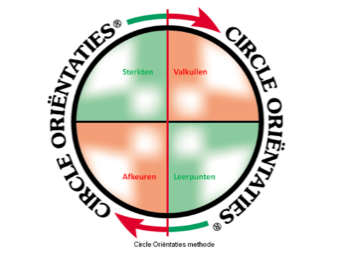
In het algemeen gezegd functioneren we het beste als we in onze gedragsmatige Sterkten en/of onze Leerpunten optreden.Als we echter in onze Valkuilen en/of onze Afkeuren functioneren dragen we minder (tot misschien wel niets) bij aan onszelf en/of onze omgeving.
Begin met jouw Sterkten :
je hebt ze al in huis!
ga eens na hoe vaak ze je al succes hebben gebracht bij
het behalen van jouw doelen(zowel privé als in jouw werk)
waar en hoe ga je ze nog meer inzetten:
maak dit S.M.A.R.T.!
Wees je er vervolgens van bewust dat jouw Valkuilen in feite te ver doorgevoerde sterkten zijn! Ze passen dus ook bij die Sterkten. Het gaat er dus om ze op tijd te herkennen én te voorkomen dat je erin valt!
Dus: hou je Sterkten vast of benut ze nog beter en koppel er jouw Leerpunten aan:
ze staan haaks op jouw Valkuilen (tegenpolen)
ga eens na wat ze je al hebben opgeleverd bij het behalen van jouw doelen (zowel privé als in jouw werk)
waar en hoe ga je ze nog meer inzetten:
maak dit S.M.A.R.T.!
(gebruik hiervoor het bijgaande formulier! Maak voor jezelf extra exemplaren aan als dat nodig is.)
Wees je er vervolgens van bewust dat jouw Afkeuren in feite te ver doorgevoerde Leerpunten zijn!
En zoals gezegd dat als je erin terecht komt je beter terug kunt gaan naar het leerpunt wat hierbij hoort. (in plaats van jouw bijpassende Sterkte(n) nog meer te accentueren waardoor je, door dit te doen, de kans loopt in jouw valkuil(en) terecht kunt komen!)
Alleen een S.M.A.R.T. plan is een goed plan!
Voor alle punten geldt: maak ze S.M.A.R.T.
| Specifiek | noem concrete en specifieke acties, zaken etc. |
|---|---|
| Meetbaar | wat kan je meten: noem aantallen en andere harde criteria |
| Acceptabel | voor jezelf en/of voor anderen: zorg ervoor dat je er écht |
| | achterstaat |
| Realistisch | een plan waarbij de lat té hoog ligt is niet haalbaar en dus niet te |
| | realiseren, dit werkt frustratie in de hand en leidt tot niets |
| Tijdgebonden | van uitstel komt afstel, er is altijd een “morgen”; noem een datum |
| waarop het af moet zijn: een plan zonder einddatum is geen plan |
Sta je nog even stil bij jouw willen, kiezen, kennen, kunnen, durven en mogen?
Een voorbeeld van een Circle Persoonlijke Ontwikkelingsplan
Als je hebt deelgenomen aan een sessie weet je dat er aandacht wordt besteed aan het opzetten van het individuele plan zoals je dat in de bijlagen vindt..
Mocht je niet hebben deelgenomen dan wil je graag een voorbeeld schetsen. Als voorbeeld neem ik iemand met o.a. een sterke Ondernemende oriëntatie:
Sterkten:
In vergaderingen het initiatief (nog) meer naar mij toe trekken (= specifiek voorbeeld) gedurende de 6 komende vergaderingen van 2 uur; ik zal dit gedurende deze 6 vergaderingen bijhouden (= tijdgebonden en meetbaar gemaakt). Daarnaast schat ik dit als realistisch haalbaar en acceptabel in.
Valkuilen:
Door teveel het initiatief naar mij toe te trekken bestaat het gevaar dat ik:
anderen het initiatief ontneem (ik ga, na afloop van de eerstkomende 6
vergaderingen, anderen vragen mij hier feedback op te geven)
mijzelf teveel initiatieven op de nek neem (na afloop meet ik of dit en in welke
mate dit het geval is)
Leerpunten:
Ik moet anderen ook aan het woord laten en zelf dus meer mijn mond houden
en luisteren (ik turf voor mijzelf mijn aantallen inbreng tijdens de eerstkomende
6 vergaderingen)
Ook anderen zullen taken moeten uitvoeren (ook dit doe ik bewust, dus als er
gevraagd wordt om actie steek ik niet als eerste mijn vinger op)
Afkeuren:
Ik wil niet als passief gezien worden tijdens de komende vergaderingen
(bewust aandachtspunt)
Mijn ideeën zullen niet ondergesneeuwd raken bij die van anderen (bewust
aandachtspunt)
Werk elke dag met jouw plan!
Zorg dat je het bij de hand hebt!
In jouw agenda, achter de zonneklep in jouw auto, jouw (hand)tas, jouw portemonnee, op de toiletspiegel thuis, als screensaver op jouw pc, waar dan ook, als je het maar bij de hand hebt!
Weet je het nog, dit in verband met het leerproces, van onbewust onbekwaam naar onbewust bekwaam! En dus in het belang van de toepassing in jouw eigen, dagelijkse praktijk!
Dit cyclische proces stopt nooit en is niet statisch, dat wil zeggen er zullen punten uit verdwijnen en nieuwe zullen worden toegevoegd. Wij mensen leren nou eenmaal.
De kunst bestaat eruit jouw plan zo persoonlijk mogelijk te maken, het moet op jouw lijf geschreven zijn. Zodanig dat het als het ware past als een tweede huid.
Als jij jouw doelen hebt omschreven en jouw keuzes hebt gemaakt en vastgelegd hebt in jouw eigen plan dan heb je in feite jouw diepste behoeften bepaald. De beste garantie voor uitvoering ervan, want het gaat er om wat je met jouw plan doet.
“Ik heb het gevoel dat ik thuiskom als ik dagelijks bij mijn plan stilsta”, zei iemand eens.
Bedenk dat als jij jouw ware plan naar buiten brengt en er daadwerkelijk mee werkt je onvoorspelbaar positieve gevolgen zult ervaren!
Niet op een overdreven manier maar op jouw eigen, authentieke wijze. Van binnen uit!
Tot zover het voorbeeld.
Op de volgende pagina’s, zie je een opzet voor jouw eigen plan!
Persoonlijke Ontwikkeling Plan, v.v. S.M.A.R.T aandachtspunten!
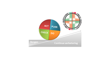
| Sterkte : ‘……………………………………….’ Specifiek & Tijdgebonden: beschrijf in welke komende situatie en/of bij welke persoon je deze sterkte bewust gaat inzetten? ……………………………………………………………………………………………………………………………………………………………………………………………………………………………………………………………………………………………………………………………………………………………………………………………………………………………………………………………………………………………………………………………………………………………… |
|---|
| Sterkte: ‘……………………………………….’ Meetbaar: beschrijf zo concreet mogelijk wat de inzet van deze sterkte jou en/of jouw situatie/jouw organisatie gaat opleveren: …………………………………………………………………………………………………………………………………………………………………………………… ………………………………………………………………………………………………………………………………………………………………………………………………………………………………………………………………………………………………………………………………………………………………………… |
|---|
| Sterkte: ‘……………………………………….’ Acceptabel & Realistisch: ga bij jezelf na in hoeverre de inzet van deze sterkte voor jou zelf acceptabel is en hoe realistisch het is om dit na te streven: …………………………………………………………………………………………………………………………………………………………………………………… ………………………………………………………………………………………………………………………………………………………………………………………………………………………………………………………………………………………………………………………………………………………………………… |
|---|
Persoonlijke Ontwikkeling Plan, v.v. S.M.A.R.T aandachtspunten!
| Valkuil: ‘……………………………………….’ Specifiek & Tijdgebonden: beschrijf in welke komende situatie en/of bij welke persoon je deze Valkuil bewust gaat voorkomen? ……………………………………………………………………………………………………………………………………………………………………………………………………………………………………………………………………………………………………………………………………………………………………………………………………………………………………………………………………………………………………………………………………………………………… |
|---|
| Valkuil: ‘……………………………………….’ Meetbaar: beschrijf zo concreet mogelijk wat het voorkomen van deze Valkuil jou en/of jouw situatie/jouw organisatie gaat opleveren: …………………………………………………………………………………………………………………………………………………………………………………… ………………………………………………………………………………………………………………………………………………………………………………………………………………………………………………………………………………………………………………………………………………………………………… |
|---|
| Valkuil: ‘……………………………………….’ Acceptabel & Realistisch: ga bij jezelf na in hoeverre het voorkomen van deze Valkuil voor jou zelf acceptabel is en hoe realistisch het is om dit na te streven: ……………………………………………………………………………………………………………………………………………………………………………………………………………………………………………………………………………………………………………………………………………………………………………………………………………………………………………………………………………………………………………………………………………………………… |
|---|
Persoonlijke Ontwikkeling Plan, v.v. S.M.A.R.T aandachtspunten!
| Leerpunt: ‘……………………………………….’ Specifiek & Tijdgebonden: beschrijf in welke komende situatie en/of bij welke persoon je dit Leerpunt bewust gaat toepassen? ……………………………………………………………………………………………………………………………………………………………………………………………………………………………………………………………………………………………………………………………………………………………………………………………………………………………………………………………………………………………………………………………………………………………… |
|---|
| Leerpunt: ‘……………………………………….’ Meetbaar: beschrijf zo concreet mogelijk wat het toepassen van dit Leerpunt jou en/of jouw situatie/jouw organisatie gaat opleveren: ……………………………………………………………………………………………………………………………………………………………………………………………………………………………………………………………………………………………………………………………………………………………………………………………………………………………………………………………………………………………………………………………………………………………… |
|---|
| Leerpunt: ‘……………………………………….’ Acceptabel & Realistisch: ga bij jezelf na in hoeverre het toepassen van dit Leerpunt voor jou zelf acceptabel is en hoe realistisch het is om dit na te streven: …………………………………………………………………………………………………………………………………………………………………………………… ………………………………………………………………………………………………………………………………………………………………………………………………………………………………………………………………………………………………………………………………………………………………………… |
|---|
Persoonlijke Ontwikkeling Plan, v.v. S.M.A.R.T aandachtspunten!
| Afkeur: ‘……………………………………….’ Specifiek & Tijdgebonden: beschrijf in welke komende situatie en/of bij welke persoon je deze Afkeur bewust gaat voorkomen? …………………………………………………………………………………………………………………………………………………………………………………………………………………………………………………………………………………………………………………………………………………………………………………………………………………………………………………………………… ………………………………………………………………………………………… |
|---|
| Afkeur: ‘……………………………………….’ Meetbaar: beschrijf zo concreet mogelijk wat het voorkomen van deze Afkeur jou en/of jouw situatie/jouw organisatie gaat opleveren: …………………………………………………………………………………………………………………………………………………………………………………… ……………………..…………………………………………………………………..……………………………………………………………………………………………………………………………………………………………………………………………………………………………………………………………………………… |
|---|
| Afkeur: ‘……………………………………….’ Acceptabel & Realistisch: ga bij jezelf na in hoeverre het voorkomen van deze Afkeur voor jou zelf acceptabel is en hoe realistisch het is om dit na te streven: …………………………………………………………………………………………………………………………………………………………………………………… ………………………………………………………………………………………………………………………………………………………………………………………………………………………………………………………………………………………………………………………………………………………………………… |
|---|
Bovenkant formulier
Onderkant formulier
Thema Onderhandelen
Ook een onderhandelingssituatie vraagt om een goede voorbereiding van de diverse fasen van de onderhandeling. Deze lijken op een ‘normaal’ gesprek. Ook hier geldt de doorvertaling van hoe jouw voorkeursgedrag omgaat met onderhandelen.
Circle Oriëntaties methode® | R=Relatiegericht | R=Relatiegericht | R=Relatiegericht | R=Relatiegericht | R=Relatiegericht | R=Relatiegericht |
|---|---|---|---|---|---|---|
| Hoe gaan de diverse Circle Oriëntaties® om met onderhandelen? | ||||||
| Ondersteunen | Ondernemen | Onderbouwen | Overdenken | Overleggen | Overeenkomen | |
| Fase: | C1 I/R | C2 E/T | C3 I/T | C4 I/T | C5 E/R | C6 E/R |
| Voorbereiding | gaat uit van | wat gaat het | feiten | scenario's | benieuwd | zo weinig |
| eigen normen | opleveren? | verzamelen | naar | mogelijk | ||
| en waarden | structureren | persoon | ||||
| Opening | rustig | uitdagend | agenda | zeer rustig | vriendelijk | zeer levendig |
| vriendelijk | initiatiefrijk | doelen | op gemak | ongewoon | ||
| schema's | stellend | ludiek | ||||
| Inventarisatie | open | gesloten | vragen naar | stiltes | levendig | onverwachte |
| vragen | vragen | feiten en | laten vallen | vragen naar | wendingen | |
| luisterend | sturend | bewijs | denkpauzes | beleving | div. | |
| nemen | invalshoeken | |||||
| Argumentatie | rustig | overtuigend | toont aan | doordacht | toetsend | aangepast aan |
| stel dat | legt uit | zeer rustig | persoon/ | |||
| situatie | ||||||
| Afsluiting | met respect | concrete | resumerend | afwachtend | in overleg | ruimte gevend |
| voor ieders | vervolgstap | aan de ander | ||||
| belang | ||||||
| R.O. van Hussen / Circle Advies Training Begeleiding | 2 | |||||
Er zijn diverse stijlen die onderhandelaars hanteren. Kijk maar eens hoe Mark Rutte als NAVO baas optreedt richting bijvoorbeeld het Witte Huis.
En hoe de Spaanse premier Pedro Sánchez dat richting datzelfde Witte Huis doet.
Er zijn verschillende stijlen van onderhandelen. Een veelgebruikt model onderscheidt vijf stijlen:
Doordrukken (concurreren)
Eigen belang staat voorop.
Direct, stevig, soms confronterend.
Geschikt bij spoed of als een principe op het spel staat.
Samenwerken
Zoeken naar een oplossing die voor beide partijen optimaal is.
Open communicatie en gezamenlijke belangen centraal.
Vaak de meest duurzame oplossing.
Compromis sluiten
Beide partijen leveren iets in.
Snel en praktisch.
Niemand krijgt volledig zijn zin.
Toegeven
Relatie belangrijker dan het eigen belang.
Je geeft de ander grotendeels wat hij wil.
Kan verstandig zijn als het onderwerp voor jou minder belangrijk is.
Vermijden
Het conflict of de onderhandeling uit de weg gaan.
Kan nuttig zijn als emoties hoog oplopen of meer informatie nodig is.
Lost het probleem meestal niet op.
Een andere bekende indeling is die van het boek Getting to Yes:
Positioneel onderhandelen: vasthouden aan standpunten ("ik wil €100", "ik bied €80").
Principieel onderhandelen: zoeken naar achterliggende belangen en objectieve criteria.
Vanuit uw interesse in communicatie en gedrag kan het interessant zijn dat de meeste moderne communicatiedeskundigen samenwerking en principieel onderhandelen als de meest effectieve stijl zien wanneer een langdurige relatie belangrijk is. Daarbij spelen vaardigheden als actief luisteren, doorvragen en het onderzoeken van aannames een grote rol.
De kern van Getting to Yes bestaat uit vier principes:
1. Scheid de mensen van het probleem
Mensen hebben emoties, belangen en misverstanden. Richt je op het probleem, niet op de persoon.
Voorbeeld
In plaats van: "Jij bent onredelijk."
Zeg je: "Laten we kijken hoe we dit probleem kunnen oplossen."
2. Richt je op belangen, niet op standpunten
Een standpunt is wat iemand zegt te willen. Een belang is waarom iemand dat wil.
Voorbeeld
Standpunt: "Ik wil het raam open."
Standpunt: "Ik wil het raam dicht."
Belangen: frisse lucht versus tocht vermijden.
Als je de belangen kent, vind je vaak creatieve oplossingen.
3. Bedenk opties voor wederzijds voordeel
Ga niet direct op zoek naar één oplossing. Verzin eerst meerdere mogelijkheden.
Voorbeeld
Bij een salarisgesprek kun je naast salaris denken aan extra verlof, opleiding, thuiswerken of flexibele uren.
4. Gebruik objectieve criteria
Baseer afspraken op feiten, normen of onafhankelijke maatstaven.
Voorbeeld
Bij een prijsdiscussie kijk je naar marktprijzen, taxaties of vergelijkbare aanbiedingen in plaats van alleen naar wie het hardst roept.
Een vijfde belangrijk begrip: BATNA
Later werd het begrip BATNA toegevoegd:
Best Alternative To a Negotiated Agreement.
Dat betekent: wat is je beste alternatief als je geen overeenkomst bereikt?Hoe beter je BATNA, hoe sterker je positie.
Voorbeeld
Als je solliciteert en al een andere baan aangeboden hebt gekregen, is je BATNA sterk. Je bent minder afhankelijk van de uitkomst van die ene onderhandeling.
Hoe gaan de diverse oriëntaties om met onderhandelen?
Circle Oriëntaties methode® | I=Introvert | E=Extravert | T=Taakgericht | R=Relatiegericht | ||
|---|---|---|---|---|---|---|
| Hoe gaan de diverse Circle Oriëntaties® om met onderhandelen? | ||||||
| Ondersteunen | Ondernemen | Onderbouwen | Overdenken | Overleggen | Overeenkomen | |
| C1 I/R | C2 E/T | C3 I/T | C4 I/T | C5 E/R | C6 E/R | |
| Type | respectvol | wil winnen | inhoudelijk | evenwichtig | vriendelijk | creatief |
| onderhandelaar | "zacht" | "hard" | "hard" | "hard" | "zacht" | "zacht" |
| Verhouding | relatie | goede deal | goede deal | goede deal | relatie | relatie |
| Relatie/ | ||||||
| Goede deal | ||||||
| Verhouding | belang | standpunt | standpunt | standpunt | belang | belang |
| Standpunt/ | ||||||
| Belang | ||||||
| Weerstand | voelt zich | geeft | legt nog meer | trekt zich | is weestand | zichtbaar |
| ongemakkelijk | tegendruk | uit | terug | bespreek- | ongemakkelijk | |
| (toont dat niet) | baar? | |||||
| Kansen | reageert rustig | pakt kansen | controleert | komt er later | deelt | opgewonden |
| direct aan | op terug | kans met | ||||
| sluit af | de ander | |||||
| R.O. van Hussen / Circle Advies Training Begeleiding | 1 | |||||
Leestips:
Het boek Getting to Yes werd geschreven door:
Roger Fisher
William Ury
Latere edities vermelden ook Bruce Patton als auteur.
Het boek verscheen voor het eerst in 1981 en wordt wereldwijd beschouwd als een van de invloedrijkste boeken over onderhandelen. De auteurs waren verbonden aan het Harvard Negotiation Project.
Thema Samenwerken
Mensen kunnen niet zonder samen te werken. Al in de oudheid gingen we samen op jacht, verzamelden we, ruilden we voedsel en voorwerpen met elkaar, vestigden we ons in kleine nederzettingen, verdedigden we ons achter stadswallen, gingen we internationale allianties aan.
En toch weten we dat zonder een goede investering hierin onze samenwerking vaak gedoemd is om te mislukken of er in een positiever scenario het niet altijd lukt er de volle 100 % uit halen.
Omdat we elkaar niet echt kennen en dan bedoel ik o.a. elkaars ware motieven niet kennen of we niet echt luisteren naar elkaars overtuigingen. Of argumenten of elkaars gevoelens negeren. Elkaar de ruimte niet geven om zichzelf te zijn.
De invloed van ons voorkeursgedrag kunnen we met behulp van de methode in beeld brengen en zo, voordat we verder de inhoudelijke samenwerking onder de loep nemen, op een niet normatieve manier beschrijven en vastleggen in bijvoorbeeld een Teamboek.
Ik heb in de loop van vele jaren veel sessies begeleid waarin deze aandachtspunten werden benoemd en werden besproken. Zowel in de samenwerking binnen een organisatie als tussen externe samenwerkende partijen.
Ik geef wat concrete praktijkvoorbeelden.
Als eerste een intern samenwerkingsproces.
De samenwerking tussen het bedrijfsbureau en de diverse disciplines in een organisatie verliep ronduit slecht. Voorbeelden als misverstanden, elkaar ontlopen, collega’s die zich ergerden aan andere collega’s. Ruzies die uitbraken. Frustraties omdat projecten uitliepen. Nieuwe teamleden die afhaakten. Ziekteverzuim, kortom er was veel verlies van Menselijk Kapitaal.
Nadat ik diverse individuele gesprekken had gehad met teamleden van die verschillende disciplines bleek me dat de samenwerking door iedereen als buitengewoon slecht werd ervaren. Uiteraard gezien door de individuele en gekleurde bril.
Nu weet ik uit ervaring dat er in elk team verspilling van Menselijk Kapitaal plaatsvindt. De oorzaken zijn zeer uiteenlopend, van ziekteverzuim door werkstress, die leiden tot burn-outachtige klachten tot misverstanden die de oorzaak zijn van teveel tijdverlies en onnodige kosten veroorzaken.
Frustraties worden gevoeld doordat werkprocessen niet of onvoldoende aansluiten, afspraken die niet concreet zijn of niet worden nagekomen. Niet de juiste persoon op de juiste plaats de juiste dingen laten doen. Te lage mensbezetting. Teveel administratieve handelingen. Een onvoldoend functionerend IT systeem. Teveel overleg zonder concrete uitkomsten. Een onjuiste aansturing door het management. Zomaar voorbeelden die hun negatieve effecten oproepen.
Ik ken voorbeelden waarin minimaal 20% van de loonsom van de organisatie als verspilling werd gedoogd. Ze kwamen erachter doordat men de verspillingskosten ging berekenen die werden veroorzaakt door misverstanden.
De tijd die werd besteed aan het oplossen van problemen als gevolgen van misverstanden werd vermenigvuldigd met het percentage van de besteedde tijd en dus geld (de loonsom).
Daarnaast bespraken ze wat dit kapitaalverlies betekende voor de menselijke maat van de samenwerking. Uiteraard minder hard te maken in concrete cijfers maar wel in een aantal gevoelsmatige en dus menselijke zaken als onrust en je minder gewaardeerd voelen; er geen zin meer in hebben. In wel aanwezig zijn maar niet productief zijn. “Om me heen gaan kijken of ik niet iets beter vind en dat doen er meer hier weet ik” gaf een van hen aan.
We besloten om zowel de teamleden van het bedrijfsbureau als de overige disciplines een concreet inzicht te geven in de onderlinge gedragsmatige:
Positieve bijdragen aan de samenwerking en daarnaast aan de negatieve bijdragen.
Wanneer iemand afhaakt en wat iemand vanuit zijn voorkeursgedrag en team rol zou kunnen bijdragen. Ter verduidelijking: naast de functierol kijk je dan naar een rol die iemand kan vervullen vanuit zijn persoonlijke interesses en voorkeursgedrag.
Een beter begrip voor ieders gedrag was een eerste succesvolle stap.
Het onderwerp samenwerking kwam vervolgens in elk teamoverleg op een concrete manier terug (o.b.v. een door ieder teamlid gegeven cijfer en toelichting hiervan).
Ook tussen de disciplines werd samenwerking het belangrijkste issue. Op basis van de teamrollen zoals toegelicht selecteerde men elkaar op basis van de positieve bijdragen.
Stapje voor stapje ontwikkelden ze nieuwe, betere patronen voor de samenwerking.
De overleggen werden concreter, men gaf elkaar een oprecht compliment voor een goed actie, ze leerden om elkaar op een professionele manier feedback te geven op gedrag (naast inhoudelijke feedback) en ging elkaar versterken.
In de overleggen ging men werken met de formule E= K x A x T. Het Eindresultaat van het overleg is de som van de Kwaliteit ervan x de Tijdsbesteding per onderwerp.
In de van tevoren opgestuurde agenda werden naast een tijdsblok per agendapunt ook het doel van het agendapunt benoemd, dit uiteraard om je goed te kunnen voorbereiden op dit punt. Ook werd indien handig verwezen naar voorinformatie of bijvoorbeeld Google aanwijzing.
Aan het eind van elk overleg werd door de deelnemers eerst een cijfer van 1 t/m 10 gegeven en pas daarna gaf iedere deelnemer een toelichting waarom hij dit cijfer had gegeven. Van daaruit werd bijv. 1 aandachtspunt voor het e.v. overleg benoemd.
Uiteraard kost dit in eerste aanleg meer tijd maar ze gingen merken dat de formule daardoor steeds beter scoorde.
Voorbeeld van de samenwerking tussen 2 externe partijen
Of hoe je feed forward kunt inzetten voordat bepaald gedragspatronen in teams zijn ontstaan!
Je ziet vaak dat eerst maar eens begint met dit soort samenwerkingen en dan, als het minder of niet goed gaat of gaat gedogen of gaat ingrijpen. Jammer want de patronen zijn dan al gevormd. En we weten allemaal dat eenmaal aangeleerde of aangenomen patronen last(er) zijn bij te stellen laat staan veranderen. Gemiste kans!
Een aannemer kreeg een meerjarig contract voor een grote aanbesteding van een gemeente. Nadat het contract was getekend werden de sleutelspelers benoemd in een zgn. kernteam. De eerste bijeenkomst kwamen de scores van elk teamlid aan de orde. Dit leverde individuele cirkels per teamlid op.
Op dezelfde wijze als hiervoor beschreven werd de team cirkel van Sterkten etc. bepaald. Een gewaarschuwd mens telt voor twee kreeg zo inhoud.
Aan de hand van de plenaire sessie werd een teamboek gemaakt met daarin zowel de teamcirkel als de individuele cirkels.
Tijdens de volgende samenwerking kwam dit teamboek steeds op tafel. Veel misverstanden werden zo voorkomen, feed forward werd ingezet bij beslissingen wie waar gepositioneerd werd, hoe de juiste match werd gevonden etc.
Een bedrijf in de Rotterdamse haven besloot te gaan fuseren om zo nog meer opdrachten binnen te halen. Tot zover de korte samenvatting van iets wat stevig misging. De beide voormalige eigenaren kwamen tot de conclusie dat de integratie door hun eigen toedoen en dito voorkeursgedrag niet succesvol kon zijn.
“Hadden we jou en jouw methode maar eerder ingezet verzuchtten ze nadat ze beide bedrijven weer naar hun eigen entiteit en identiteit hadden teruggebracht.”
Soms is de wil om samen te werken er wel maar is het om aantoonbare redenen gewoonweg niet mogelijk. En ligt het wellicht meer in het kennen (van de theoretische onderbouwing) of aan deze kunnen toepassen, of aan het durven samenwerken of aan het mogen (van de omgeving).
En soms is de chemie er gewoon uit! Dan beslissen om uit elkaar te gaan met respect en oog voor ieders belang is dan aan de orde. Ook daar heb ik goede voorbeelden van!
Bijvoorbeeld van de twee ondernemers die na een gedegen proces besloten dat de een geschikt was om leiding te gaan geven aan een groeiend bedrijf en de ander die tot de conclusie kwam dat hij beter geen leiding kon geven en beter zijn eenmansbedrijf kon opzetten.
Wat een wijsheid!
Eerst ga ik nader in op de verschillende wijze waarop de 6 oriëntaties tijdens samenwerken optreden.
Om ook hier wat meer duidelijk te brengen heb ik de vanuit de volgende invalshoeken naar de 6 oriëntaties gekeken.
Ik omschrijf, per oriëntatie, de volgende zaken:
Wat kunnen de positieve bijdragen per oriëntatie tijdens het
samenwerken zijn?
Wat ontstemt deze oriëntatie tijdens samenwerken met anderen?
Hoe kan deze oriëntatie de samenwerking remmen?
Hoe pak je dit excessieve gebruik van de desbetreffende oriëntatie
aan?
Wat kunnen de positieve bijdragen per oriëntatie tijdens het samenwerken zijn?
C1 Ondersteunende oriëntatie:
langere termijn visie
zal teamgenoten met respect behandelen
lange termijndoelen formuleren
het grote geheel in de gaten houden
streeft naar idealen en wil het beste
zorgt voor ondersteunende en zorgende sfeer
C2 Ondernemende oriëntatie:
draagt bij vanuit actiegerichtheid
ziet kansen en mogelijkheden en tracht deze te benutten
geeft sterk richting - durft risico’s te nemen
dwingt snellere besluitvorming af
daagt mede teamleden uit
C3 Onderbouwende oriëntatie:
analyseert
komt met onderbouwde voorstellen
zorgt voor logica
draagt alternatieven aan tijdens teambesluitvorming
zal zorgen voor geplande uitvoering
oog voor detail
C4 Overdenkende oriëntatie:
neemt de tijd
bouwt rust in, laat zich niet door anderen opjutten
overdenkt zaken eerst, gaat niet over één nacht ijs
neemt geen onnodige risico’s
weegt voordelen en nadelen rustig af
luistert naar overige teamleden om zich een goed beeld te vormen
C5 Overleggende oriëntatie:
betrekt teamgenoten in besluitvorming
motiveert hen tot meedenken en zich uitspreken
luistert ook echt naar hun argumentatie
werkt aan breed gedragen beslissingen
is in staat ook ander argumenten mee te nemen in beslissingen
“houdt deur op kier”
C6 Overeenkomende oriëntatie:
diplomatieke manier van omgang met anderen
geeft anderen kans hun gezicht te redden
past zich gemakkelijk aan anderen aan
weet mensen samen te binden ondanks verschillen
werkt aan ieders betrokkenheid
voelt aan of door team genomen beslissingen ook door anderen worden
geaccepteerd
Wat ontstemt deze oriëntatie tijdens samenwerken met anderen?
C1 Ondersteunende oriëntatie:
(openlijk) kritiek krijgen (anderen, zelf)
belachelijk maken of elkaars zwakheden openlijk bespreken
geen steun krijgen of kunnen geven
goede bedoelingen worden in twijfel getrokken
niet naar elkaar luisteren
er wordt niet voortgebouwd op andermans voorstellen
C2 Ondernemende oriëntatie:
zijn middelen worden hem ontnomen
autoriteit wordt hem niet toegedicht
verantwoordelijkheid verminderen
uitdagingen worden weggenomen
hij krijgt het woord niet
niemand doet ogenschijnlijk iets
C3 Onderbouwende oriëntatie:
constant veranderen van doel of onderwerp
niet logische- of niet voldoende onderbouwde argumenten
sterk emotioneel gedrag
gebruik van veel woorden
theatraal gedrag
“met het hoofd in de wolken” redeneren van anderen
C4 Overdenkende oriëntatie:
geen tijd krijgen om rustig te overleggen, na te denken etc.
vroegtijdig beslissen
flinterdunne, snelle oplossingen
steeds maar weer in dezelfde valkuil trappen
niet afspreken wanneer gekozen oplossing op waarde wordt beoordeeld
geen gedegen plan van aanpak hebben
C5 Overleggende oriëntatie:
eenzijdig en zonder overleg genomen beslissingen
geen inbreng mogen hebben (anderen, zelf)
geen overleg kunnen voeren met achterban
onvoldoende gebruik maken van elkaars kennen en kunnen
niet naar elkaar luisteren
ieders mening wordt niet gehoord
C6 Overeenkomende oriëntatie:
onvriendelijk optreden (naar anderen, naar zichzelf)
uit de hoogte doen
routine en details, strakke schema’s hanteren
star
niet open genoeg
geen rekening met anderen houden
Hoe kan deze oriëntatie de samenwerking remmen? (d.m.v. zijn valkuilen).
C1 Ondersteunende oriëntatie:
wil alleen nog maar het beste, neemt geen genoegen met mindere kwaliteit
toont té hoge betrokkenheid
is te manipuleren
kan te over beschermend worden
geeft kritiek op alle teamgenoten
is niet waakzaam
C2 Ondernemende oriëntatie:
kapt gesprekken af
gaat alleen beslissingen nemen
luistert niet naar anderen
dramt door
forceert besluitvorming
overdondert
C3 Onderbouwende oriëntatie:
gaat teveel in detail
blijft maar logische argumenten aanvoeren
concessies moeilijk
beslissing blijft maar uit, durft geen enkel risico te nemen
analyse-verlamming
te rationeel, toont geen gevoelens
C4 Overdenkende oriëntatie:
lijkt ongeïnteresseerd
neemt teveel tijd
trekt zich terug in zijn schulp
haakt zichtbaar af
legt zich neer bij omstandigheden
te afstandelijk
C5 Overleggende oriëntatie:
blijft maar in overleg met anderen
iedereen mag/moet over van alles en nog wat mee beslissen
beslissingen blijven uit
ventileert eigen mening niet, is daardoor onduidelijk
beslissing niet op basis van bijv. vakkennis maar op gevoel
te manipuleren
C6 Overeenkomende oriëntatie:
past zich teveel aan de anderen aan, ook zonder er zelf iets voor terug te
krijgen
inconsequent: ‘wat heb ik aan jou?”
staat conflicten niet toe door ze met de mantel der liefde te bedekken
gaat conflicten zelf uit de weg
impopulaire boodschappen/maatregelen worden vermeden
neemt probleem van teamgenoten zelf mee naar huis
Hoe ga je met dit excessieve gebruik van de desbetreffende oriëntatie om?
C1 Ondersteunende oriëntatie:
laat zien dat je wilt helpen
toon respect
hoor de persoon tot het einde toe aan
erken de goede bedoelingen (ook al is het resultaat niet als gewenst!)
stel gerust
C2 Ondernemende oriëntatie:
geef oplossingen, werp geen nieuwe problemen op
wees open en duidelijk, maar niet té duidelijk
wacht af tot de druk wegneemt alvorens vragen te stellen
tel vragen en geef de ander het gevoel zelf aan het stuur te blijven zitten
geef eigen resultaatgerichtheid aan
C3 Onderbouwende oriëntatie:
onderbouw uw vragen etc. met feiten
geef duidelijk aan waar u naar toe wilt
minimaliseer emotionaliteit
probeer spanning en bedreiging te verminderen
gebruik logische argumenten
C4 Overdenkende oriëntatie:
geef de ander de tijd om na te denken alvorens te antwoorden
geef duidelijk aan dat hij er rustig over na kan denken
verhef uw stem niet
laat impulsiviteit achterwege
C5 Overleggende oriëntatie:
geef duidelijk aan dat u wilt samenwerken
geef aan dat overleg met anderen mogelijk is en dat dit gewaardeerd wordt
wees ontspannen en luister actief naar wat hij zegt
vraag wat hij denkt dat anderen van x vinden
C6 Overeenkomende oriëntatie:
besteed eerst aandacht aan de sfeer voordat u ter zake komt
vertel eerst wat wél goed gaat
verzeker de ander van uw algemene sympathie
geef aan dat u zijn openheid waardeert
gebruik een positieve benadering
Je hebt al eerder begrepen dat jouw benaderingswijze echt en gemeend moet zijn. Ik weet uit ervaring dat het veel oefening vergt dit op de juiste, dus niet manipulatieve, wijze uit te voeren! Jouw eigen cirkel (de eerste cirkel) zal eerst “op orde” moeten zijn, je zult daarnaast jouw inzicht vergroot moeten hebben over de manier waarop anderen tegen jou aankijken (de tweede cirkel); voordat je aan de interactie tussen twee of meer cirkels (de derde cirkel) toe kan komen.
Beschouw eens nader hoe je dit tot nu toe deed en wat de gevolgen waren. Toonde je onbewust en toch bekwaam het juiste gedrag of zie je nu en achteraf wat er misging of beter kon?
Mijn advies is maak hier wat aantekeningen van zodat je die kunt teruglezen om zo te blijven leren.
Overdenk eens hoeveel tijd je over hebt als je beter samenwerkt en hoe veel minder frustraties er zouden zijn en hoeveel geldwinst jou en/of jullie dat kan opleveren als jij/jullie wel zou leren van de wisselwerking tussen jouw/jullie eigen gedrag en dat van anderen!
Zo ziet het bijbehorende themakaartje Samenwerken er uit.
Het bevat kernwoorden die de samenwerking in de diverse facetten omschrijven:
| Circle Oriëntaties methode® | I=Introvert | E=Extravert | T=Taakgericht | R=Relatiegericht | |||||||||
|---|---|---|---|---|---|---|---|---|---|---|---|---|---|
| Hoe gaan de diverse Circle Oriëntaties® om met samenwerken? | |||||||||||||
| Ondersteunen | Ondernemen | Onderbouwen | Overdenken | Overleggen | Overeenkomen | ||||||||
| C1 I/R | C2 E/T | C3 I/T | C4 I/T | C5 E/R | C6 E/R | ||||||||
| Positieve | wil helpen | uitdagend | voorbereiding | doordacht | toetst meningen | nieuwe | |||||||
| bijdrage aan | kwaliteit- | wat levert het | brengt structuur | niet over 1 | houdt rekening | invalshoeken | |||||||
| samenwerking | bewaking | ons op? | aan | nacht ijs | met gevoelens | flexibel | |||||||
| vaart erin | draagt feiten | van 2 kanten | wil samenwerken | creatief | |||||||||
| aan | bekijken | ||||||||||||
| Negatieve | bemoedert te | ongeduld | star | remt voortgang | onduidelijk in | onduidelijk in | |||||||
| bijdrage aan | veel | overrulet | laat eigen | te voorzichtig | eigen | koers | |||||||
| samenwerking | te perfect willen | teveel druk | mening niet | te veel wikken | bedoelingen | chaotisch | |||||||
| zijn | los | en wegen | spreekt zich niet uit | inconsequent | |||||||||
| te veel eigen | afstandelijk | ||||||||||||
| normen | overlegt te veel | ||||||||||||
| Wanneer haakt | rommelwerk | passiviteit | vaagheid | ondoordacht | egoïstisch | te star | |||||||
| de oriëntatie af | de ander is te | geen voortgang | geen bewijs | handelen | handelen | geen ruimte | |||||||
| overheersend | geen snel | zonder | te snel | niet getoetst | voor nieuwe | ||||||||
| kritiek | resultaat | structuur | onvoldoende | niet gedeeld | ideeën | ||||||||
| analyse | proces van a-z | ||||||||||||
| uitgewerkt | |||||||||||||
| Teamrol vanuit: | kwaliteit | initiatief | feiten | rust | samen | flexibiliteit | |||||||
| (kernwoord) | |||||||||||||
| R.O. van Hussen / Circle Advies Training Begeleiding | 1 | ||||||||||||
| Circle Oriëntaties methode® | I=Introvert | E=Extravert | T=Taakgericht | R=Relatiegericht | |||||||||
| Hoe gaan de diverse Circle Oriëntaties® om met samenwerken? | |||||||||||||
| Ondersteunen | Ondernemen | Onderbouwen | Overdenken | Overleggen | Overeenkomen | ||||||||
| C1 I/R | C2 E/T | C3 I/T | C4 I/T | C5 E/R | C6 E/R | ||||||||
| Welke | rustig | actie/snel | rustig | rustig | rustig | actief | |||||||
| aanpak | helpend | uitdagend | rationeel | tijd gunnen | vriendelijk | innemend | |||||||
| spreekt | met respect | oplossings- | logisch | denkpauzes | informerend | inspirerend | |||||||
| aan? | aanmoedigend | gericht | weinig | geven | zijn mening | gevoelig | |||||||
| nieuwe zaken | emoties | voorbereid | vragen | ||||||||||
| Welke | te druk | te traag | te druk | te plots | onder druk | te rustig | |||||||
| aanpak | niet steunen | geen uitdaging | luchtig | opjutten | zetten | niet | |||||||
| ontstemt? | niet uit laten | initiatief | wollig | door blijven | onvriendelijk | glimlachen | |||||||
| praten | ontnemen | emotioneel | praten | er niet bij | uit de hoogte | ||||||||
| geen respect | autoriteit | onvoorbereid | betrekken | doen | |||||||||
| tonen | ondergraven | mening | gevoelloos | ||||||||||
| negeren | |||||||||||||
| Welke | is dit het | wat levert | wie doet wat | hoeveel tijd | met wie wordt | kan iedereen | |||||||
| vragen | beste voor | dit nu op? | en wanneer? | staat | overlegd? | zich erin | |||||||
| stelt hij | ons? | wie heeft de | hoe zit het | ervoor? | hoe kunnen we | vinden? | |||||||
| zich? | is dit goed? | leiding? | precies in | is er goed | iedereen | welke | |||||||
| hoe kan ik | kan het snel? | elkaar? | over | erbij | gevoelens | ||||||||
| helpen? | is het | is het logisch? | nagedacht? | betrekken? | roept dit op? | ||||||||
| wat kunnen | praktisch? | wat zijn de | wat is het | wie heeft het | wat kan ik | ||||||||
| we er op | feiten? | doel? | beste idee? | doen om het | |||||||||
| langere | is er een | zijn er ook | geaccepteerd | ||||||||||
| termijn mee? | plan? | andere | te krijgen? | ||||||||||
| invalshoeken? | |||||||||||||
| R.O. van Hussen / Circle Advies Training Begeleiding | 2 | ||||||||||||
Een manier om op een bepaald moment vast te stellen hoe het staat met jullie samenwerking is een teamdiagnose te maken die inzicht zal geven in welk onderdeel van de samenwerking verbetering gewenst of noodzakelijk is.
De teamleden vullen allemaal de volgende teamdiagnose in:
Teamdiagnose
TOELICHTING
Je bent gevraagd bijgaande lijst in te vullen. Jouw mening helpt om een beter beeld te krijgen van de kwaliteit van het teamverband van de groep mensen waar je mee samenwerkt. Dit inzicht is nodig om enerzijds te behouden wat al goed is en te verbeteren waar nodig.
In onderstaande lijst staan de in onze ogen 24 belangrijkste punten die ertoe kunnen bijdragen dat een groep mensen een team wordt of, indien de meningen hierover te ver uit elkaar lopen, tot grote onenigheid en daarmee individualisme en tweespalt kunnen leiden.
Omcirkel per onderwerp het cijfer dat jij geeft. De cijfers hebben de volgende betekenis:
zeer slecht;
slecht;
niet slecht, niet goed;
goed;
zeer goed.
Neem de tijd voor het invullen, maar wik en weeg ook niet te lang. Durf ook op jouw gevoel in te vullen. Indien je nog iets wilt toevoegen, doe dat gerust op de laatste pagina.
Stuur dit naar: ………………………
Organisatie :……………………………………………………………………………
Team :……………………………………………………………………………
Naam :……………………………………………………………………………
Functie :……………………………………………………………………………
Datum :……………………………………………………………………………
Diagnose van het team
| 1 Visie en doelstellingen | ||
|---|---|---|
| Slecht | 1 2 3 4 5 | Goed |
| verward,verschillend,met elkaarstrijdend, onverschillig,weinig belangstelling | aan allen duidelijk, door allen gedeeld, ze bekommeren zich om de doelstellingen, voelen zich erbij betrokken | |
| 2 Taakverdeling | ||
| Slecht | 1 2 3 4 5 | Goed |
| onduidelijk, ieder doet wat hij wil, niet afgestemd | duidelijk, evenwichtig, naleving afgesproken taken goed afgestemd op elkaar | |
| 3 Afspraken | ||
| Slecht | 1 2 3 4 5 | Goed |
| geen procedures t.a.v. vergaderingen, overlegstructuur en administratie,adhoc werkwijzen | vaste regels t.a.v. vergaderingen,overlegstructuur en administratie, regelmaat in toepassing | |
| 4 Keuzes | ||
| Slecht | 1 2 3 4 5 | Goed |
| onduidelijk, onenigheid of onbekend | bekend, duidelijk en iedereen is het ermee eens | |
| 5 Teamsamenstelling | ||
| Slecht | 1 2 3 4 5 | Goed |
| onevenwichtige samenstelling qua deskundigheden | juiste deskundigheden zijn aanwezig | |
| 6 Verloop | ||
| Slecht | 1 2 3 4 5 | Goed |
| regelmatig vertrekken teamleden, valt kennis en ervaring weg en moeten nieuwe mensen ingewerkt worden | Teamsamenstelling is duurzaam, kennis en ervaring onaangetast | |
| 7 Tijdsbestek | ||
| Slecht | 1 2 3 4 5 | Goed |
| inefficiënt, veel gaat verloren aan geklets, koffie, laat komen etc. | efficiënt tijdgebruik, op tijd, functioneel gebruik | |
| 8 Werkdruk | ||
| Slecht | 1 2 3 4 5 | Goed |
| grote haast, krappe planning, te zware onderwerpen/taken | voldoende rust in taken, voldoende expertise | |
| 9 Zelfstandigheid | ||
| Slecht | 1 2 3 4 5 | Goed |
| teamleden onzeker, onvoldoende deskundig, nog onzelfstandig, durven geen risico’s te nemen | zeker van zichzelf, voldoende deskundigheid, zelfstandig in werk, in staat risico’s te nemen | |
| 10 Beslissingen | ||
| Slecht | 1 2 3 4 5 | Goed |
| noodzakelijke beslissingen worden niet genomen, de beslissing wordt door een deel van de groep genomen, de anderen zijn er niet bij betrokken | overeenstemming gezocht en getoetst, afwijkende meningen gewaardeerd en gebruikt om de beslissingen te verbeteren; als beslissingen genomen zijn, worden ze volledig gesteund, democratisch | |
| 11 Communicatie | ||
| Slecht | 1 2 3 4 5 | Goed |
| weinig contact, onvoldoende op schrift, weinig overleg intern en naar buiten | veel contact, voldoende op schrift, goed overleg onderling en naar buiten | |
| 12 Sturing | ||
| Slecht | 1 2 3 4 5 | Goed |
| er wordt op dit gebied niet voldaan aan de behoeften van het team, te veel of te weinig sturing, alles aan leidinggevende overgelaten. | voldoende sturing op ieder moment, voldoet aan behoeften van de groep, sturing komt van meerdere medewerkers | |
| 13 Conflicten | ||
| Slecht | 1 2 3 4 5 | Goed |
| worden niet aangegaan, lopen uit de hand, eindigen in ruzie, broeden ondergronds | zijn geaccepteerd, worden uitgepraat en opgelost, laten een goede sfeer na | |
| 14 Fouten | ||
| Slecht | 1 2 3 4 5 | Goed |
| schuldige zoeken, veroordelen, niet oplossen | accepteren, oplossen/herstellen, voorkomen | |
| 15 Vertrouwen | ||
| Slecht | 1 2 3 4 5 | Goed |
| teamleden wantrouwen elkaar, ze zijn beleefd, omzichtig, gesloten, op hun hoede, ze luisteren oppervlakkig en verwerpen eigenlijk wat anderen zeggen, ze zijn bang om kritiek te leveren of bekritiseerd te worden | teamleden vertrouwen elkaar, ze vertellen de groep wat ze niet gemakkelijk aan anderen durven zeggen, ze respecteren de antwoorden van anderen en maken er gebruik van, ze kunnen vrijuit gevoelens van kritiek uiten zonder bang te zijn voor wraak | |
16 Creativiteit en groei | ||
| Slecht | 1 2 3 4 5 | Goed |
| het team verkeert in een sleur, ze zijn ieder individueel vastgeroest en verstard in hun rol en weinig inspirerend | de groep is flexibel, zoekt naar nieuwe ideeën, de individuen veranderen en ontwikkelen zich, het individu steunt de groep, inspirerend | |
| 17 Onderling contact | ||
| Slecht | 1 2 3 4 5 | Goed |
| weinig contact, weinig interesse over en weer, geen steun aan elkaar, los | veel steun aan elkaar, veel interesse en contact, hecht | |
| 18 Sfeer | ||
| Slecht | 1 2 3 4 5 | Goed |
| concurrentie, naijver, eigen gras is groenst, eigenwijs en beter weten, onveilig | samenwerking, waardering voor elkaars werk, open voor andere ideeën, veilig klimaat | |
| 19 Motivatie | ||
| Slecht | 1 2 3 4 5 | Goed |
| ongeïnteresseerdheid, laag tempo, geen toekomst | enthousiasme, hoog werktempo, perspectief | |
| 20 Deelname | ||
| Slecht | 1 2 3 4 5 | Goed |
| enkelen overheersen, sommigen zijn passief, naar sommigen wordt niet geluisterd, verschillende mensen spreken tegelijk of vallen elkaar in de rede | allen doen mee, naar iedereen wordt geluisterd | |
| 21 Gevoelens | ||
| Slecht | 1 2 3 4 5 | Goed |
| opgekropt, onverwachte uitbarstingen, genegeerd of bekritiseerd door anderen | vrij tot uitdrukking gebracht, acceptatie door anderen | |
| 22 Diagnose van teamproblemen | ||
| Slecht | 1 2 3 4 5 | Goed |
| geen aandacht hiervoor, voorbarige voorstellen voor een oplossing, behandeling van symptomen i.p.v. oorzaken | als problemen rijzen wordt zorgvuldig een diagnose gesteld voordat voorstellen worden gedaan | |
23 Kwaliteitsbewaking | ||
| Slecht | 1 2 3 4 5 | Goed |
| er is geen kwaliteitsbewaking. Ieder doet zijn werk naar eigen goeddunken | de kwaliteit staat onder strenge controle. De criteria waaraan het werk moet voldoen zijn duidelijk omschreven | |
| 24 Klantgericht handelen | ||
| Slecht | 1 2 3 4 5 | Goed |
| Klanten worden ervaren als lastig en verstorend voor het dagelijkse werk. | Klanten worden zorgvuldig en met aandacht behandeld |
| Welke eindscore geeft u dit team: 1 2 3 4 5 |
|---|
| Benoem de belangrijkste aspecten die u wilt behouden en die moeten veranderen (Gebruik hiervoor de aspecten uit de lijst) |
| Behouden (max. 5): Veranderen(max. 5): |
| Wilt u nog iets toevoegen, doe dat dan hieronder |
| Bijvoorbeeld: welke punten zijn niet genoemd in het kader van het functioneren van het team en hadden volgens u wel genoemd moeten worden? Hoe scoort het team volgens u hierop? |
Een leuke, creatieve methode is: de teamleden maken elk een tekening (of schilderij) van hoe zij het team nu zien. Ze vullen onderstaande toelichting en vragen in en deze worden door elk teamlid toegelicht aan de hand van de tekeningen die aan de wand hangen.
Licht jouw tekening toe: wat wil je daarmee aangeven?
Wat ga je zelf doen om het team te helpen en daarmee jouw wens werkelijkheid te laten worden?
Wat verwacht je van je collega’s om het team te helpen en daarmee jouw wens werkelijkheid te laten worden?
Als je het formulier hebt ingevuld kopieer dit dan voor al je collega’s en voeg je eigen exemplaar in je eigen TEAMboek.
Een andere manier is het samen bespreken van de piramide van Lencioni:
De piramide van Lencioni
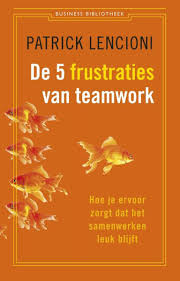
Patrick Lencioni schreef een boek: “De vijf frustraties van teamwork” (2002). Wat ons betreft een must read voor iedereen die zijn leidinggevende skills wil verbeteren of voor als je samenwerkt met anderen en voelt dat er meer in zit. Een fijn boek omdat het geschreven is in een verhaal wat boeit en wat maakt dat je in no time meegenomen wordt door de theorie onder sterk teamwork. Lencioni geeft een model voor high performing teams in de vorm van de “piramide van Lencioni’. Hierin kom je vijf succesfactoren van sterk teamwork tegen en deze geeft je tegelijkertijd ook inzicht in de belangrijkste bedreigingen ervan. Daarmee is de piramide van Lencioni een praktisch handvat voor teamontwikkeling.
De vijf frustraties van teamwork volgens Lencioni
1. Vertrouwen
De bereidheid en het vermogen om je kwetsbaarheid te delen met het team.
Je niet kwetsbaar durven opstellen, is de belangrijkste bottleneck in veel teams. In de onderste laag van Lencioni’s model gaat het feitelijk om een gebrek aan vertrouwen. Goed functionerende teams met een hoge mate van onderling vertrouwen, durven zich gemakkelijk kwetsbaar op te stellen. Teamleden weten wat er leeft bij elkaar, vragen elkaar makkelijk om hulp, geven elkaar feedback en zijn in staat om zo met en van elkaar te leren. Er is geen enkele reden om je groter voor te doen naar elkaar dan je werkelijk bent. We helpen elkaar immers om samen zo groots mogelijk te kunnen worden.
2. Constructieve conflicten
De bereidheid en het vermogen om je echt uit te spreken over je mening.
Patrick Lencioni introduceert hier het begrip ‘Kunstmatige harmonie’ als belangrijkste bedreiging van constructieve conflicten, oftewel net doen alsof we het goed met elkaar kunnen vinden. Dit zien we nogal eens terug in teams. Terwijl er thuis na een werkdag aan tafel flink gespuid wordt over die vervelende collega of – erger nog – bij het koffiezetapparaat tegen andere collega’s. Roddelen, onderstroom, onuitgesproken gedoe. Het is giftig voor teamwork en samenwerking. Wanneer de basis met vertrouwen goed gelegd is, kun je – hoe ongemakkelijk ook – het échte gesprek met elkaar voeren over wat er werkelijk speelt in het team. Wanneer onderstroom verdwijnt, is er meer open ruimte in het team. Snelheid van samenwerking gaat omhoog, omdat de politieke spelletjes verdwijnen.
3. Commitment
De bereidheid en het vermogen om afspraken glashelder te maken en te werken vanuit complete instemming.
“Assumption is the mother of all fuck ups”. Deze beroemde quote uit de film Pulp Fiction is wellicht wat grof, maar o zo waar. Onduidelijkheid of vaagheid is de grote bedreiging voor commitment. Niet dénken dat we met dezelfde verwachtingen het overleg verlaten, maar het zéker weten. Het vraagt discipline en daadkracht om steeds weer de vertaling naar de ‘5W’s en H’ te maken: wie, wat, waar, wanneer, waarom en hoe. Zorg ervoor dat het voor iedereen glashelder is in wat ze van elkaar verwachten zodat je ook weet waar je precies “ja” tegen zegt. Niets is zo schadelijk voor een relatie als het niet nakomen van afspraken. Laat slordigheid in afspraken maken niet een reden zijn waarom dit gebeurt. Wij zijn het helemaal met Lencioni eens: Zonde!
Nemen van verantwoordelijkheid
De bereidheid en het vermogen om elkaar aan te spreken op schadelijk gedrag en matige prestaties.
Bijna boven in Lencioni’s model wordt het echt flink serieus: het nemen van verantwoordelijkheid komt ter sprake. Uiteraard begint het met verantwoordelijkheid nemen voor je eigen houding, gedrag en prestaties. Kijk goed in de spiegel en moedig jezelf aan om steeds weer het beste van jezelf te geven in de teamprestaties. Maar ook zonder dat jezelf perfect bent, mag je in een team veel van elkaar verwachten. Hou elkaar aan de gemaakte afspraken! “Ach, hij is nu eenmaal zo”, of “Ik ben zelf ook weleens te laat, dus dan zeg ik er nu ook niets van”, zijn twee voorbeelden van goed bedoelde excuses die we vaak horen om elkaar niet aan te spreken op schadelijk gedrag.
In plaats daarvan kun je het gesprek opzoeken om elkaar uit te dagen allebei niet meer te laat te komen omwille van de teamprestatie. Anders leg je onbedoeld de lat steeds lager en ontstaat de lage standaard die niet langer uitdaagt tot samenwerken. Het risico is dat mensen op den duur weer ‘voor zichzelf’ gaan werken in plaats van voor en met elkaar
5. Gezamenlijk resultaat
De bereidheid en het vermogen om persoonlijk belang ondergeschikt of maximaal even belangrijk te maken aan het teambelang.
Bijna iedereen is opgegroeid met de beroemde uitspraak “Samen delen, samen spelen”. Lencioni beschrijft in zijn boek dat niets is echter zo menselijk als ons ego. Ons ego wat ons steeds weer uitdaagt om persoonlijke prestaties neer te zetten en te zorgen dat we ‘gezien’ worden. Dit werkt goed in een wereld waarin je solitair kunt werken. Competitief gedrag en individuele (bonus)beloning kan heel goed werken in het verhogen van de individuele prestaties. Doe je dit binnen een team, dan bestaat het risico is dat teamleden ‘tegen elkaar’ gaan strijden om zo zelf te kunnen winnen. Achterhouden van relevante kennis of niet bereid zijn om elkaar te helpen omdat het ten koste gaat van eigen productiviteit, zijn hiervan typische voorbeelden.
Tot slot nog wat input t.a.v. de organisatie en uitvoering van een teamoverleg.
Doe er jullie voordeel mee!
Checklist Teamoverleg
Toelichting:
Ook voor het teamoverleg geldt dat een goede voorbereiding cruciaal is.
Uiteraard is het belangrijk hier goede afspraken over te maken, je hier tijdens het overleg aan te houden én aan het eind van het overleg met elkaar dit overleg kort te evalueren. Vervolgens om een bondig verslag rond te sturen met wat er besloten is per agendapunt B of welke actie A er wordt uitgevoerd door wie en wanneer!
Besef dat een teamoverleg leuk, interessant moet zijn, het ‘wij-gevoel’ moet versterken en dat iedere deelnemer er met meer energie uit zou moeten vertrekken dan toen hij/zij erin ging. En dat het niet teveel van de totale loonsom van de deelnemers aan het overleg opeet! Reken dus maar eens uit wat een overleg jullie kost in euro’s!
Bovendien het meeste werk moet buiten het overleg plaatsvinden!
Ik heb, per fase, een aantal tips/checkpunten aangegeven:
Voorbereiding overleg:
Stuur (op tijd!!) een uitnodiging (alleen) aan die deelnemers die op basis van functie, ervaring/deskundigheid een waardevol aandeel kunnen leveren. Eventueel kan je, ter informatie, anderen achteraf een verslag sturen.
Geef een uiterste starttijd en eindtijd aan (max. een uur); indien langer korte pauze inlassen!
Benoem de agendapunten en meld, per punt, wat het doel is van dat (fictieve) agendapunt:
Ruud is dan en dan 25 jaar aan de organisatie verbonden
Doel: beslissen welk cadeau we aan hem overhandigen
Voorbereiding: neem jouw idee mee; wie heeft v.t.v. contact met Mique over eventuele wensen?
Tijd: 10 minuten
Afd. X heeft meer ruimte nodig (ca. 40 m2 extra)
Doel: brainstorm over beste oplossing (= nog geen besluit!)
Voorbereiding: denk na over jouw ideale inrichting waarbij je uitgaat van 6 personen die er gaan werken. Denk ook aan benodigde apparatuur/kastruimte etc.
Tijd: 45 minuten
Etc. Etc.
Geef, per punt, eventuele tips waar men informatie vandaan kan halen (links, google bij onderwerp X etc.) ook al eerder verzamelde informatie/rapporten etc. in bijlage meesturen!
Zorg dat eventueel nodige apparatuur aanwezig is (beamers, flip-over +papier! etc.)
Denk na over de opstelling. Afhankelijk van de doelen van de agenda!.
Bijv. bij een brainstorm werkt rond de flip-over staan ‘gele briefjes plakken’ of een brown-papersessie op een tekenrol van IKEA. In beide gevallen heeft iedere deelnemer een stift. Deze actieve houding stimuleert de deelnemers!
Er zijn organisaties waar men uitsluitend staande met elkaar overlegt.
Bij een presentatie werkt zitten in de juiste opstelling beter etc. moeten jullie wel altijd achter een tafel gaan zitten. Wordt snel ‘hangen’= niet actief! Soms werkt stoelen los in een kring beter. Experimenteer met opstellingen!
Het overleg zelf:
Voorzitter:
Begin op tijd (wacht nooit op telaatkomers! Ga ze ook niet bijpraten over waar de rest al is op dat moment)
Check of iedere deelnemer zich heeft voorbereid (zo niet maak dit direct bespreekbaar)
Check of er nog extra agendapunten zijn en bepaal op basis van belang/prioriteit of ze in deze vergadering aan de orde komen of in een volgend overleg worden behandeld
Blijf het proces bewaken (max. tijd per agendapunt, zet de eierwekker o.i.d! Let op inbreng door allen, zie hiervoor het Teamboek i.v.m. de Circle Oriëntaties Voorkeursgedrag van de deelnemers! ‘rem’ de praters, activeer de ‘zwijgers’ etc.). per onderwerp spreektijd aangeven en daarop afronden.
Als de voorzitter bij een bepaald agendapunt zelf de inhoud in gaat wijs dan bij dat punt even een andere voorzitter aan.
Denk na of het altijd dezelfde voorzitter moet zijn. Dit kan zelfs per punt wisselen op basis van gedragsvoorkeur, competenties, interesses, eigen leerpunt etc.! Bijv. wie vind het leuk een brainstorm te leiden, of juist tot een beslissing te komen?
Let op de notulist: kan deze het bijhouden? Check na elk punt wat deze heeft genotuleerd door dit hem/haar even te laten zeggen. Als de notulist dit niet kan is dit een teken dat het bijv. niet concreet genoeg is afgehandeld.
Per punt moet er een B = besluit en/of een A = actie worden genoteerd. Uiteraard mét erbij: door wie en wanneer afgerond!
Dit korte A en B lijstje kan bij de notulen worden gevoegd
Je kunt daar bij het volgend overleg mee beginnen.
Stop op de afgesproken tijd!
Evalueer (kort) de vergadering: iedere deelnemer direct spontaan een cijfer laten noemen. In een tweede ronde volgt de verklaring waarom dit cijfer is gegeven
De deelnemers een punt laten noemen mét een verbetervoorstel hierbij!
Gebruik de formule E=KxAxT: het Eindresultaat is de som van Kwaliteit x Acceptatie x Tijd.
Neem de verbeterpunten uit het ene overleg mee in de voorbereiding van de volgende.
Notulist:
Geef aan de voorzitter aan als je het niet kan bijhouden! Geef, na elk punt, aan wat je hebt genotuleerd door dit kort op te noemen. Per punt moet er een B = besluit en/of een A = actie zijn genoteerd. Uiteraard erbij: door wie en wanneer afgerond.
Dit korte A en B lijstje kan bij de notulen worden gevoegd
Maak de notulen in de vergadering (niet achteraf) dit ‘dwingt je het zeer kort en bondig te houden. Realiseer je dat lange verslagen niet worden gelezen. Laat staan dat er iets mee wordt gedaan.
Deelnemers:
Bereid je goed voor
Kom op tijd en vertrek ook op tijd
Neem een actieve houding mee.
Houd je zelf aan de tijd per agendapunt
Help het proces bewaken: dit is niet alleen de verantwoordelijkheid van de voorzitter en de notulist!
Spreek elkaar aan als jouw collega in zijn Valkuilen en/of Afkeuren duikt
Spreek van tevoren een teken af!
Let daarbij vooral op diens houding! (non verbaal)
Doe zelf ook wat met de feedback die jij krijgt
Tot zover de tips tips/checkpunten.
Succes op weg naar inspirerende, effectieve en efficiënte overleggen!
Benoem af en toe een van de teamleden tot observant!
Gegarandeerd leerzaam voor zowel de observant als het team.
Tips aan de observant: maak aantekeningen van concrete situaties tijdens de observatie; wat neem je waar / wat voel je daarbij / beschrijf welk gevolg jij ziet)
Maak van tevoren de afspraak met jouw collega’s dat ze goed moeten luisteren naar jouw terugkoppeling en alleen mogen onderbreken met een vraag als er inhoudelijk iets niet duidelijk is.
Pas als jij uitgesproken bent gaan jullie samen onder jouw leiding een rode lijn halen uit de observatie. Waak voor discussies, eens en oneens zijn!
Observatieformulier Team ………………
1. Gebruik maken van elkaars sterkten: …………………………………………………………………………………………..............
……………………………………………………………………………………………….......
……………………………………………………………………………………………….......
2. Elkaar feedback geven:
……………………………………………………………………………………………….......
……………………………………………………………………………………………….......
……………………………………………………………………………………………….......
3. Openheid:
……………………………………………………………………………………………….......
……………………………………………………………………………………………….......
……………………………………………………………………………………………….......
4. Vertrouwen:
……………………………………………………………………………………………….......
……………………………………………………………………………………………….......
……………………………………………………………………………………………….......
5. Nakomen van afspraken:
……………………………………………………………………………………………….......
……………………………………………………………………………………………….......
……………………………………………………………………………………………….......
Welke individuele sterkten / valkuilen / leerpunten / afkeuren heb je waargenomen?
……………………………………………………………………………………………….......
……………………………………………………………………………………………….......
……………………………………………………………………………………………….......
Welke team sterkten / valkuilen / leerpunten / afkeuren heb je waargenomen?
……………………………………………………………………………………………….......
……………………………………………………………………………………………….......
……………………………………………………………………………………………….......
Overige:
……………………………………………………………………………………………….......
……………………………………………………………………………………………….......
……………………………………………………………………………………………….......
Thema Feedback geven
Op wat voor manier je ook reageert, jouw reactie is steeds informatie over hóe mijn boodschap bij jou is terecht gekomen.
Deze informatie over hoe mijn boodschap wordt ontvangen en geïnterpreteerd noemen we feedback.
Feedback kan op verschillende manieren gegeven worden:
bewust: ja-knikken, 'ik snap het' zeggen - onbewust: gapen
verbaal: 'ik vind je onduidelijk' - non-verbaal: fronsen
uit jezelf: applaus - gevraagd: 'was het duidelijk'?'
antwoord: 'Ja'
De reactie van de ontvanger op de boodschap van de zender is informatie voor de zender over hoe zijn boodschap is geïnterpreteerd.
De functie van feedback in het communicatieproces
In de inleiding van dit hoofdstuk heb je gelezen dat communicatie alleen dan effectief is, als de interpretatie van de boodschap door de ontvanger gelijk is aan de bedoeling die de zender er mee had.
Effectieve communicatie kan dan ook pas tot stand komen als je ernaar streeft je bedoelingen zo direct mogelijk weer te geven en zo duidelijk mogelijk te formuleren. Feedback is hierbij een hulpmiddel, je kunt het gebruiken om na te gaan of je ook hebt overgebracht aan de ander, wat je wilde overbrengen. Op deze manier kan feedback de communicatie verduidelijken en verbeteren.
Naarmate de inhoud en/of relatie onduidelijker zijn, kan de communicatie minder effectief verlopen. Feedback als hulpmiddel kan zowel de inhoud als de relatie verduidelijken. Daardoor zal de communicatie effectiever kunnen verlopen. Hieronder zal ik nader ingaan op feedback als verduidelijking van de inhoud en als verduidelijking van de relatie.
Feedback op relationeel niveau is nogal complex, zodat daar ook wat meer aandacht aan is besteed dan de feedback op inhoudsniveau.
Feedback als verduidelijking van de inhoud
Ik neem de in de inleiding genoemde situatie als voorbeeld:
Ik vraag aan jou: “Kun je eens nagaan hoe jij doorgaans feedback geeft?” Jij kijkt vragend omdat je het antwoord niet weet. Blijkbaar ken je het woord feedback niet. Wanneer ik het woord feedback niet verduidelijk, maar toch van jou een antwoord verwacht, zal de communicatie niet effectief zijn.
In deze situatie is jouw vragend kijken een reactie op wat ik aan je vraag. Met andere woorden: je geeft feedback.
Jouw feedback is voor mij aanleiding om te vragen: “Ken je de betekenis van het woord feedback?” Jouw reactie had ook een vraag kunnen zijn: “ik weet niet wat feedback is. Kun je me dat uitleggen?”.
Doordat ik nu uitleg wat het woord feedback inhoudt zal de bedoeling van de vraag: "Kun je eens nagaan hoe jij doorgaans feedback geeft' duidelijk worden. Daardoor zal de communicatie effectiever kunnen verlopen. In dit geval spreken we van feedback als verduidelijking van de inhoud.
Schematisch is dit als volgt weer te geven:
Het vragend kijken op de vraag “Kun je uitleggen wat feedback is” zijn slechts twee van de manieren om te reageren op de boodschap van de zender. In het algemeen kunnen we stellen, dat hoe duidelijker de reactie is van de ontvanger, des te beter zal de zender op de reactie in kunnen gaan. In dit verband is “vragend” kijken minder duidelijk dan het stellen van een vraag, die aangeeft wat het probleem is. Niets zeggen als je iets begrepen hebt, is minder duidelijk dan zeggen: 'Ik heb het begrepen'. Als voorbeeld: de checkprocedure in de cockpit voordat het vliegtuig vertrekt.
Feedback als verduidelijking van de relatie
Niet alleen onduidelijkheid over de inhoud van de communicatie maakt communicatie ineffectief maar ook onduidelijkheid over de relatie tussen degenen die communiceren.
We nemen de tweede situatie uit de inleiding als voorbeeld:
Tegen een medestudent, die er de vorige bijeenkomst niet was, zeg je: “ik heb je gemist” (je vindt, dat hij een goede inbreng heeft in de discussies).
Je medestudent reageert hierop met een opsomming van een heleboel redenen waarom hij er niet was (hij vat jouw opmerking op als een verwijt).
In dat voorbeeld vind jij het erg moeilijk om op een directe manier tegen de ander te zeggen dat hij voor jou een waardevol persoon is in de groep; de ander krijgt door de manier waarop jij de boodschap formuleert, en je houding daarbij, het gevoel dat jij hem iets verwijt en gaat zich daarom verdedigen.
Schematisch is dit als volgt weer te geven:
In dit geval zou de communicatie effectiever zijn geweest als hij van jou had geweten dat je hem waardevol vindt en dat je het moeilijk vindt om zoiets tegen hem te zeggen. En als jij van hem had geweten dat hij jouw gedrag als een beschuldiging heeft ervaren. De communicatie zal effectiever zijn, naarmate de partners meer informatie hebben over hun eigen communicatiegedrag en dat van de ander. Pas dan kunnen ze bewuster handelen t.a.v. elkaar en adequater op elkaar reageren.
Deze informatie over elkaars communicatieve gedrag bestaat uit drie elementen:
Wat jij ziet/hoort, kortom waarneemt bij de ander (immers: het
waarnemen van gedrag gaat vooraf aan het betekenis geven aan
gedrag.
Hoe jij dat gedrag beleeft.
Het effect van dat gedrag op jou, de reactie die het bij jou teweegbrengt
(doordat jij het zó beleeft).
De betekenis van feedback op relatie niveau
De betekenis van het geven van feedback op het relatie niveau is duidelijk te maken met behulp van een model dat genoemd is naar de makers ervan, Joseph Luft en Harry Ingham: het Johari-venster. Dit model is een schematische weergave van iemands persoonlijkheid. Het model bestaat uit de volgende vier delen:
De ”vrije ruimte” is het deel wat zowel jezelf als anderen bekend is, bijv. je weet van jezelf dat je moeite hebt met het onder woorden brengen van je gedachten, anderen merken dat ook aan jouw onduidelijke formuleringen.
De “blinde vlek”: dit is een gebied van gedragingen, die voor anderen wèl waarneembaar zijn, maar waarvan jij jezelf niet bewust bent: bijv. zonder dat je het bewust bent klinkt je stem voor iemand af en toe irritant.
Het “verborgen gebied”: dit is het gedeelte van jezelf dat wel aan jou bekend is, maar aan anderen niet; bijv. jij vind het eng om iets positiefs tegen een ander te zeggen, en anderen weten dat niet. Hier gaat het om openheid.
Het “onbekende zelf”: dit is het gebied van jouw persoonlijkheid dat noch aan jou, noch aan anderen bekend is; bijv. noch jijzelf, noch anderen weten dat de oorzaak van jouw zwijgzaamheid in groepen in het feit ligt dat je vroeger thuis niets had in te brengen.
Wat is nu het effect van het geven van feedback op relatieniveau?
Door het geven van informatie over hoe je elkaar in de communicatiesituatie ervaart, en over de reacties die dat teweegbrengt, wordt de “vrije ruimte” van ieder vergroot en wel op twee manieren:
Doordat ik feedback krijg van de ander over gedrag dat mezelf onbekend is, wordt mijn 'vrije ruimte' vergroot en wordt mijn “blinde vlek” kleiner.
Doordat ik feedback geef aan de ander over gedrag dat hem wellicht onbekend is, vergroot ik zijn “vrije ruimte” en wordt zijn “blinde vlek” kleiner.
Feedback kan bovendien ook het “verborgen gebied” verkleinen. Als je namelijk feedback geeft zegt dat niet alleen iets over degene voor wie die feedback bestemd is, maar tegelijk ook iets over degene die feedback geeft.
Bijv.: Als je iemand verwijt dat hij jou nooit laat uitspreken zegt dat niet alleen iets over zijn gedrag maar het zegt tegelijkertijd ook iets over jouw gedrag.
Kennelijk laat je je telkens door hem onderbreken en dat verwijt je hem. Dit kan verwijzen naar gedrag uit het “verborgen gebied” namelijk dat je je bij discussies nogal voorzichtig en terughoudend opstelt. Door het maken van dit verwijt verklein je dus een stukje van het “verborgen gebied”.
Schematisch ziet het bovenstaande er als volgt uit:
bekend aan onbekend aan
jezelf jezelf
bekend
aan anderen
Onbekend
aan anderen
Het geven van feedback is een gebeuren tussen twee personen en daarmee relatief en subjectief, de feedback geldt immers alleen voor die relatie tussen die twee mensen in die situatie. Om die reden is een gesprek waarin bijvoorbeeld wordt gezegd ‘ik heb in de wandelgangen gehoord dat je …… ‘ of die en die heeft dit ….. over je gezegd’ uit den boze. Doe het altijd in de zogenaamde IK-vorm
Bovenstaande uitwisseling van informatie heeft dus tot gevolg dat de relatie tussen jullie beiden inzichtelijk wordt, waardoor de communicatie effectiever kan verlopen.
Op het moment dat de relatie duidelijk is – d.w.z. dat duidelijk is hoe jullie t.o.v.
elkaar staan - wordt het voor jullie beiden ook mogelijk om daar iets aan te veranderen. Door feedback kun je je bewust worden van een groter aantal gedragingen van jezelf en de effecten daarvan op de ander. Dit bewustzijn geeft je de mogelijkheid je gedrag te handhaven of te veranderen.
Voorwaarden en criteria bij feedback
Feedback zal effectief zijn als aan een aantal voorwaarden is voldaan en de feedback zelf aan een aantal criteria voldoet.
Er moet een sfeer van vertrouwen en veiligheid zijn tussen degene die feedback krijgt en degene die feedback geeft.
Beiden moeten het gevoel hebben dat feedback een belangrijk hulpmiddel is om de communicatie te verbeteren en beiden moeten de bereidheid hebben om van elkaar te leren.
Criteria waaraan de feedbackinformatie moet voldoen, wil ze effectief zijn:
De feedback moet betrekking hebben op waargenomen en aanwijsbaar (deel-) gedrag van de ander en niet gericht op diens persoon. Laat bijv. duidelijk merken dat je bij het geven van negatieve feedback niet de hele feedbackontvanger als individu laat vallen.
Feedback moet een beschrijving zijn, in tegenstelling tot een interpretatie van of een oordeel over het gedrag (bijv. “ik zie dat jij je ogen neerslaat”, en niet: “Jij bent verlegen”.)
Zoals ik al eerder schreef: wat jij aan gedrag hebt waargenomen, jouw beleving daarvan, en de reactie die dat bij jou teweegbrengt. Het is dus altijd een subjectieve beschrijving!
Feedback moet specifiek zijn en niet algemeen; het moet gericht zijn op concrete, specifieke en duidelijk omschreven gedragingen.
De feedback zal effectiever zijn als de tijd die ligt tussen het feedback geven en het gedrag waarop de feedback betrekking heeft zo kort mogelijk is. Dan ligt het nog vers in het geheugen.
Feedback moet de ontvanger in staat stellen iets met de informatie te doen. Het heeft dus geen zin, en werkt alleen maar frustrerend als je iemand herinnert aan iets wat bij toch niet kan veranderen (bijv.: “je stem is zo laag”).
Beperk de feedback tot informatie en ga geen adviezen geven t.a.v. wat de feedbackontvanger met die informatie moet gaan doen. Dan pas laat je hem alle vrijheid om zijn gedrag al of niet bij te sturen.
De feedback moet gegeven worden op het moment dat de feedbackontvanger het wil: feedback die als enige waarde heeft dat de gever zijn informatie kan spuien, kan gemakkelijk vernietigend werken.
De feedback moet geformuleerd worden op een manier die de ander uitnodigt om te reageren.
Regels voor het geven van feedback
Uit de genoemde criteria waaraan feedback moet voldoen om effectief te zijn, kunnen we de volgende regels afleiden:
Beschrijf het gedrag subjectief. Dus in de Ik-vorm (“Ik vind jouw gedrag ... “).
Beschrijf het in de hier- en nu-situatie. (“Als je dat zó zegt, vind ik ... “).
Beschrijf je eigen gevoel erbij. (“Als je dat zó zegt, vind ik je ... en dan voel ik
me …”).
Beschrijf ook het effect van het gedrag van de ander op jou. (“Als je dat zo
zegt, vind ik je ..., dan voel ik me ..., en dan reageer ik ...”) en: wees eerlijk.
Geef deze informatie op een manier die werkelijk helpt.
Geef haar op een moment dat het gedrag nog recent is.
Bied de informatie aan, maar dring ze niet op.
Geef de ander de ruimte om te reageren.
Nu volgt het Themakaartje Feedback geven van de methode!
Eerst maar eens de algemene manier waarop een gesprek waarin het geven van feedback op gedrag gegeven wordt idealiter moet verlopen:
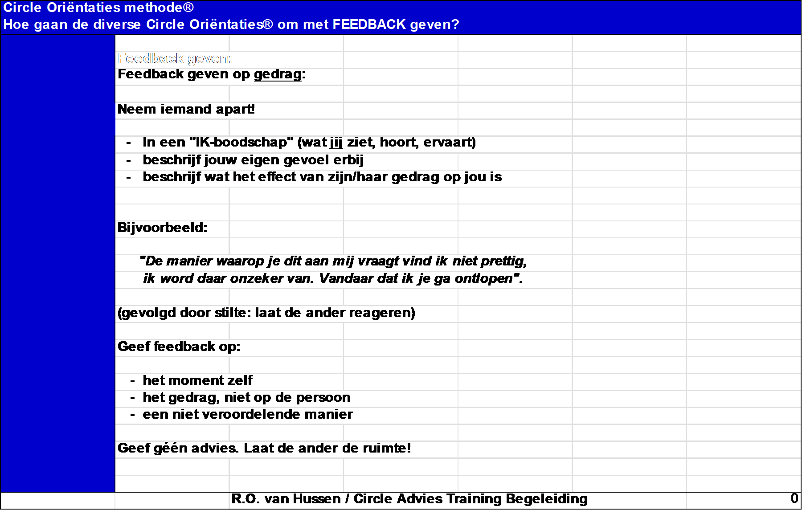
Vervolgens pak je jouw eigen voorkeursgedrag erbij en benoemt jouw eigen sterkten, valkuilen, leerpunten en afkeuren:
Ook hiervoor geldt: je hebt meer stijlen dus het gaat om jouw mix!
Circle Oriëntaties methode® | I=Introvert | E=Extravert | T=Taakgericht | R=Relatiegericht | ||
|---|---|---|---|---|---|---|
| Hoe gaan de diverse Circle Oriëntaties® om met FEEDBACK geven? | ||||||
| Ondersteunen | Ondernemen | Onderbouwen | Overdenken | Overleggen | Overeenkomen | |
| C1 I/R | C2 E/T | C3 I/T | C4 I/T | C5 E/R | C6 E/R | |
| Mogelijke | met respect | direct | rustig | ruimte gevend | omschrijft eigen | gevoel voor het |
| sterkten | voor de ander | duidelijk | duidelijk | niet bedreigend | gevoel | juiste moment/ |
| rustig | uitgesproken | onderbouwd | bedachtzaam | geruststellend | sfeer | |
| met zorg | zonder emotie | er voor de ander | zich in de ander | |||
| zijn | verplaatsen | |||||
| niet bedreigend | ||||||
| Mogelijke | veroordelend | té direct/ | eigen gevoel | je niet | niet duidelijk | past zich teveel |
| valkuilen | té afwachtend | aanvallend | beschrijven is | uitspreken | stelt zich té | aan de ander |
| advies geven | géén ruimte | lastig | té voorzichtig | kwetsbaar op | aan | |
| geven | wil naar inhoud | zijn | verplaatst zich | maakt het té | ||
| advies geven | i.p.v. gedrag | de ander niet | teveel in de | luchtig | ||
| zonder gevoel | aankijken | ander | bang voor de | |||
| brengen | confrontatie | |||||
| Mogelijke | niet | in "IK"-vorm | eigen gevoel | je sneller | duidelijk/kort | eigen moment |
| leerpunten | veroordelend | eigen gevoel | uitspreken | uitspreken | onderbouwen | kiezen |
| sneller doen | omschrijven | alleen gedrag! | duidelijker zijn | minder | meer vanuit | |
| niet | méér ruimte | meer inlevend | meer naar | emotioneel | eigen "IK" | |
| "niet op jouw | geen advies | in de ander | buiten treden | meer vanuit | spreek je uit | |
| hals halen" | eigen "IK" | |||||
| Mogelijke | respectloos | als ontvanger: | teveel gevoel | overrompelen | zonder gevoel | géén oog voor |
| afkeuren | té | er niets mee | erin leggen | ondoordacht | té afstandelijk | moment/ |
| confronterend | doet | té dichtbij zijn | drukte | er niet zijn voor | persoon | |
| teleurgesteld als | geen reactie | persoon | de ander | té bot | ||
| ontvanger | geeft | "open eind" | té bedreigend | |||
| afwijst | "feedback=soft" | |||||
| R.O. van Hussen / Circle Advies Training Begeleiding | 2 | |||||
Dit vraagt even uitzoeken maar bedenk dat het je straks in de uitvoering veel zal helpen onder het motto een gewaarschuwd mens telt voor twee!
Uit ervaring weet ik dat het belangrijk is deze gespreksvorm te oefenen! Hoe vaker je dit hebt gedaan des temeer kans op slagen het geeft.
Oefen bijvoorbeeld eens met een persoon die je vertrouwt en die jou graag helpt!
Ook hiervoor geldt 80% van het resultaat zit in een goede voorbereiding.
Afhankelijk van jouw eigen voorkeursgedrag ben je het meer of minder met deze uitspraak eens weet ik ook.
Thema Leidinggeven en coachen (incl. de managers- en ‘baas’ rol)
Ingvar Kamprad van IKEA zei eens: ‘De meeste leiders hebben hun bureau te ver af staan van de realiteit. De hele wereld is al gevuld met praters. Er zijn weinig mensen die echt wat doen. Onze managers leren continue van degenen die er toe doen: klanten en de medewerkers. Leiderschap gaat over het hart van je medewerkers. Medewerkers zijn geen nummers: zij willen zich gewaardeerd en belangrijk voelen. Ik probeer elke medewerker duidelijk te maken dat hij ertoe doet. Je moet als leider steeds het goede voorbeeld geven. Ik vraag dan ook nooit iets van mijn personeel dat ik zelf niet bereid ben om te doen.’
Over leiderschap zijn boekenkasten vol geschreven. De een laat zich inspireren door hedendaagse leiders en de ander door aansprekende leiders uit de geschiedenis en de huidige tijd: van Alexander de Grote tot de Daila Lama, van Nelson Mandela tot Mark Rutte, of Obama tot Trump. Van de Zonnekoning tot Napoleon.
Er zijn zoveel definities. Van Dale omschrijft dat een leider vaak van nature een leider is, iemand die leiderschap toont en mensen met zich meebeweegt.
Ik ken directeuren die helemaal geen leiding geven maar de hele dag bezig zijn met allerlei problemen op te lossen, -tig e-mails verstouwen en massa’s telefoontjes van hun medewerkers en klanten krijgen. Zij sturen dagelijkse processen aan, lossen veel problemen op, houden de dagelijkse resultaten bij.
Doen s ’morgens als eerste de deur van het bedrijf open en sluiten deze
s’ avonds als laatste.
In de Loonse en Drunense duinen vindt je hoge zandduinen ook wel fortduinen genoemd. En als je op de top van zo’n duin staat overzie je een flink stuk van het gebied. Ik neem leiders van organisaties vaak mee naar zo’n plek.
Ze ervaren dan opnieuw wat het betekent om overzicht te hebben en te houden, om zo nieuwe inzichten te krijgen, van afstand te kijken naar hun omgeving. Ook naar hun eigen functioneren. Van overzicht gaat het dan naar inzicht.
Welke rollen nemen zij eigenlijk zelf in? Wat zijn de consequenties daarvan? Voor henzelf? Voor hun organisatie? Voor thuis?
Vanuit welke motieven eigenlijk? Vanuit welke overtuigingen over zichzelf?
Die vragen wachten op antwoorden die staande op zo’n duin verrassend snel komen. Omdat ze natuurlijk allang in hun hoofden spelen. Maar ja, als je de hele dag bezig bent werk je jouw vragen op die manier ook weg.
Leidinggeven begint volgens mij met leidinggeven aan jezelf.
Wat voor een leider ben jij eigenlijk, breng jouw diverse rollen eerst maar eens in kaart.
Ik spreek over 4 concurrerende rollen van leiderschap. Hoeveel tijd besteedt jij (bijvoorbeeld per x periode) aan deze rollen?
Hieronder kun je ze zelf in beeld brengen. Deel de uitkomsten maar eens maar eens met iemand die jou dagelijks meemaakt.
Uiteraard hangt dit af van de fase waarin de organisatie zich bevindt en de fase waarin jij je bevindt,
Vanuit dit zelfinzicht kun je vervolgens bepalen welke rol je meer aandacht wilt of moet geven.
Geef in elk kwadrant het percentage aan van de tijd die je nu doorgaans aan deze kwadrant besteedt. Vervolgens geef je per kwadrant jouw toekomstige en gewenste tijd per kwadrant aan.
Kwadrant 1 Kwadrant 2
Ik hou me bezig met betrokkenheid, Ik hou me bezig met de toekomst, hou
onderstreep de waarden van de onder- opkomende trends bij, concentreer me
neming, daag mensen uit en creëer op doel en richting. Ik geef anderen
een gevoel van opwinding. een idee van de toekomst van de
onderneming op de lange termijn.
Mijn huidige tijd:……..% Mijn huidige tijd:……..%
Mijn toekomstige tijd:………% Mijn toekomstige tijd:………%
Kwadrant 3 Kwadrant 4
Ik hou me bezig met de efficiency Ik hou me bezig met prestatie,
van activiteiten, beoordeel de effecten concentreer me op resultaten, los
ervan en integreer botsende problemen op en beïnvloed
gezichtspunten en behoeften. beslissingen op lager niveau.
Mijn huidige tijd:……..% Mijn huidige tijd:……..%
Mijn toekomstige tijd:………% Mijn toekomstige tijd:………%
Leider, kijk waar je vandaan komt als je wilt weten waar je heengaat.
Uiteraard zijn ook jouw opvoeding, de omgeving waar jij opgroeide etc. bepalend voor jouw leiderschap over jezelf. Kom je uit een nest waar alles voor je werd bepaald dan zal je anders met leiderschap omgaan als je al vroeg je eigen verantwoording kreeg over jouw leven. Ik ken vele gevolgen van hoe deze aspecten een rol spelen bij het huidig functioneren. Ook binnen het thema leiderschap.
Ik beschrijf een praktijkvoorbeeld.
Vader en zoon hebben een bedrijf. Vader heeft dit overgenomen van zijn vader die het bedrijf letterlijk uit de modder heeft getrokken. Er was geen tijd voor vader zijn, hij was 24/7 de werkgever. Hij verwachtte van zijn zoon dat er altijd hard gewerkt werd.
Voor ontspanning was er geen tijd, dat leverde niets op.
Dit patroon herhaalde zich toen de zoon zelf directeur werd. Zijn zoon wilde graag voetballen maar vader haalde hem bij de club weg toen zijn zoon wilde meetrainen.
Als tegenprestatie verdiende zoon al heel vroeg veel geld. Als eerste kreeg hij een brommer en ook zijn rijbewijs en auto bezat hij op zijn achttiende. Het ontbrak hem financieel aan niets. “ik heb nooit een vader gehad”’ vertrouwde de zoon mij toe toen ik met beiden, eerst afzonderlijk, in gesprek kwam.
Mijn oorspronkelijke opdracht hen helpen het bedrijf naar een volgende fase van professionalisering brengen werd omgezet in begeleiding van het herstel van de vader-zoon relatie. Pas toen die hersteld was konden we beginnen met de oorspronkelijke opdracht.
De directeur van een bedrijf had hoge verwachtingen van zijn collega’s, beginnend met het managementteam. Niet alleen hadden deze allen een master gehaald of beschikten over een ingenieurstitel hij verwachtte een hoge kwaliteit van rapportage, volledig geautomatiseerd. Mee uitdragen van de visie.
Men werkte met concreet uitgewerkte doelen en strategieën om die te halen. Alles volgens de Plan-Do-Check-Act cirkel. Volgens het boekje.
Wat ontbrak was onderling vertrouwen. En elkaar ondersteunen, voor elkaar klaarstaan. De directeur vond de term verbindend leiderschap dan ook maar soft klinken. Management door watjes noemde hij het.
Toen we tijdens een intensieve outdoortraining diep in de nacht rond het vuur zaten en dit gegeven ter sprake kwam kwamen de teamleden elk tot het inzicht dat juist de onderlinge verbinding een groot gebrek was. Terwijl de behoefte heel groot bleek.
Het vertrouwen groeide vanaf dat moment. De betrokkenheid werd groot.
De directeur ontdekte dat je kwetsbaar opstellen juist niet kwetsbaar is. Hij vertelde over zijn jeugd en hoe zijn vader, medeoprichter van een groot Nederlands bedrijf van zijn kinderen hoge verwachtingen had. Studies moesten volgen die ertoe deden.
Ambitieus zijn was de heersende norm. “Jij ook al!” riepen zijn collega’s rond het vuur.
Persoonlijk leiderschap werd een belangrijk issue in de organisatie. Van monteur tot directeur. Ongeacht afkomst of functie mocht iedereen zijn die hij was: mens!
Ook jouw gedrag heeft flink wat impact op de manier waarop jij leiding geeft.
Over hoe jij de 4 rollen binnen het leidinggeven invult gaat het themakaartje Leidinggeven.
Ik start met de positieve bijdrage vanuit iedere stijl. Hoe vertalen deze 4 rollen zich in jouw manier van leidinggeven? En je hebt uiteraard meer stijlen dus het gaat weer om de combinatie! Weet je nog jouw mix?
| Circle Oriëntaties methode® | I=Introvert | E=Extravert | T=Taakgericht | R=Relatiegericht | ||
|---|---|---|---|---|---|---|
| Stijlgebonden bijdragen vanuit de verschillende oriëntaties (= vanuit sterkten!) | ||||||
| De 4 rollen v.d. | Ondersteunen | Ondernemen | Onderbouwen | Overdenken | Overleggen | Overeenkomen |
| leidinggevende | C1 I/R | C2 E/T | C3 I/T | C4 I/T | C5 E/R | C6 E/R |
| Leider | boven de partijen | straalt kracht uit | wil duidelijkheid | goed doordachte | weet wat er | creatief |
| integriteit | voorop | verschaffen | ideeën | speelt tussen | nieuwe ideeën | |
| Kernwoord: | niet alleen nu, | initiatiefrijk | licht zaken toe | stap voor stap | de mensen | daagt uit |
| Visie | ook wat laten | beschrijft deze | rustig gedrag | empathisch | ||
| we na | ||||||
| Manager | ruimte gevend | geeft instructies | maakt procedures | eerst zeker | toetsend | nieuwe |
| aan eigen | daagt uit | onderbouwt | stellen wat er | gedragen | werkwijze | |
| Kernwoord: | inbreng | bewaakt | bewaakt logisch | al is | beslissingen | nieuwe |
| Overzicht | vanuit collectief | voortgang | proces | doordacht | bewaakt dat | nvalshoeken |
| bewaakt | handelen | iedereen | geen starre | |||
| waarden | bewaakt rustige | aangesloten is | procedures | |||
| voortgang | ||||||
| Coach | luisterend | vertellend | uitleggend | luisterend | enthousiast- | kijkt wat |
| rustig | doet het voor | draagt feiten aan | coachee aan | merend | coachee nodig | |
| Kernwoord: | stimulerend | aandacht voor | aandacht voor | eigen stuur | stimuleert | heeft |
| Hulp | aandacht voor | resultaat | logica & kennis | aandacht voor | leeft mee | frisse blik |
| persoonlijke | reflectie / rust | onorthodoxe | ||||
| zaken | werkwijze | |||||
| Baas | liever niet vanuit | gaat lastige | pragmatische | denkt in | liever niet vanuit | ontziend |
| deze rol | beslissingen | beslissingen | oplossingen | deze rol | bekijkt de zaak | |
| Kernwoord: | gelijkwaardige | niet uit de weg | vanuit ratio | goed door | bottum-up | van alle kanten |
| Macht | behandeling | hakt knopen | bewijzend | doordachte | licht impopulaire | |
| voor iedereen | door | acties | maatregel toe | |||
| R.O. van Hussen / Circle Advies Training Begeleiding | 1 | |||||
Leidinggeven vanuit de leidinggevende vraagt dus om bewust en op basis van feedforward nagaan hoe dit te doen vanuit jouw voorkeursgedrag.
En dus in jouw sterkten te blijven en niet door te schieten naar jouw valkuilen.
Daarvoor is het volgende deelkaartje met aandachtspunten per stijl interessant.
| Circle Oriëntaties methode® | I=Introvert | E=Extravert | T=Taakgericht | R=Relatiegericht | ||
|---|---|---|---|---|---|---|
| Stijlgebonden aandachtspunten vanuit de verschillende oriëntaties | ||||||
| De 4 rollen v.d. | Ondersteunen | Ondernemen | Onderbouwen | Overdenken | Overleggen | Overeenkomen |
| leidinggevende | C1 I/R | C2 E/T | C3 I/T | C4 I/T | C5 E/R | C6 E/R |
| Leider | let op aansluiting | niet te ver | niet alles v.t.v. | vertel wat je | eigen visie | ook raamwerk |
| niet te abstract | voorop lopen | dichttimmeren | denkt | meer op de | aangeven | |
| Kernwoord: | niet te afwachtend | kwetsbaar | eigen visie | eerder naar | voorgrond | niet teveel tegelijk |
| Visie | opstellen helpt | toetsen | buiten treden | tegen de stroom | meer rust | |
| visie toetsen | emoties tonen | duidelijk zijn | in durven gaan | inbouwen | ||
| Manager | duidelijke | zijn doelen | let op aantal | eigen doelen en koers | eigen plan | prioriteiten |
| doelen en | realistisch? | procedures | eerder delen | trekken en | stellen | |
| Kernwoord: | koers | is koers duidelijk? | geef ruimte voor | met anderen | presenteren | zaken eerst |
| Overzicht | controles | (toetsen) | eigen inbreng | jouw | afmaken | |
| inbouwen | delegeren | ook aandacht | nieuwe werkwijze | verwachtingen | alvorens nieuwe | |
| verantwoording | voor | ook inzetten | uitspreken | aan te pakken | ||
| laten afleggen | gevoelens | spreek jouw verwachtingen | duidelijk grenzen | meer lijn | ||
| uit | aangeven | inbrengen | ||||
| Coach | niet op eigen | stuur niet | niet teveel uitleg | openen het | niet té enthousiast | werken vanuit |
| schouders | overnemen | naast logica ook | gesprek ingaan | meer diepgang | persoonlijk plan | |
| Kernwoord: | nemen | van coachee | naar gevoel | niet teveel vanuit | aanbrengen | evalueren |
| Hulp | niet teveel | niet te dwingend | luisteren | eigen scenario: | meer vragen | niet teveel tegelijk |
| opvoeden | denkpauzes | goed luisteren | spontaniteit mag! | |||
| geven | ||||||
| Baas | streep trekken | let op teveel | besteed ook | niet té voorzichtig | streep trekken | jouw verwachting- |
| indien nodig | ingrijpen | aandacht aan | méér op de | nee zeggen | en uitspreken | |
| Kernwoord: | macht ook | niet teveel angst | emoties | voorgrond | impopulaire | duidelijker kaders |
| Macht | gebruiken | inboezemen | let op éénrich- | treden | maatregelen | aangeven |
| tingsverkeer | nemen | vanuit stappen- | ||||
| plan werken | ||||||
| 2 | ||||||
Neem jouw eigen voorkeursgedrag er maar bij en benoem voor jezelf eens jouw gedragsmatige sterkten en aandachtspunten binnen deze 4 rollen.
Ook hier geldt het kost wat investering maar het gaat je helpen jouw leidinggevende rol beter uit te voeren!
Er zijn heel wat modellen en theorieën rond het thema leidinggeven in omloop.
Graag wijs ik je op het model Situationeel leidinggeven van Hersey en Blanchard, ook omdat deze goed aansluit bij de Circle Oriëntaties Methode.
Situationeel leidinggeven volgens Hersey & Blanchard
Kijk eens of de genoemde methode van Situationeel Leiderschap je hierbij helpt. Google eens op dit model!
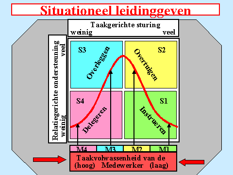
Je hebt dan ontdekt dat het medewerkers grofweg in vier categorieën indeelt die ieder om een verschillende aanpak vragen.
De medewerker is:
M4: bekwaam en betrokken bij het bedrijf
M3: bekwaam, maar onvoldoende betrokken bij het bedrijf
M2. betrokken, maar onvoldoende bekwaam
M1. onvoldoende betrokken en onvoldoende bekwaam
Daarnaast is het belangrijk om een zo goed mogelijk beeld te krijgen hoe het zit met zijn:
willen (wat is zijn ambitie?)
kiezen (welke keuze maakt hij echt?
kennen (wat weet hij over iets?)
kunnen (kan hij die kennis ook toepassen?)
durven (durft hij dit ook?)
mogen (mag hij dit ook van jouw omgeving? En van zichzelf?)
En ….. heb je zijn cirkel van Sterkten, Valkuilen, leerpunten en Afkeuren bij de hand?
Van de kant van de leidinggevende, jij dus:
(zie jouw persoonlijke Plan!)
Iedere leidinggevende, dus ook jij, heeft zijn voorkeursgedrag dat deze ook tijdens het leidinggeven inzet. Om een goed beeld te krijgen van de balans tussen Relatie- of Taakgericht leidinggeven wordt deze in de Circle Oriëntaties Methode aangegeven in de scorebalans van deze methode.
Daarnaast heb je de mate van jouw C1 Ondersteunen C2 Ondernemen C3 Onderbouwen C4 Overdenken C5 Overleggen en C6 zelf in beeld gebracht in de ingevulde scorelijst.
En vervolgens heb je jouw voorkeursgedrag in deze (leer)cirkel geplaatst:
Daarnaast heb je jouw voorkeur voor de 4 rollen van leidinggeven in kaart gebracht o.b.v. het themakaartje!
Vervolgens heb jij jouw S.M.A.R.T. persoonlijk ontwikkelingsplan gemaakt:
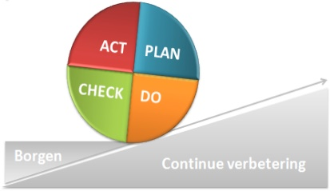
Welke Sterkte(n) ga je inzetten tijdens het leidinggeven?
Hoe voorkom je dat je in jouw Valkuil(en) terechtkomt?
Wat ga je doen als je in jouw Afkeur(en) terechtkomt?
Welke Leerpunt(en) ga je toepassen?
Je beschikt nu over het inzicht over jouw manier van leidinggeven en hoe deze toe te passen op uiteenlopende situaties en medewerkers.
Ik behandel in verschillende cases de toepassing van het model:
Case 1 Situationeel Leidinggeven
Ruud van Hussen is een nieuwe collega. Hij heeft jaren achter de service-balie van de gemeente gewerkt. Maar een tijdje geleden heeft hij aangegeven in jullie branche te willen werken en is op zoek gegaan naar een passende functie. Uiteindelijk is hij bij jullie bedrijf komen werken. Hij werkt er nu een halfjaar.
Volgens jou heeft hij het goed naar zijn zin bij jullie bedrijf. Je krijgt positieve reacties van het team waarin hij werkt omdat hij echt zijn best doet. En het is bovendien een aardige kerel.
Hij is altijd stipt op tijd en vertrekt zeker niet als eerste aan het einde van de werkdag.
Toch krijg je de laatste tijd ook wat opmerkingen van zijn collega’s. Hij weet niet altijd welk gereedschap hij moet gebruiken waardoor het werk niet altijd op tijd afkomt.
Ook is er de afspraak (staat in de personeelsinstructies) dat hij zich voordat hij naar huis gaat altijd afmeldt bij de voorman en dat is ook al een aantal keren niet gebeurd.
Als iemand daar iets van zegt lacht hij maar eens maar het wordt niet beter.
Je hebt besloten vanmiddag bij het werk langs te gaan en met hem een gesprek hierover te hebben.
Hoe pak je dit aan? Wat neem je mee in de voorbereiding?
Case 2
Ruud van Hussen laat niet altijd het achterste van zijn tong zien.
Je weet eigenlijk nooit precies wat hij denkt, het liefst trekt hij zich terug bij discussies in het team dat bekend staat om hun luidruchtige manier van overleggen.
De meeste teamleden hebben het hart op de tong: als ze een mening hebben spreken ze die direct uit. Als ze het bijvoorbeeld ergens niet mee eens zijn krijg je dat als leidinggevende direct te horen.
Zijn werk doet hij naar behoren al zal hij geen stapje extra doen. Ook eigen ideeën brengt hij niet in. Terwijl hij die door zijn jarenlange ervaring toch zeker zal hebben.
Hij doet zelfstandig zijn werk. Hij werkt al ruim 10 jaar bij jullie bedrijf maar er is eigenlijk niemand die hem kent.
In jullie streven om het beste uit jullie mensen te halen heb je bedacht eens een gesprek met hem te hebben over zijn ontwikkeling. Het zou toch mooi zijn als je samen met hem een plan zou kunnen maken.
Je hoorde onlangs dat zijn huwelijk na ruim 25 jaar is gestrand en dat zal de nodige consequenties voor hem hebben.
Moet je het daar als leidinggevende over hebben? Of hou je je bezig met de taakkant van zijn functie.
Hoe bereidt je je zo goed mogelijk voor op jullie gesprek?
Case 3
Met Ruud van Hussen zijn er continu conflicten.
Regelmatig komt hij te laat op het werk en vaak vertrekt hij te vroeg. Regelmatig geeft hij zijn collega’s een grote mond. Ook naar jullie klanten treedt hij zeer klantonvriendelijk tegemoet.
Zo kan het niet verder.
Het vreemde is dat toen Ruud zo’n 5 jaar geleden bij jullie begon hij een prettige indruk maakte. Een vakman met veel ervaring en met het hart op de goede plek.
In de loop van de jaren veranderde zijn gedrag. Nu is het wel zo dat hij al een aantal malen alleen een beperkte loonsverhoging heeft gehad en dat ook een promotie aan zijn neus voorbij ging.
Ik ga hem daar straks op aanspreken heb je besloten. Nu staat Ruud bekend om zijn grote mond. Hij accepteert niet dat collega’s hem daarop aanspreken. Sterker nog hij kiest vaak voor de tegenaanval.
Wat wil je eigenlijk bereiken in dit gesprek en hoe bereidt je je zo goed mogelijk voor op jullie gesprek?
Case 4
Ruud van Hussen heeft meer ervaring dan jij. Je bent een maand geleden aangesteld als zijn leidinggevende.
Hij doet zijn werk zelfstandig, heeft de al genoemde ervaring die hem een goed overzicht doet hebben van de uit te voeren werkzaamheden.
Die hij ook nog eens netjes uitvoert. Zijn collega’s en zijn klanten lopen met hem weg. Het is een model-collega, staat voor iedereen klaar. Ook naast het werk.
Het is een open persoonlijkheid en een vriendelijk mens bovendien.
In de ruim 25 jaar heeft hij nooit iets gegeven om promotie. “Laat mij maar gewoon mijn werk doen” reageert hij steeds als zich een kans op promotie voordoet.
In zijn vrije tijd is hij voorzitter van een plaatselijke voetbalclub met een flink aantal leden. Daarnaast voorzitter van de plaatselijke E.H.B.O. afdeling en altijd druk in de weer met de vrijwilligers.
Kortom een druk mens met veel talenten.
In jullie streven zijn jullie op zoek naar collega’s die hun werkervaring op de jonge instromers willen overbrengen en volgens jou is Ruud daar wel geschikt voor.
Straks maar eens bij hem polsen.
Hoe bereidt je je zo goed mogelijk voor op jullie gesprek?
Een goed gesprek vraagt om een goed vervolg en daar kun je bijvoorbeeld het zgn. G.R.O.W. model bij gebruiken. Het vraagt naast een goed gesprek ook om de start van de opvolging ervan. Het biedt jou als coach en jouw coachee houvast.
G.R.O.W model Coaching
Goal - doel
Wat wil je bereiken?
Wat is het verwachte resultaat van je mogelijke acties?
Waar ligt dan de nadruk van dit gesprek op en hoe zal dat je doel beïnvloeden?
Hoe zou de situatie voor jou moeten zijn om tevreden te zijn?
Hoe meet je of je jouw doel hebt bereikt?
Reality - Stand van zaken / feiten
Hoe ziet de situatie er nu uit? Waarom is dat problematisch?
Hoeveel impact en controle heb je momenteel op die situatie?
Wat heb je tot nu toe ondernomen? Waarom werkte dat wel of niet?
Wat heeft je tegengehouden om meer of andere dingen te proberen?
Wat zijn de consequenties als het je niet lukt?
Wie zijn erbij betrokken? Wat doen zij? Hoe belangrijk zijn zij om een goede oplossing te krijgen?
Options - Diverse mogelijkheden
Welke alternatieven heb je? Hoe zou een lijstje eruit zien met je mogelijke acties?
Wat zijn de voor- en nadelen van de divers opties?
Hoe makkelijk of moeilijk zijn die opties voor jou?
Zijn er voor de verschillende opties ongewenste nevenverschijnselen?
Welke optie zal je het meeste voldoening geven?
Will - Acties
Welke optie ga je effectief uitproberen?
Hoe ga je weten of het effectief werkt?
Wie zijn de belangrijke spelers die het eindresultaat mee gaan bepalen? Hoe betrek je die personen bij je plan?
Wie moeten geïnformeerd worden en waarover?
Wat zijn mogelijke obstakels om de actie te laten slagen?
Hoe voel je jezelf bij de gedachte aan het uitvoeren van deze optie? (zelfverzekerd, bang, twijfel, enthousiast...)
Hoe kan ik je verder ondersteunen bij dit initiatief?
Leestips:
m.b.t. Leiderschap:
‘Echte leiders in echte organisaties’ van Rick Willemsen
‘De natuurlijke leider’ van Mark van Vugt en Anjana Ahuja
‘Durf te leiden’ van Brene Brown
‘Bewust leiding geven’ van Dr. Thomas Gordon
‘Napoleon Bonaparte’: diverse boeken van Johan Op de Beeck
m.b.t. Coaching:
‘Coachen op het werk’ van Myles Downey
‘De kunst van het coachen’ van Ton Rijkers
Een interne coach of toch liever/beter een externe?
Graag ga ik verder in op de voor- en nadelen van het werken met een interne- of externe coach.
Intern gebeurt dit door iemand die de coachrol oppakt en werkzaam is binnen dezelfde organisatie als de medewerkers die hij of zij begeleidt.
Voordelen van een interne coach
Kent de organisatie
Begrijpt de cultuur, structuur en werkwijzen.
Kan situaties snel plaatsen en duiden.
Laagdrempelig
Medewerkers weten de coach gemakkelijker te vinden.
Vaak sneller beschikbaar dan een externe coach.
Kosteneffectief
Meestal goedkoper dan het regelmatig inhuren van externe coaches.
Duurzame ontwikkeling
Blijft aanwezig binnen de organisatie.
Kan ontwikkelingen en resultaten over langere tijd volgen.
Netwerk en context
Kent belangrijke spelers, processen en gevoeligheden.
Kan medewerkers helpen hun weg binnen de organisatie te vinden.
Nadelen van een interne coach
Minder onafhankelijk
Kan bewust of onbewust beïnvloed worden door organisatiebelangen.
Vertrouwelijkheid
Medewerkers kunnen terughoudend zijn om gevoelige zaken te bespreken.
Angst voor gevolgen voor carrière of beoordeling.
Over vertrouwelijkheid moeten duidelijke afspraken worden gemaakt!
Dit geldt overigens ook voor een externe coach!
Rolconflicten
Wanneer de coach ook andere functies heeft (leidinggevende, HR-adviseur, collega).
Onduidelijkheid over petten en verantwoordelijkheden.
Blinde vlekken
Kan zo gewend zijn aan de organisatiecultuur dat bepaalde patronen niet meer opvallen.
Beperkte expertise
Een externe coach brengt soms nieuwe inzichten, methoden en ervaringen uit andere organisaties mee.
Wanneer is een interne coach vooral geschikt?
Persoonlijke ontwikkeling.
Samenwerking binnen teams.
Loopbaanvragen.
Begeleiding van nieuwe medewerkers.
Cultuur- en verandertrajecten.
Wanneer is een externe coach vaak beter?
Bij gevoelige persoonlijke kwesties.
Conflicten met leidinggevenden of collega's.
Situaties waarin volledige onafhankelijkheid essentieel is.
Coaching van directie- of bestuursleden.
Een veelgebruikte vuistregel is: hoe gevoeliger het onderwerp en hoe groter het belang van onafhankelijkheid, hoe meer een externe coach de voorkeur heeft; hoe belangrijker kennis van de organisatiecontext, hoe waardevoller een interne coach kan zijn.
Zelf werk ik uitsluitend voor organisaties die ik door en door ken. Mijn vertrouwelijke rol is daarbij een belangrijke voorwaarde. Van directeur tot en met iedere medewerker die ik spreek, iedereen kent deze voorwaarde en afspraak over vertrouwelijkheid.
Als het in het belang van de organisatie en/of een persoon is kan ik wel een rol spelen onder de uitdrukkelijke voorwaarde dat iemand dat zelf aangeeft.
Thema Omgaan met tijd
“What is important is seldom urgent and what is urgent is seldom important”
Dwight D. Eisenhower
Als er 1 gegeven is waar we het over eens kunnen zijn als we de Westerse tijdmeting volgen is dat ieder mens dezelfde hoeveelheid tijd heeft.
En toch gaan we er allemaal anders mee om. Afhankelijk van hoe jij jouw leven indeelt, vanuit welke rollen jij opereert, hoe verantwoordelijk jij je voelt etc.
Jouw voorkeursgedrag bepaalt in hoge mate hoe jij ook met jouw tijd omgaat. Zie daarom jouw door jou ingevulde Sterkten, Valkuilen, Leerpunten en Afkeuren!
Onderdelen thema Omgaan met tijd
Jouw persoonlijkheid en timemanagement o.b.v. de Circle Oriëntaties methode®
Hoe effectiever én efficiënter om te gaan met jouw tijd (en met elkaars tijd)
Onderdeel 1 Persoonlijke aspecten
De Circle Oriëntaties methode® helpt om jouw inzicht te verbeteren, hoe jij:
productiever, dus efficiënter én effectiever kunt omgaan met jouw eigen tijd (en die van anderen)
contraproductief kunt omgaan met jouw eigen tijd
betere doelen en prioriteiten kan stellen
omgaat met bijv. uitdagingen, perfectionisme en verantwoordelijkheidsgevoel
direct “nee” moet zeggen omdat je weet waar je “ja” op zegt
daarbij jouw grenzen aangeeft en bewaakt
assertief kunt optreden (zie ook het thema feedback in de Circle Oriëntaties Methode®))
communiceert over jouw tijdsbesteding, wat je daarin kunt verbeteren
omgaat met werkdruk en wat je daarin beter kunt doen
Het themakaartje ‘Hoe gaan de diverse Circle Oriëntaties om met tijd?
Zo gaan de diverse stijlen met hun tijd om. Kijk eens hoe jouw voorkeursgedrag zich hier laat zien. Bedenk ook dat het weer gaat om jouw unieke mix van stijlen!
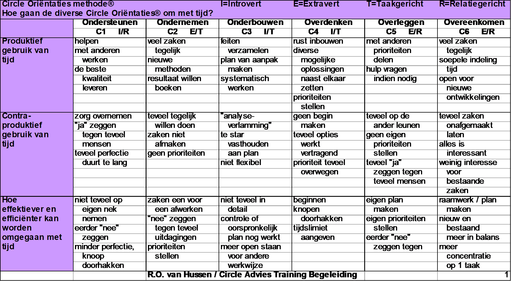
En ook jij hebt te maken met jouw persoonlijke manier van omgaan met jouw zorg, jouw afkeuren, doelen & prioriteiten en jouw houding tegenover “nee” zeggen.
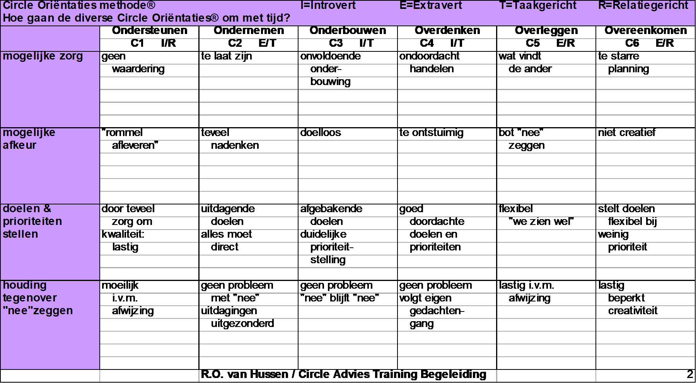
Aktie: maak een Persoonlijk Plan. Zodat je zelf de voortgang kunt bewaken!
Onderdeel 2 Effectiever én efficiënter werken
Het gaat dan om:
Effectieve werkorganisatie
Efficiënt omgaan met tijd
Planning en agendabeheer
Eigen taken en doelen identificeren
Een goede balans vinden tussen korte- en lange termijnactiviteiten
Prioriteiten stellen
Inzicht in jouw tijdsbesteding (persoonlijke werkmatrix)
Het verschil tussen belangrijke en onbelangrijke taken onderkennen
Identificeren van tijdverspillers
Werken met een matrix om jouw prioriteiten beter in beeld te krijgen.
Je kunt werken met een matrix die komt uit Prioriteiten, effectieve keuzes in leven en werk van Stephen R. Covey, A. Roger Merrill en Rebecca R. Merrill.
Het maakt je bewust van hoe jij omgaat met belangrijke en niet belangrijke zaken, die bovendien urgent en niet urgent zijn.
Belangrijk en/of urgent?
Aktie: Vul de onderstaande timemanagement-matrix in met daarin, per kwadrant, jouw bezigheden gegroepeerd in. Het geeft je inzicht in jouw verschillende taken en hoe je daar slimmer mee om kunt gaan. Je bedenkt of een taak belangrijk en/of urgent is.
Maak direct keuzes: een taak is belangrijk of niet. En een taak is urgent of niet. 
Kwadrant 1: Belangrijk en urgent
Dit is het kwadrant van branden blussen: het oplossen van allerlei acute problemen, klachten, projecten met een deadline op korte termijn. Dit moet gedaan worden en het kan niet wachten. Er is spoed, bloedspoed en rampspoed.
Kwadrant 2: Belangrijk maar niet urgent
Dit is het belangrijkste kwadrant. Hier ligt de basis voor succes, juist op de lange(re) termijn. als je hierin niet investeert loop je het gevaar niet toe te komen aan jezelf en niet aan jouw belangrijkste taken en verantwoordelijkheden. En dat levert je weer frustratie op omdat je er weer niet voldoende tijd en aandacht aan hebt besteed.
Ook hier komen de besproken Circle conceptvragen van pas: Wie ben je? Waarom ben je hier? Wat is jouw bijdrage? Hoe ga je die zo efficiënt en effectief inzetten? Waar ga je nu aandacht aan besteden? Want in dit kwadrant werk je aan jouw plannen en verbeterpunten, hier vindt je de ruimte voor ontwikkeling en kansen!
Aktie: lees jouw antwoorden op de vragen nog eens terug. Schrijf eens op hoeveel tijd per dag jij in deze kwadrant werkt.
Kwadrant 3: Onbelangrijk en urgent
In dit kwadrant ben je andermans brandjes aan het blussen. Of je wordt continu gestoord of gebeld, of gemaild over onbelangrijke zaken. Tip: geef duidelijk jouw grenzen aan.
Aktie: maak eens een lijstje van zaken die je vandaag voor het laatst hebt gedaan. Op wiens lijstje horen ze eigenlijk? Ga in gesprek met die persoon en draag ze direct over. Maak ook afspraken met elkaar, bijvoorbeeld als je een bepaald moment niet gestoord wilt worden: wie pakt de telefoon op etc.. Spreek bijvoorbeeld een teken af, of zet een stopbord op je werktafel, hang een bordje op de deur ‘niet storen’.
Kwadrant 4: Onbelangrijk en niet urgent
Dit kwadrant zit vol onnodige zaken als overmatig internetten, spelletjes doen en teveel tv kijken. Dit zou je het ‘vluchtkwadrant’ kunnen noemen. Als je geen zin hebt in je werk of geen duidelijke doelen hebt is het oh zo verleidelijk om met allerlei kwadrant 4 dingen bezig te gaan. Onderzoek dus ook waarom je in dit kwadrant ‘werkt’.
De timemanagement-matrix kun je op verschillende manieren inzetten.
Een goede tip is om regelmatig aan het begin van je (werk)dag te bepalen: ga ik nu in kwadrant 1, 2, 3 of 4 aan het werk? Dat geeft meteen inzicht in je taken. Plan ook rustmomenten in!
Een gewaarschuwd mens telt voor twee: wat en wie kunnen jouw tijdvreters worden?
Want dat kunnen dus zowel bepaalde zaken als sommige mensen zijn. Mijdt deze dus bewust.
Tip: Google eens op de Cirkel van Invloed van Stephen Covey!
In zijn 7 habits of highly effective people beschrijft hij bij habit 1- Pro-Active heel kort gezegd: richt je je op datgene wat in jouw cirkel van invloed ligt en niet op de dingen die zich in jouw cirkel van betrokkenheid bevinden?
Covey stelt dat er maar 1 ding is waar we direct en volledig invloed op hebben en dat is ons eigen gedrag! Je begrijpt dat ik het dar mee eens ben.
Aanvullende tips:
Koop een notitieboekje dat je, naast een algemeen notitiedeel, met tabs verdeeld in bijvoorbeeld projecten en opdrachtgevers waar je mee bezig bent.
In elk jack dat ik heb zit een (rommelig) notitieblokje en een potlood of pennetje. Mij valt op dat juist als ik ergens niet mee bezig ben mij plots ideetjes etc. binnenvallen. Ik noteer ze met 1 woord. Anders vergeet ik ze zo weer!
Het voordeel van schrijven is sowieso de rust die dat moment je geeft!
Nu snap je waarom ik graag een vulpen neem; het schrijven ermee ‘dwingt’ me rustiger te schrijven.
Om te zorgen dat ik niet steeds hoef te zoeken in de stapel losse briefjes heb ik ooit bij Staples, de kantoorspullenwinkel het ARC systeem aangeschaft.
Maar het werkt ook in Remarkable als je een nieuwe optie wilt.
Leestips:
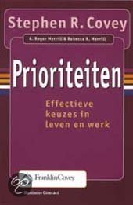
Thema Omgaan met veranderingen
“Verandering is de enige constante in het leven” Heraclitus, een Griekse filosoof die leefde van 540-480 v.Chr., ook bekend van “Panta Rhei (alles stroomt) niets blijft hetzelfde; alles verandert voortdurend. ‘Je stapt nooit tweemaal in dezelfde rivier’ is een andere uitspraak van hem.
“Je hoeft niet beter te zijn dan een ander; alleen beter dan gisteren” volgens Jigaro Kano, (1860-1938) Japans opvoedkundige en grondlegger van de judo.
Enkele kenmerken van zijn gedachtegoed:
Voortdurende verbetering: streef ernaar elke dag iets beter te worden.
Efficiënt gebruik van energie: bereik zoveel mogelijk resultaat met zo weinig mogelijk verspilling.
Wederzijds welzijn en voordeel: persoonlijke groei gaat samen met het helpen van anderen
De fundamentele vragen zijn veranderen we omdat de noodzaak aanwezig is of vanuit een diepe innerlijke overtuiging, of uit een combinatie van beide?
Mensen veranderen meestal wanneer de noodzaak groot genoeg wordt. Dit zet dan aan tot die verandering. Zo maar een voorbeeld van een verslaafd roker die wil stoppen “zo gaat het niet langer, vanaf vandaag stop ik met roken!”
Op basis van zijn wilskracht komt hij ver, maar hoe gaat dat na x periode?
Duurzame verandering ontstaat pas wanneer die noodzaak verbonden raakt met een innerlijke overtuiging. Hierdoor beklijft de verandering.
In het voorbeeld van de roker vanuit bijvoorbeeld de innerlijke overtuiging dat het roken tot zijn vroege dood gaat leiden waardoor hij zijn eigen kinderen niet meer zal zien opgroeien. En dat raakt hem diep in zijn vaderrol vanuit zijn innerlijke overtuiging.
Of de workaholic die van zijn thuisfront te horen krijgt dat als hij op deze wijze doorgaat zijn partner afscheid van hem gaat nemen. Hier dient zich een noodzaak aan omdat hij haar niet wil verliezen. Die prijs zou hem te hoog zijn.
Om van het te harde werken af te komen zal hij moeten nadenken of hij zijn partnerrol op deze wijze wil blijven invullen. Met welke consequenties hij verder moet. En zo, vanuit een dieper besef, andere keuzes gaat maken die echt aansluiten bij de man die hij wil zijn.
Als je iedere dag hetzelfde stuk naar je werk rijdt kan het maar zo zijn dat je bepaalde details over het hoofd ziet. Als je iedere keer op delfde stoel gaat zitten tijdens een overleg krijg je vaak dezelfde gedachten en doet dezelfde uitspraken.
Ga eens op bijvoorbeeld een tegenover staande stoel zitten en merk eens op of en wat je anders denkt en doet. Als je vaak zwijgt tijdens het overleg neem vaker het woord. Als je veel praat hou eens je mond. als je veel uitlegt ga eens vragen stellen.
Het zijn concrete veranderingen die je toepast. Wat leveren ze je op.
Laatst pochte iemand eens met zijn jarenlange ervaring over een bepaald onderwerp.
De vraag hoelang heb je al last van deze ervaring? leverde me boze blikken op.
Waarom stellen kleine kinderen zoveel vragen? Ze hebben nog geen ervaring, hun denkkader is nog niet gevuld. En ze zijn gewend aan verandering want ze groeien nog.
Zouden concrete veranderingen jou ook nog verder kunnen laten groeien?
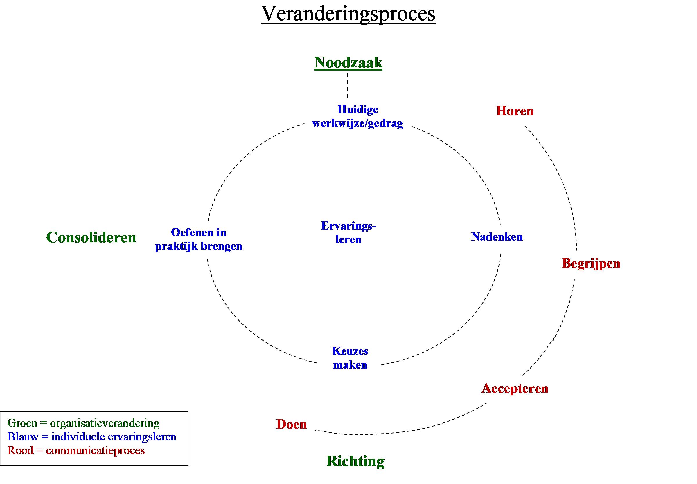
Omgaan met veranderingen met behulp van de Circle Oriëntaties Methode
Kijk eens naar de rol die speelt in een veranderingsproces. Hoe draag jij positief bij? Hoe rem jij verandering? En wat zijn de gevolgen hiervan?
| Circle Oriëntaties methode® | I=Introvert | E=Extravert | T=Taakgericht | R=Relatiegericht | ||
|---|---|---|---|---|---|---|
| Hoe gaan de diverse Circle Oriëntaties® om met verandering? | ||||||
| Ondersteunen | Ondernemen | Onderbouwen | Overdenken | Overleggen | Overeenkomen | |
| C1 I/R | C2 E/T | C3 I/T | C4 I/T | C5 E/R | C6 E/R | |
| Positieve | zorg voor | zoekt resultaat | brengt structuur | doordachte | weet welke | veranderen is |
| bijdrage aan | collega's | wil oplossingen | aan | stappen in het | gevoelens er | "feest" |
| verandering | bewaakt kwaliteit | neemt voortouw | geeft inzicht door | proces | leven | creatief in |
| feiten | "rots in de | wil samen met | oplossingen | |||
| branding" | anderen | |||||
| Remmende | wil zorg van | te snel naar | staat niet open | tempo uit het | gevoelen voor | te veel zaken |
| factor bij | anderen | oplossing | voor andere | proces | anderen invullen | tegelijk |
| verandering | overnemen | te veel focus op | meningen | teveel in eigen | eigen mening op | geen prioriteiten |
| eigen voorkeur als | resultaat | geen aandacht | gedachten | de achtergrond | stellen | |
| norm stellen | voor gevoelens | |||||
| Gevolg hiervan | haakt | draaft te ver door | gaat te veel eigen | blijft hangen in | neemt te veel op | chaotisch |
| teleurgesteld af | "voor de troepen | gang | eigen gedachten | eigen | handelen | |
| gevoel van falen | uit" | komt alleen te | doet dan niet | schouders | te weinig afmaken | |
| als het niet lukt | staan | meer mee | voelt zich tekort | |||
| gedaan | ||||||
| Rol bij | geweten | resultaat | feiten | rust | samen | flexibiliteit |
| verandering | ||||||
| R.O. van Hussen / Circle Advies Training Begeleiding | 1 | |||||
Maak eens een veranderingsprofiel van jezelf!
Wat helpt jou beter met veranderingen om te gaan? Wat werkt niet voor jou?
| Circle Oriëntaties methode® | I=Introvert | E=Extravert | T=Taakgericht | R=Relatiegericht | ||
|---|---|---|---|---|---|---|
| Hoe gaan de diverse Circle Oriëntaties® om met verandering? | ||||||
| Ondersteunen | Ondernemen | Onderbouwen | Overdenken | Overleggen | Overeenkomen | |
| C1 I/R | C2 E/T | C3 I/T | C4 I/T | C5 E/R | C6 E/R | |
| Welke | rustig | actie/snel | rustig | rustig | rustig | actief |
| aanpak | helpend | uitdagend | rationeel | tijd gunnen | vriendelijk | innemend |
| spreekt | met respect | oplossings- | logisch | denkpauzes | informerend | inspirerend |
| aan? | aanmoedigend | gericht | weinig | geven | zijn mening | gevoelig |
| nieuwe zaken | emoties | voorbereid | vragen | |||
| Welke | te druk | te traag | te druk | te plots | onder druk | te rustig |
| aanpak | niet steunen | geen uitdaging | luchtig | opjutten | zetten | niet |
| ontstemt? | niet uit laten | initiatief | wollig | door blijven | onvriendelijk | glimlachen |
| praten | ontnemen | emotioneel | praten | er niet bij | uit de hoogte | |
| geen respect | autoriteit | onvoorbereid | betrekken | doen | ||
| tonen | ondergraven | mening | gevoelloos | |||
| negeren | ||||||
| Welke | is dit het | wat levert | wie doet wat | hoeveel tijd | met wie wordt | kan iedereen |
| vragen | beste voor | dit nu op? | en wanneer? | staat | overlegd? | zich erin |
| stelt hij | ons? | wie heeft de | hoe zit het | ervoor? | hoe kunnen we | vinden? |
| zich? | is dit goed? | leiding? | precies in | is er goed | iedereen | welke |
| hoe kan ik | kan het snel? | elkaar? | over | erbij | gevoelens | |
| helpen? | is het | is het logisch? | nagedacht? | betrekken? | roept dit op? | |
| wat kunnen | praktisch? | wat zijn de | wat is het | wie heeft het | wat kan ik | |
| we er op | feiten? | doel? | beste idee? | doen om het | ||
| langere | is er een | zijn er ook | geaccepteerd | |||
| termijn mee? | plan? | andere | te krijgen? | |||
| invalshoeken? | ||||||
| R.O. van Hussen / Circle Advies Training Begeleiding | 2 | |||||
Leestips:
In zijn boek ‘Diepgaande verandering’ neemt Prof. Dr. Robert E. Quin ons mee op een introspectieve reis vol verhelderende verhalen en voorbeelden van de verschillende fasen van verandering en het gevaar van weigeren van verandering. Ken uzelf daarbij!
De meeste mensen deugen- Rutger Bregman
Atomic Habits- James Clear
Mindset-Carol Dweck
Hele toegankelijke titels zijn:
‘Wie heeft mijn kaas gepikt?’ van Spencer Johnson en Kenneth Blanchard.
‘Wat hebben ze nu weer bedacht?’ Van Johanna kroon
‘Gedoe komt er toch ’van Joop Swieringa en Jacqueline Jansen
‘De pauw on het land van de pinguïns’ van Barbara Hateley en Warren H. Schmidt.